Capítulo 7Inferência Bayesiana
Esboço do capítulo
- Seção 1 As Distribuições a Priori e a Posteriori
- Seção 2 Inferências Baseadas na Distribuição a Posteriori
- Seção 3 Cálculos Bayesianos
- Seção 4 Escolha de Distribuições a Priori
- Seção 5 Demonstrações Adicionais (Avançado)
No Capítulo 5, apresentamos os conceitos básicos da inferência. No centro da teoria da inferência está o conceito de modelo estatístico \(\{f_\theta : \theta \in \negrito{\Omega}\}\), que descreve a incerteza do estatístico sobre como os dados observados foram produzidos. O Capítulo 6 tratou da análise dessa incerteza com base apenas no modelo e nos dados. Em alguns casos, isso pareceu ter bastante sucesso, mas observamos que lá tratamos apenas de alguns dos contextos mais simples.
Se aceitarmos o princípio de que, para poderem ser analisadas, todas as incertezas precisam ser descritas por probabilidades, então a especificação de um modelo, sozinha, é incompleta, pois ela não nos diz como fazer afirmações probabilísticas sobre o verdadeiro valor desconhecido de \(\theta\). Neste capítulo, completamos a descrição de modo que todas as incertezas sejam descritas por probabilidades. Isso leva a uma distribuição de probabilidade para \(\theta\) e, em essência, estamos na situação da Seção 5.2, com o parâmetro fazendo agora o papel da resposta não observada. Essa é a abordagem bayesiana da inferência.
Muitos estatísticos preferem desenvolver a teoria estatística sem os ingredientes adicionais necessários a uma descrição probabilística completa das incógnitas. Em parte, isso se deve ao desejo de evitar a especificação dos ingredientes adicionais do modelo necessários à formulação bayesiana. É claro que preferiríamos que nossa análise estatística se baseasse nas hipóteses de modelo menos numerosas e mais fracas possíveis. Por exemplo, na Seção 6.4, apresentamos métodos livres de distribuição1. Paga-se um preço por esse enfraquecimento, porém, e ele costuma se manifestar em ambiguidades sobre como a inferência deve prosseguir. A formulação bayesiana, em essência, elimina a ambiguidade, mas ao preço de um modelo mais elaborado.
A abordagem bayesiana da inferência é às vezes apresentada como antagônica aos métodos baseados em propriedades de amostragem repetida (muitas vezes chamados de métodos frequentistas), como os discutidos, por exemplo, no Capítulo 6. A abordagem adotada neste texto, porém, é a de que o modelo bayesiano surge naturalmente quando o estatístico supõe mais ingredientes para o modelo. Cabe ao estatístico decidir que ingredientes podem ser justificados e, então, usar métodos apropriados. Devemos desconfiar de todas as hipóteses do modelo, pois usar hipóteses inadequadas pode invalidar nossas inferências. A verificação do modelo2 será tratada no Capítulo 9.
7.1 As Distribuições a Priori e a Posteriori
O modelo bayesiano de inferência contém o modelo estatístico \(\{f_\theta : \theta \in \negrito{\Omega}\}\) para os dados \(s \in S\) e acrescenta a ele a medida de probabilidade3 a priori4 \(\Pi\) para \(\theta\). A distribuição a priori descreve as crenças do estatístico sobre o verdadeiro valor do parâmetro \(\theta\) a priori, isto é, antes de observar os dados. Por exemplo, se \(\negrito{\Omega} = [0, 1]\) e \(\theta\) é a probabilidade de obter cara no lançamento de uma moeda, então a densidade a priori \(\pi\) representada na Figura 7.1.1 indica que o estatístico tem alguma crença de que o verdadeiro valor de \(\theta\) está em torno de \(0{,}5\). Mas essa informação não é muito precisa.
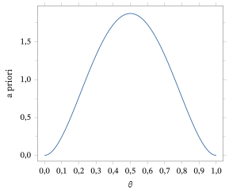
Por outro lado, a densidade a priori \(\pi\) representada na Figura 7.1.2 indica que o estatístico tem uma informação muito precisa sobre o verdadeiro valor de \(\theta\). Na verdade, se o estatístico não sabe nada sobre o verdadeiro valor de \(\theta\), então usar a distribuição uniforme5 em \([0, 1]\) pode ser apropriado.
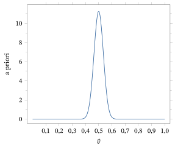
É importante lembrar que as probabilidades especificadas pela distribuição a priori representam crenças. Em geral, elas não correspondem a frequências de longo prazo, embora possam corresponder em certas circunstâncias. Uma pergunta natural é: de onde vêm essas crenças numa aplicação? Uma resposta fácil é dizer que elas vêm da experiência anterior com o sistema aleatório sob investigação ou, talvez, com sistemas relacionados. Para ser honesto, porém, raramente é esse o caso, e é preciso admitir que a distribuição a priori, assim como o modelo estatístico, é muitas vezes uma construção um tanto arbitrária, usada para conduzir as investigações do estatístico. Isso levanta a questão de saber se as inferências obtidas têm ou não alguma relevância para o contexto prático, caso os ingredientes do modelo sofram dessa arbitrariedade. É aqui que entra em cena o conceito de verificação do modelo, um tópico que discutiremos no Capítulo 9. Por ora, vamos supor que todos os ingredientes fazem sentido, mas lembre que, numa aplicação, eles precisam ser verificados para que as inferências obtidas tenham significado prático.
Observamos que os ingredientes da formulação bayesiana da inferência especificam uma distribuição marginal6 para \(\theta\), a saber, a distribuição a priori \(\Pi\), e um conjunto de distribuições condicionais para os dados \(s\) dado \(\theta\), a saber, \(\{f_\theta : \theta \in \negrito{\Omega}\}\). Pela lei da probabilidade total7 (Teoremas 2.3.1 e 2.8.1), esses ingredientes especificam uma distribuição conjunta8 para \((s, \theta)\), a saber, \[ \pi(\theta) f_\theta(s), \] em que \(\pi\) denota a função de probabilidade9 ou a função densidade10 associada a \(\Pi\). Quando a distribuição a priori é absolutamente contínua11, a distribuição marginal de \(s\) é dada por \[ m(s) = \int_{\negrito{\Omega}} \pi(\theta) f_\theta(s) \, d\theta \] e é chamada de distribuição preditiva a priori12 dos dados. Quando a distribuição a priori de \(\theta\) é discreta, substituímos (como de costume) a integral por uma soma.
Se não observássemos nenhum dado, a distribuição preditiva a priori seria a distribuição pertinente para fazer afirmações probabilísticas sobre o valor desconhecido de \(s\). Do mesmo modo, a distribuição a priori \(\pi\) é a distribuição pertinente a usar para fazer afirmações probabilísticas sobre \(\theta\) antes de observarmos \(s\). A inferência sobre essas quantidades não observadas procede então como descrito na Seção 5.2.
Lembre agora o princípio da probabilidade condicional13, a saber, \(P(A)\) é substituída por \(P(A \mid C)\) depois que nos dizem que \(C\) é verdadeiro. Portanto, depois de observar os dados, a distribuição pertinente a usar para fazer afirmações probabilísticas sobre \(\theta\) é a distribuição condicional14 de \(\theta\) dado \(s\). Denotamos essa medida de probabilidade condicional por \(\Pi(\cdot \mid s)\) e a chamamos de distribuição a posteriori15 de \(\theta\). Observe que a densidade (ou função de probabilidade) da distribuição a posteriori16 se obtém imediatamente tomando a densidade conjunta17 \(\pi(\theta) f_\theta(s)\) de \((s, \theta)\) e dividindo-a pela marginal \(m(s)\) de \(s\).
A distribuição a posteriori de \(\theta\) é a distribuição condicional de \(\theta\), dado \(s\). A densidade a posteriori, ou função de probabilidade a posteriori (a que for pertinente), é dada por \begin{equation} \pi(\theta \mid s) = \frac{\pi(\theta) f_\theta(s)}{m(s)}. \tag{7.1.1} \end{equation}
Às vezes, esse uso da probabilidade condicional é chamado de aplicação do teorema de Bayes (Teorema 1.5.2). Isso porque podemos pensar num valor de \(\theta\) sendo escolhido primeiro de acordo com \(\pi\) e, depois, em \(s\) sendo gerado a partir de \(f_\theta\). Queremos então fazer afirmações probabilísticas sobre o primeiro estágio, tendo observado o resultado do segundo estágio. É importante lembrar, porém, que escolher usar a distribuição a posteriori para fazer afirmações probabilísticas sobre \(\theta\) é um axioma, ou princípio, e não um teorema.
Observamos que, em (7.1.1), a preditiva a priori dos dados \(s\) faz o papel da constante normalizadora inversa da densidade a posteriori. Com isso queremos dizer que a densidade a posteriori de \(\theta\) é proporcional a \(\pi(\theta) f_\theta(s)\), como função de \(\theta\); para convertê-la numa função densidade propriamente dita, basta dividir por \(m(s)\). Em muitos exemplos, não precisamos calcular a constante normalizadora inversa. Isso porque reconhecemos, na expressão \(\pi(\theta) f_\theta(s)\), a forma funcional da distribuição a posteriori como função de \(\theta\) e, assim, deduzimos imediatamente a distribuição de probabilidade a posteriori de \(\theta\). Além disso, há métodos de Monte Carlo, como os discutidos no Capítulo 4, que nos permitem amostrar de \(\pi(\theta \mid s)\) sem conhecer \(m(s)\) (ver também a Seção 7.3).
Consideremos algumas aplicações da inferência bayesiana.
Suponha que observamos uma amostra \((x_1, \ldots, x_n)\) da distribuição \(\text{Bernoulli}(\theta)\), com \(\theta \in [0, 1]\) desconhecido. Para a distribuição a priori, tomamos \(\pi\) igual a uma densidade \(\text{Beta}(\alpha, \beta)\) (ver o Problema 2.4.16). Então a densidade a posteriori de \(\theta\) é proporcional à verossimilhança18 \[ \prod_{i=1}^{n} \theta^{x_i} (1 - \theta)^{1 - x_i} = \theta^{n\bar{x}} (1 - \theta)^{n(1 - \bar{x})} \] vezes a densidade a priori \[ B^{-1}(\alpha, \beta) \, \theta^{\alpha - 1} (1 - \theta)^{\beta - 1}. \] Esse produto é proporcional a \[ \theta^{n\bar{x} + \alpha - 1} (1 - \theta)^{n(1 - \bar{x}) + \beta - 1}. \] Reconhecemos aí a densidade não normalizada de uma distribuição \(\text{Beta}(n\bar{x} + \alpha, n(1 - \bar{x}) + \beta)\). Assim, neste exemplo, não precisamos calcular \(m(x_1, \ldots, x_n)\) para obter a distribuição a posteriori.
Como caso particular, suponha que observamos \(n\bar{x} = 10\) numa amostra de \(n = 40\) e que \(\alpha = \beta = 1\), isto é, temos uma distribuição a priori uniforme para \(\theta\). Então a distribuição a posteriori de \(\theta\) é a distribuição \(\text{Beta}(11, 31)\). Representamos a densidade a posteriori na Figura 7.1.3, junto com a densidade a priori.
A dispersão da distribuição a posteriori nos dá alguma ideia da precisão de quaisquer afirmações probabilísticas que façamos sobre \(\theta\). Observe quanta informação os dados acrescentaram, como se vê nos gráficos das densidades a priori e a posteriori.
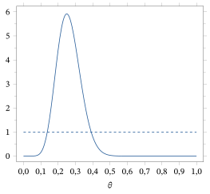
Suponha que \((x_1, \ldots, x_n)\) é uma amostra de uma distribuição \(N(\mu, \sigma_0^2)\), em que \(\mu \in R^1\) é desconhecido e \(\sigma_0^2\) é conhecido. A função de verossimilhança20 é então dada por \[ L(\mu \mid x_1, \ldots, x_n) = \exp\left(-\frac{n}{2\sigma_0^2} (\bar{x} - \mu)^2\right). \]
Suponha que tomamos como distribuição a priori de \(\mu\) uma \(N(\mu_0, \tau_0^2)\), para alguma escolha especificada de \(\mu_0\) e \(\tau_0^2\). A densidade a posteriori de \(\mu\) é então proporcional a \begin{align} &\exp\left\{-\frac{1}{2\tau_0^2} (\mu - \mu_0)^2\right\} \exp\left\{-\frac{n}{2\sigma_0^2} (\bar{x} - \mu)^2\right\} \notag\\ &= \exp\left\{-\frac{1}{2\tau_0^2} \left(\mu^2 - 2\mu\mu_0 + \mu_0^2\right) - \frac{n}{2\sigma_0^2} \left(\bar{x}^2 - 2\mu\bar{x} + \mu^2\right)\right\} \notag\\ &= \exp\left\{-\frac{1}{2} \left(\frac{1}{\tau_0^2} + \frac{n}{\sigma_0^2}\right) \left[\mu^2 - 2\left(\frac{1}{\tau_0^2} + \frac{n}{\sigma_0^2}\right)^{-1} \left(\frac{\mu_0}{\tau_0^2} + \frac{n}{\sigma_0^2}\bar{x}\right)\mu\right]\right\} \notag\\ &\qquad \times \exp\left\{-\frac{\mu_0^2}{2\tau_0^2} - \frac{n\bar{x}^2}{2\sigma_0^2}\right\} \notag\\ &= \exp\left\{-\frac{1}{2} \left(\frac{1}{\tau_0^2} + \frac{n}{\sigma_0^2}\right) \left(\mu - \left(\frac{1}{\tau_0^2} + \frac{n}{\sigma_0^2}\right)^{-1} \left(\frac{\mu_0}{\tau_0^2} + \frac{n}{\sigma_0^2}\bar{x}\right)\right)^2\right\} \notag\\ &\qquad \times \exp\left\{\frac{1}{2} \left(\frac{1}{\tau_0^2} + \frac{n}{\sigma_0^2}\right)^{-1} \left(\frac{\mu_0}{\tau_0^2} + \frac{n}{\sigma_0^2}\bar{x}\right)^2\right\} \notag\\ &\qquad \times \exp\left\{-\frac{1}{2} \left(\frac{\mu_0^2}{\tau_0^2} + \frac{n\bar{x}^2}{\sigma_0^2}\right)\right\}. \tag{7.1.2} \end{align} Reconhecemos imediatamente essa expressão, como função de \(\mu\), como proporcional à densidade de uma distribuição \[ N\left(\left(\frac{1}{\tau_0^2} + \frac{n}{\sigma_0^2}\right)^{-1} \left(\frac{\mu_0}{\tau_0^2} + \frac{n}{\sigma_0^2}\bar{x}\right), \left(\frac{1}{\tau_0^2} + \frac{n}{\sigma_0^2}\right)^{-1}\right). \]
Observe que a média a posteriori é uma média ponderada da média a priori \(\mu_0\) e da média amostral \(\bar{x}\), com pesos \[ \left(\frac{1}{\tau_0^2} + \frac{n}{\sigma_0^2}\right)^{-1} \frac{1}{\tau_0^2} \quad\text{e}\quad \left(\frac{1}{\tau_0^2} + \frac{n}{\sigma_0^2}\right)^{-1} \frac{n}{\sigma_0^2}, \] respectivamente. Isso implica que a média a posteriori fica entre a média a priori e a média amostral.
Além disso, a variância21 a posteriori é menor que a variância da média amostral. Assim, se a informação expressa pela distribuição a priori for precisa, as inferências sobre \(\mu\) baseadas na distribuição a posteriori serão mais precisas que as baseadas apenas na média amostral. Observe que, quanto mais difusa for a distribuição a priori — isto é, quanto maior for \(\tau_0^2\) —, menor será a influência dela. Por exemplo, quando \(n = 20\) e \(\sigma_0^2 = 1\), \(\tau_0^2 = 1\), a razão entre a variância a posteriori e a variância da média amostral é \(20/21 \approx 0{,}95\). Houve, portanto, uma melhora de 5% devida ao uso da informação a priori.
Por exemplo, suponha que \(\sigma_0^2 = 1\), \(\mu_0 = 0\), \(\tau_0^2 = 2\) e que, para \(n = 10\), observamos \(\bar{x} = 1{,}2\). Então a distribuição a priori é uma \(N(0, 2)\), enquanto a distribuição a posteriori é uma distribuição \[ N\left(\left(\frac{1}{2} + \frac{10}{1}\right)^{-1} \left(\frac{0}{2} + \frac{10}{1} 1{,}2\right), \left(\frac{1}{2} + \frac{10}{1}\right)^{-1}\right) = N(1{,}1429; 9{,}5238 \times 10^{-2}). \] Essas densidades estão representadas na Figura 7.1.4. Observe que a distribuição a posteriori é bem concentrada em comparação com a distribuição a priori; portanto, aprendemos muito com os dados.
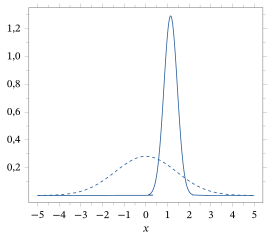
Suponha que temos uma resposta categórica \(s\) que assume \(k\) valores possíveis, digamos, \(s \in S = \{1, \ldots, k\}\). Por exemplo, suponha que temos uma tigela com fichas marcadas com um dos números \(1, \ldots, k\). Uma proporção \(\theta_i\) das fichas está marcada com \(i\), e retiramos uma ficha ao acaso, observando o seu número.
Quando os \(\theta_i\) são desconhecidos, o modelo estatístico é dado por \[ \{p_{(\theta_1, \ldots, \theta_k)} : (\theta_1, \ldots, \theta_k) \in \negrito{\Omega}\}, \] em que \(p_{(\theta_1, \ldots, \theta_k)}(i)\) \({}= P(s = i) = \theta_i\) e \[ \negrito{\Omega} = \{(\theta_1, \ldots, \theta_k) : 0 \le \theta_i \le 1,\ i = 1, \ldots, k \text{ e } \theta_1 + \cdots + \theta_k = 1\}. \] Observe que o espaço paramétrico22 tem, na verdade, apenas \((k - 1)\) dimensões porque, por exemplo, \(\theta_k = 1 - \theta_1 - \cdots - \theta_{k-1}\), isto é, uma vez determinados \(k - 1\) dos \(\theta_i\), o valor restante fica especificado.
Suponha agora que observamos uma amostra \((s_1, \ldots, s_n)\) desse modelo. Denote por \(x_i\) a frequência (contagem) da \(i\)-ésima categoria na amostra. Então, pelo Exemplo 2.8.5, vemos que a verossimilhança é dada por \[ L(\theta_1, \ldots, \theta_k \mid (s_1, \ldots, s_n)) = \theta_1^{x_1} \theta_2^{x_2} \cdots \theta_k^{x_k}. \]
Para a distribuição a priori, supomos que \((\theta_1, \ldots, \theta_{k-1}) \sim \text{Dirichlet}(\alpha_1, \alpha_2, \ldots, \alpha_k)\), com densidade (ver o Problema 2.7.13) dada por \begin{equation} \frac{\Gamma(\alpha_1 + \cdots + \alpha_k)}{\Gamma(\alpha_1) \cdots \Gamma(\alpha_k)} \theta_1^{\alpha_1 - 1} \theta_2^{\alpha_2 - 1} \cdots \theta_k^{\alpha_k - 1} \tag{7.1.3} \end{equation} para \((\theta_1, \ldots, \theta_k) \in \negrito{\Omega}\) (lembre que \(\theta_k = 1 - \theta_1 - \cdots - \theta_{k-1}\)). Os \(\alpha_i\) são constantes não negativas escolhidas pelo estatístico para refletir as suas crenças sobre o valor desconhecido de \((\theta_1, \ldots, \theta_k)\). A escolha \(\alpha_1 = \alpha_2 = \cdots = \alpha_k = 1\) corresponde a uma distribuição uniforme, pois então (7.1.3) é constante em \(\negrito{\Omega}\).
A densidade a posteriori de \((\theta_1, \ldots, \theta_{k-1})\) é então proporcional a \[ \theta_1^{x_1 + \alpha_1 - 1} \theta_2^{x_2 + \alpha_2 - 1} \cdots \theta_k^{x_k + \alpha_k - 1} \] para \((\theta_1, \ldots, \theta_k) \in \negrito{\Omega}\). A partir de (7.1.3), deduzimos imediatamente que a distribuição a posteriori de \((\theta_1, \ldots, \theta_{k-1})\) é \(\text{Dirichlet}(x_1 + \alpha_1, x_2 + \alpha_2, \ldots, x_k + \alpha_k)\).
Suponha que \((x_1, \ldots, x_n)\) é uma amostra de uma distribuição \(N(\mu, \sigma^2)\), em que \(\mu \in R^1\) e \(\sigma > 0\) são desconhecidos. A função de verossimilhança é então dada por \[ L\left(\mu, \sigma^2 \mid x_1, \ldots, x_n\right) = \left(2\pi\sigma^2\right)^{-n/2} \exp\left(-\frac{n}{2\sigma^2} (\bar{x} - \mu)^2\right) \exp\left(-\frac{n - 1}{2\sigma^2} s^2\right). \]
Suponha que colocamos a seguinte distribuição a priori em \((\mu, \sigma^2)\). Primeiro, especificamos que \[ \mu \mid \sigma^2 \sim N(\mu_0, \tau_0^2 \sigma^2), \] isto é, a distribuição a priori condicional de \(\mu\) dado \(\sigma^2\) é normal, com média \(\mu_0\) e variância \(\tau_0^2 \sigma^2\). Em seguida, especificamos a distribuição a priori marginal de \(\sigma^2\) como \begin{equation} \frac{1}{\sigma^2} \sim \text{Gama}(\alpha_0, \beta_0). \tag{7.1.4} \end{equation} Às vezes, (7.1.4) é expressa dizendo-se que \(\sigma^2\) tem distribuição Gama inversa. Os valores \(\mu_0\), \(\tau_0^2\), \(\alpha_0\) e \(\beta_0\) são escolhidos pelo estatístico para refletir as suas crenças a priori.
A partir disso, podemos deduzir (ver a Seção 7.5 para a dedução completa) que a distribuição a posteriori de \((\mu, \sigma^2)\) é dada por \begin{equation} \mu \mid \sigma^2, x_1, \ldots, x_n \sim N\left(\mu_x, \left(n + \frac{1}{\tau_0^2}\right)^{-1} \sigma^2\right) \tag{7.1.5} \end{equation} e \begin{equation} \frac{1}{\sigma^2} \,\Big|\, x_1, \ldots, x_n \sim \text{Gama}(\alpha_0 + n/2, \beta_x), \tag{7.1.6} \end{equation} em que \begin{equation} \mu_x = \left(n + \frac{1}{\tau_0^2}\right)^{-1} \left(\frac{\mu_0}{\tau_0^2} + n\bar{x}\right) \tag{7.1.7} \end{equation} e \begin{equation} \beta_x = \beta_0 + \frac{n - 1}{2} s^2 + \frac{1}{2} \frac{n(\bar{x} - \mu_0)^2}{1 + n\tau_0^2}. \tag{7.1.8} \end{equation}
Para gerar um valor \((\mu, \sigma^2)\) da distribuição a posteriori, podemos usar o método da composição24 (ver o Problema 2.10.13), gerando primeiro \(\sigma^2\) por (7.1.6) e depois usando (7.1.5) para gerar \(\mu\). Discutiremos isso mais a fundo na Seção 7.3.
Observe que, quando \(\tau_0 \to \infty\), isto é, quando a distribuição a priori de \(\mu\) se torna cada vez mais difusa, a distribuição a posteriori condicional de \(\mu\) dado \(\sigma^2\) converge em distribuição para uma distribuição \(N(\bar{x}, \sigma^2/n)\), pois \begin{equation} \mu_x \to \bar{x} \tag{7.1.9} \end{equation} e \begin{equation} \left(n + \frac{1}{\tau_0^2}\right)^{-1} \to \frac{1}{n}. \tag{7.1.10} \end{equation} Além disso, quando \(\tau_0 \to \infty\) e \(\beta_0 \to 0\), a distribuição a posteriori marginal de \(1/\sigma^2\) converge em distribuição para uma distribuição \(\text{Gama}\bigl(\alpha_0 + n/2, (n - 1)s^2/2\bigr)\), pois \begin{equation} \beta_x \to (n - 1)s^2/2. \tag{7.1.11} \end{equation}
Na verdade, não parece fazer muito sentido fazer \(\tau_0 \to \infty\) e \(\beta_0 \to 0\) na distribuição a priori de \((\mu, \sigma^2)\), já que a distribuição a priori não converge para uma distribuição de probabilidade própria. A ideia aqui, porém, é que pensamos em tomar \(\tau_0\) grande e \(\beta_0\) pequeno, de modo que as inferências a posteriori sejam aproximadamente as obtidas a partir da distribuição a posteriori limite. Ainda assim, é preciso escolher \(\alpha_0\), mesmo no caso difuso, já que as inferências limite dependem dessa quantidade.
Resumo da Seção 7.1
- A inferência bayesiana acrescenta ao modelo amostral25 dos dados a distribuição de probabilidade a priori, como um ingrediente adicional a ser usado na determinação das inferências sobre o valor desconhecido do parâmetro.
- Observados os dados, o princípio da probabilidade condicional leva à distribuição a posteriori do parâmetro como base para a inferência.
- A inferência sobre parâmetros marginais é feita marginalizando a distribuição a posteriori completa.
Exercícios
7.1.1 Suponha que \(S = \{1, 2\}\), \(\negrito{\Omega} = \{1, 2, 3\}\) e que a classe de distribuições de probabilidade da resposta \(s\) é dada pela tabela a seguir.
| \(s = 1\) | \(s = 2\) | |
|---|---|---|
| \(f_1(s)\) | \(1/2\) | \(1/2\) |
| \(f_2(s)\) | \(1/3\) | \(2/3\) |
| \(f_3(s)\) | \(3/4\) | \(1/4\) |
Se usarmos a distribuição a priori \(\pi(\theta)\) dada pela tabela
| \(\theta = 1\) | \(\theta = 2\) | \(\theta = 3\) | |
|---|---|---|---|
| \(\pi(\theta)\) | \(1/5\) | \(2/5\) | \(2/5\) |
,
determine a distribuição a posteriori de \(\theta\) para cada amostra possível de tamanho 2.
7.1.2 No Exemplo 7.1.1, determine a média e a variância a posteriori de \(\theta\).
7.1.3 No Exemplo 7.1.2, qual é a probabilidade a posteriori de que \(\mu\) seja positivo, dado que \(n = 10\), \(\bar{x} = 1\), quando \(\sigma_0^2 = 1\), \(\mu_0 = 0\) e \(\tau_0^2 = 10\)? Compare-a com a probabilidade a priori desse evento.
7.1.4 Suponha que \((x_1, \ldots, x_n)\) é uma amostra de uma distribuição \(\text{Poisson}(\lambda)\), com \(\lambda \ge 0\) desconhecido. Se usarmos para \(\lambda\) a distribuição a priori dada pela distribuição \(\text{Gama}(\alpha, \beta)\), determine a distribuição a posteriori de \(\lambda\).
7.1.5 Suponha que \((x_1, \ldots, x_n)\) é uma amostra de uma distribuição \(\text{Uniforme}[0, \theta]\), com \(\theta > 0\) desconhecido. Se a distribuição a priori de \(\theta\) for \(\text{Gama}(\alpha, \beta)\), obtenha a forma da densidade a posteriori de \(\theta\).
7.1.6 Encontre a média e a variância a posteriori de \(\theta_i\) no Exemplo 7.1.3 quando \(k = 3\). (Sugestão: veja os Problemas 3.2.16 e 3.3.20.)
7.1.7 Suponha que temos a amostra
| \(6{,}56\) | \(6{,}39\) | \(3{,}30\) | \(3{,}03\) | \(5{,}31\) | \(5{,}62\) | \(5{,}10\) | \(2{,}45\) | \(8{,}24\) | \(3{,}71\) |
|---|---|---|---|---|---|---|---|---|---|
| \(4{,}14\) | \(2{,}80\) | \(7{,}43\) | \(6{,}82\) | \(4{,}75\) | \(4{,}09\) | \(7{,}95\) | \(5{,}84\) | \(8{,}44\) | \(9{,}36\) |
de uma distribuição \(N(\mu, \sigma^2)\) e determinamos que uma distribuição a priori especificada por \(\mu \mid \sigma^2 \sim N(3, 4\sigma^2)\), \(\sigma^{-2} \sim \text{Gama}(1, 1)\) é apropriada. Determine a distribuição a posteriori de \((\mu, 1/\sigma^2)\).
7.1.8 Suponha que a probabilidade a priori de \(\theta\) estar num conjunto \(A \subset \negrito{\Omega}\) é \(0{,}25\) e que a probabilidade a posteriori de \(\theta\) estar em \(A\) é \(0{,}80\). (a) Explique que efeito os dados tiveram sobre as suas crenças a respeito de o verdadeiro valor de \(\theta\) estar em \(A\).(b) Explique por que é mais pertinente relatar uma probabilidade a posteriori do que uma probabilidade a priori.
7.1.9 Suponha que você lança uma moeda e põe uma distribuição a priori \(\text{Uniforme}[0{,}4; 0{,}6]\) em \(\theta\), a probabilidade de obter cara num único lançamento. (a) Se você lançar a moeda \(n\) vezes e obtiver \(n\) caras, determine a densidade a posteriori de \(\theta\).(b) Suponha que o verdadeiro valor de \(\theta\) seja, na verdade, \(0{,}99\). A distribuição a posteriori de \(\theta\) vai alguma vez pôr massa de probabilidade em torno de \(\theta = 0{,}99\), para alguma amostra de tamanho \(n\)?(c) O que você conclui do item (b) sobre como deve escolher uma distribuição a priori?
7.1.10 Suponha que, para o modelo estatístico \(\{f_\theta : \theta \in R^1\}\), atribuímos a densidade a priori \(\pi\). Suponha agora que reparametrizamos o modelo por meio da função \(\psi = \Psi(\theta)\), em que \(\Psi : R^1 \to R^1\) é diferenciável e estritamente crescente26. (a) Determine a densidade a priori de \(\psi\).(b) Mostre que \(m(x)\) é a mesma, quer parametrizemos o modelo por \(\theta\), quer por \(\psi\).
7.1.11 Suponha que, para o modelo estatístico \(\{f_\theta : \theta \in \negrito{\Omega}\}\), em que \(\negrito{\Omega} = \{-2, -1, 0, 1, 2, 3\}\), atribuímos a função de probabilidade a priori \(\pi\), que é uniforme em \(\negrito{\Omega}\). Suponha agora que estamos interessados principalmente em fazer inferências sobre \(\lvert\theta\rvert\). (a) Determine a distribuição de probabilidade a priori de \(\lvert\theta\rvert\). Essa distribuição é uniforme?(b) Uma distribuição a priori uniforme é às vezes usada para expressar ignorância completa sobre o valor de um parâmetro. A ignorância completa sobre o valor de um parâmetro implica ignorância completa sobre uma função de um parâmetro? Explique.
7.1.12 Suponha que, para o modelo estatístico \(\{f_\theta : \theta \in [0, 1]\}\), atribuímos a densidade a priori \(\pi\), que é uniforme em \(\negrito{\Omega} = [0, 1]\). Suponha agora que estamos interessados principalmente em fazer inferências sobre \(\theta^2\). (a) Determine a densidade a priori de \(\theta^2\). Essa distribuição é uniforme?(b) Uma distribuição a priori uniforme é às vezes usada para expressar ignorância completa sobre o valor de um parâmetro. A ignorância completa sobre o valor de um parâmetro implica ignorância completa sobre uma função de um parâmetro? Explique.
Exercícios computacionais
7.1.13 No Exemplo 7.1.2, quando \(\mu_0 = 2\), \(\tau_0^2 = 1\), \(\sigma_0^2 = 1\), \(n = 20\) e \(\bar{x} = 8{,}2\), gere uma amostra de \(10^4\) (ou tão grande quanto possível) da distribuição a posteriori de \(\mu\) e estime a probabilidade a posteriori de que o coeficiente de variação seja maior que \(0{,}125\), isto é, a probabilidade a posteriori de que \(\sigma_0/\mu > 0{,}125\). Estime o erro da sua aproximação.
7.1.14 No Exemplo 7.1.2, quando \(\mu_0 = 2\), \(\tau_0^2 = 1\), \(\sigma_0^2 = 1\), \(n = 20\) e \(\bar{x} = 8{,}2\), gere uma amostra de \(10^4\) (ou tão grande quanto possível) da distribuição a posteriori de \(\mu\) e estime a esperança27 a posteriori do coeficiente de variação \(\sigma_0/\mu\). Estime o erro da sua aproximação.
7.1.15 No Exemplo 7.1.1, represente as densidades a priori e a posteriori no mesmo gráfico e compare-as quando \(n = 30\), \(\bar{x} = 0{,}73\), \(\alpha = 3\) e \(\beta = 3\). (Sugestão: calcule o logaritmo da densidade a posteriori e depois tome a exponencial do resultado. Você vai precisar da função log-gama, definida por \(\ln \Gamma(\alpha)\) para \(\alpha > 0\).)
Problemas
7.1.16 Suponha que a distribuição a priori de um parâmetro real \(\theta\) é dada pela distribuição \(N(\theta_0, \tau^2)\). Mostre que essa distribuição não converge para uma distribuição de probabilidade quando \(\tau \to \infty\). (Sugestão: considere os limites das funções de distribuição.)
7.1.17 Suponha que \((x_1, \ldots, x_n)\) é uma amostra de \(\{f_\theta : \theta \in \negrito{\Omega}\}\) e que temos uma distribuição a priori \(\pi\). Mostre que, se observarmos uma amostra adicional \((x_{n+1}, \ldots, x_{n+m})\), então a distribuição a posteriori que se obtém usando a posteriori \(\pi(\cdot \mid x_1, \ldots, x_n)\) como distribuição a priori e condicionando em seguida a \((x_{n+1}, \ldots, x_{n+m})\) é a mesma que a distribuição a posteriori obtida usando a distribuição a priori \(\pi\) e condicionando a \((x_1, \ldots, x_n, x_{n+1}, \ldots, x_{n+m})\). Essa é a propriedade de atualização bayesiana.
7.1.18 No Exemplo 7.1.1, determine \(m(x)\). Se lhe pedissem para gerar um valor dessa distribuição, como você faria? (Sugestão: para a parte da geração, use o teorema da probabilidade total.)
7.1.19 Prove que a distribuição a posteriori depende dos dados somente por meio do valor de uma estatística suficiente28.
Problemas computacionais
7.1.20 Para os dados do Exercício 7.1.7, represente as densidades a priori e a posteriori de \(\sigma^2\) em \((0, 10)\) no mesmo gráfico e compare-as. (Sugestão: calcule primeiro os logaritmos das densidades e depois represente a exponencial desses valores.)
7.1.21 No Exemplo 7.1.4, quando \(\mu_0 = 0\), \(\tau_0^2 = 1\), \(\alpha_0 = 2\), \(\beta_0 = 1\), \(n = 20\), \(\bar{x} = 8{,}2\) e \(s^2 = 2{,}1\), gere uma amostra de \(10^4\) (ou tão grande quanto for viável) da distribuição a posteriori de \(\sigma^2\) e estime a probabilidade a posteriori de que \(\sigma > 2\). Estime o erro da sua aproximação.
7.1.22 No Exemplo 7.1.4, quando \(\mu_0 = 0\), \(\tau_0^2 = 1\), \(\alpha_0 = 2\), \(\beta_0 = 1\), \(n = 20\), \(\bar{x} = 8{,}2\) e \(s^2 = 2{,}1\), gere uma amostra de \(10^4\) (ou tão grande quanto for viável) da distribuição a posteriori de \((\mu, \sigma^2)\) e estime a esperança a posteriori de \(\sigma\). Estime o erro da sua aproximação.
Tópicos para discussão
7.1.23 Uma das objeções levantadas contra a metodologia da inferência bayesiana é que ela tem natureza subjetiva. Comente isso e o papel da subjetividade nas investigações científicas.
7.1.24 Dois estatísticos são solicitados a analisar um conjunto de dados \(x\) produzido por um sistema em estudo. O Estatístico I escolhe usar um modelo amostral \(\{f_\theta : \theta \in \negrito{\Omega}\}\) e a distribuição a priori \(\pi_I\), enquanto o Estatístico II escolhe usar um modelo amostral \(\{g_\psi : \psi \in \Psi\}\) e a distribuição a priori \(\pi_{II}\). Comente o fato de que esses ingredientes podem ser completamente diferentes e, portanto, as análises subsequentes também. Qual é a relevância disso para o papel da subjetividade nas análises científicas de dados?
7.2 Inferências Baseadas na Distribuição a Posteriori
Na Seção 7.1, determinamos a distribuição a posteriori de \(\theta\) como um objeto fundamental da inferência bayesiana. Em essência, o princípio da probabilidade condicional afirma que a distribuição a posteriori \(\pi(\theta \,|\, s)\) contém toda a informação relevante do modelo amostral \(\{f_\theta : \theta \in \negrito{\Omega}\}\), da priori \(\pi\) e dos dados \(s\) sobre o verdadeiro valor desconhecido de \(\theta\). Embora esse seja um grande passo adiante, ele não nos diz completamente como fazer os tipos de inferência que discutimos na Seção 5.5.3.
Em particular, precisamos especificar como calcular estimativas e regiões de credibilidade e como fazer a avaliação de hipóteses29 — que é o que faremos nesta seção. Acontece que muitas vezes há várias maneiras plausíveis de proceder, mas todas têm em comum o fato de se basearem na distribuição a posteriori.
Em geral, nosso interesse é especificar inferências sobre uma característica de interesse \(\psi(\theta)\) a valores reais. Uma das grandes vantagens da abordagem bayesiana é que as inferências sobre \(\psi\) são determinadas da mesma maneira que as inferências sobre o parâmetro completo \(\theta\), mas com a distribuição a posteriori marginal de \(\psi\) no lugar da distribuição a posteriori completa. Essa situação pode ser comparada com os métodos de verossimilhança do Capítulo 6, em que nem sempre fica inteiramente claro como devemos proceder para determinar inferências sobre \(\psi\) com base na verossimilhança. Ainda assim, pagamos um preço por isso ao exigir o acréscimo de mais um ingrediente ao modelo, a saber, a priori.
Assim, precisamos determinar a distribuição a posteriori de \(\psi\). Em geral, essa pode ser uma tarefa difícil, mesmo quando temos uma expressão em forma fechada para \(\pi(\theta \,|\, s)\). Quando a distribuição a posteriori de \(\theta\) é discreta, a função de probabilidade a posteriori de \(\psi\) é dada por \[ \omega(\psi_0 \,|\, s) = \sum_{\{\theta : \psi(\theta) = \psi_0\}} \pi(\theta \,|\, s). \]
Quando a distribuição a posteriori de \(\theta\) é absolutamente contínua, muitas vezes conseguimos encontrar uma função complementar30 \(\lambda(\theta)\) tal que \(h(\theta) = (\psi(\theta), \lambda(\theta))\) seja injetora31 e tal que os métodos da Seção 2.9.2 possam ser aplicados. Então, denotando a inversa dessa transformação por \(\theta = h^{-1}(\psi, \lambda)\), os métodos da Seção 2.9.2 mostram que a distribuição a posteriori marginal de \(\psi\) tem densidade dada por \begin{equation} \omega(\psi_0 \,|\, s) = \int \pi(h^{-1}(\psi_0, \lambda) \,|\, s) \lvert J(h^{-1}(\psi_0, \lambda)) \rvert^{-1} \, d\lambda, \tag{7.2.1} \end{equation} em que \(J\) denota o jacobiano32 dessa transformação (veja o Problema 7.2.35). Calcular (7.2.1) pode ser difícil, e em geral evitaremos fazê-lo aqui. Um exemplo ilustra como às vezes podemos evitar a implementação direta de (7.2.1) e ainda assim obter a distribuição a posteriori marginal de \(\psi\).
Suponha que \((x_1, \ldots, x_n)\) é uma amostra de uma distribuição \(N(\mu, \sigma^2)\), em que \(\mu \in R^1\) e \(\sigma > 0\) são desconhecidos, e que usamos a priori dada no Exemplo 7.1.4. A distribuição a posteriori de \((\mu, \sigma^2)\) é então dada por (7.1.5) e (7.1.6).
Suponha que nosso interesse principal está em \(\psi(\mu, \sigma^2) = \sigma^2\). Vemos imediatamente que a distribuição a posteriori marginal de \(\sigma^2\) é dada por (7.1.6) e, portanto, não temos mais trabalho a fazer, a menos que queiramos uma fórmula para a densidade a posteriori marginal de \(\sigma^2\). Para isso, podemos usar os métodos da Seção 2.6 (veja o Exercício 7.2.4).
Se quisermos a distribuição a posteriori marginal de \(\psi(\mu, \sigma^2) = \mu\), as coisas não são tão simples, porque (7.1.5) só especifica a distribuição a posteriori condicional de \(\mu\) dado \(\sigma^2\). Podemos, porém, evitar a necessidade de implementar (7.2.1). Note que (7.1.5) implica que \[ Z = \frac{\mu - \mu_x}{\left(n + 1/\tau_0^2\right)^{-1/2} \sigma} \,\Big|\, \sigma^2, x_1, \ldots, x_n \sim N(0, 1), \] em que \(\mu_x\) é dado em (7.1.7). Como essa distribuição não envolve \(\sigma^2\), a distribuição a posteriori de \(Z\) é independente da distribuição a posteriori de \(\sigma\). Agora, se \(X \sim \text{Gama}(\alpha, \beta)\), então \(Y = 2\beta X \sim \text{Gama}(\alpha, 1/2)\) \({}= \chi^2(2\alpha)\) (veja o Problema 4.6.16 para a definição da distribuição qui-quadrado33 geral) e, assim, por (7.1.6), \[ 2\frac{\beta_x}{\sigma^2} \,\Big|\, x_1, \ldots, x_n \sim \chi^2(2\alpha_0 + n), \] em que \(\beta_x\) é dado em (7.1.8). Portanto (usando o Problema 4.6.14), como estamos dividindo uma variável \(N(0, 1)\) pela raiz quadrada de uma variável aleatória34 \(\chi^2(2\alpha_0 + n)\) independente dividida por seus graus de liberdade35, concluímos que a distribuição a posteriori de \[ T = \frac{Z}{\sqrt{\left(2\frac{\beta_x}{\sigma^2}\right) \big/ (2\alpha_0 + n)}} = \frac{\mu - \mu_x}{\sqrt{\frac{2\beta_x}{(2\alpha_0 + n)\left(n + 1/\tau_0^2\right)}}} \] é \(t(2\alpha_0 + n)\). De modo equivalente, podemos dizer que a distribuição a posteriori de \(\mu\) é a mesma de \[ \mu_x + \sqrt{\frac{1}{2\alpha_0 + n}} \sqrt{\frac{2\beta_x}{n + 1/\tau_0^2}} \; T, \] em que \(T \sim t(2\alpha_0 + n)\). Por (7.1.9), (7.1.10) e (7.1.11), temos que a distribuição a posteriori de \(\mu\) converge para a distribuição de \[ \bar{x} + \sqrt{\frac{n - 1}{(2\alpha_0 + n)}} \frac{s}{\sqrt{n}} \; T \] quando \(\tau_0 \to \infty\) e \(\beta_0 \to 0\).
Em outros casos, não podemos evitar o uso de (7.2.1) se quisermos a densidade a posteriori marginal de \(\psi\). Por exemplo, suponha que nosso interesse está na distribuição a posteriori do coeficiente de variação (excluímos do espaço paramétrico a reta dada por \(\mu = 0\)) \[ \psi = \psi(\mu, \sigma^{-2}) = \frac{\sigma}{\mu} = \frac{1}{\mu} \left(\frac{1}{\sigma^2}\right)^{-1/2}. \] Então, uma função complementar a \(\psi\) é dada por \[ \lambda = \lambda(\mu, \sigma^{-2}) = \frac{1}{\sigma^2}, \] e pode-se mostrar (veja a Seção 7.5) que \[ J(\theta(\psi, \lambda)) = \psi^{-2} \lambda^{-1/2}. \] Se \(\pi(\cdot \,|\, \lambda^{-1}, x_1, \ldots, x_n)\) e \(\rho(\cdot \,|\, x_1, \ldots, x_n)\) denotam, respectivamente, a densidade a posteriori de \(\mu\) dado \(\lambda\) e a densidade a posteriori de \(\lambda\), então, por (7.2.1), a densidade marginal36 de \(\psi\) é dada por \begin{equation} \psi^{-2} \int_0^\infty \pi(\psi^{-1} \lambda^{-1/2} \,|\, \lambda^{-1}, x_1, \ldots, x_n) \rho(\lambda \,|\, x_1, \ldots, x_n) \, \lambda^{-1/2} \, d\lambda. \tag{7.2.2} \end{equation} Sem escrever isso por extenso (veja o Problema 7.2.22), notamos que ficamos com uma integral bastante complicada para calcular.
Em alguns casos, integrais como (7.2.2) podem ser calculadas em forma fechada; em outros, não. Embora seja conveniente ter uma forma fechada para uma densidade, muitas vezes isso não é necessário, pois podemos usar métodos de Monte Carlo para aproximar as probabilidades e esperanças a posteriori de interesse. Voltaremos a isso na Seção 7.3. Devemos sempre lembrar que nosso objetivo, ao implementar métodos de inferência bayesiana, não é encontrar as densidades a posteriori marginais das quantidades de interesse, mas sim ter um algoritmo computacional que nos permita implementar nossas inferências.
Sob condições bastante fracas, pode-se mostrar que a distribuição a posteriori de \(\theta\) converge, à medida que o tamanho da amostra37 aumenta, para uma distribuição degenerada38 no verdadeiro valor. Isso é muito satisfatório, pois indica que os métodos de inferência bayesiana são consistentes.
7.2.1 Estimação
Suponha agora que queremos calcular uma estimativa39 de uma característica de interesse \(\psi(\theta)\). Baseamos essa estimativa na distribuição a posteriori dessa quantidade. Há várias abordagens diferentes para esse problema.
Talvez a estimativa mais natural seja obter a densidade a posteriori (ou a função de probabilidade, quando for o caso) de \(\psi\) e usar a moda a posteriori \(\hat{\psi}\), isto é, o ponto em que a função de probabilidade ou a densidade a posteriori de \(\psi\) assume seu máximo. No caso discreto, é o valor de \(\psi\) com a maior probabilidade a posteriori; no caso contínuo, é o valor que tem a maior quantidade de probabilidade a posteriori em intervalos curtos que o contêm.
Para calcular a moda a posteriori, precisamos maximizar \(\omega(\psi \,|\, s)\) como função de \(\psi\). Note que isso equivale a maximizar \(m(s)\omega(\psi \,|\, s)\), de modo que não precisamos calcular a constante de normalização inversa para fazê-lo. Na verdade, podemos convenientemente escolher maximizar qualquer função que seja uma função crescente e injetora de \(\omega(\cdot \,|\, s)\) e obter a mesma resposta. Em geral, \(\omega(\cdot \,|\, s)\) pode não ter uma única moda, mas tipicamente há apenas uma.
Uma estimativa alternativa é muito usada e tem uma interpretação natural. Ela é dada pela média a posteriori \[ E(\psi(\theta) \,|\, s), \] sempre que esta existir. Quando a distribuição a posteriori de \(\psi\) é simétrica em torno de sua moda e a esperança existe, a esperança a posteriori é igual à moda a posteriori; caso contrário, essas estimativas serão diferentes. Se quisermos que a estimativa reflita onde está a massa central de probabilidade, então, nos casos em que \(\omega(\cdot \,|\, s)\) é muito assimétrica, talvez a moda seja uma escolha melhor que a média. Veremos no Capítulo 8, porém, que há outras maneiras de justificar a média a posteriori como estimativa.
Consideramos agora alguns exemplos.
Suponha que observamos uma amostra \((x_1, \ldots, x_n)\) da distribuição Bernoulli\((\theta)\), com \(\theta \in [0, 1]\) desconhecido, e que atribuímos a \(\theta\) uma priori \(\text{Beta}(\alpha, \beta)\). No Exemplo 7.1.1, determinamos que a distribuição a posteriori de \(\theta\) é \(\text{Beta}(n\bar{x} + \alpha, n(1 - \bar{x}) + \beta)\). Suponhamos que a característica de interesse é \(\psi(\theta) = \theta\).
A esperança a posteriori de \(\theta\) é dada por \begin{align*} &E(\theta \,|\, x_1, \ldots, x_n) \\ &= \int_0^1 \theta \, \frac{\Gamma(n + \alpha + \beta)} {\Gamma(n\bar{x} + \alpha)\Gamma(n(1 - \bar{x}) + \beta)} \, \theta^{n\bar{x} + \alpha - 1} (1 - \theta)^{n(1 - \bar{x}) + \beta - 1} \, d\theta \\ &= \frac{\Gamma(n + \alpha + \beta)}{\Gamma(n\bar{x} + \alpha)\Gamma(n(1 - \bar{x}) + \beta)} \int_0^1 \theta^{n\bar{x} + \alpha} (1 - \theta)^{n(1 - \bar{x}) + \beta - 1} \, d\theta \\ &= \frac{\Gamma(n + \alpha + \beta)}{\Gamma(n\bar{x} + \alpha)\Gamma(n(1 - \bar{x}) + \beta)} \, \frac{\Gamma(n\bar{x} + \alpha + 1)\Gamma(n(1 - \bar{x}) + \beta)}{\Gamma(n + \alpha + \beta + 1)} \\ &= \frac{n\bar{x} + \alpha}{n + \alpha + \beta}. \end{align*} Quando temos uma priori uniforme, isto é, \(\alpha = \beta = 1\), a esperança a posteriori é dada por \[ E(\theta \,|\, x) = \frac{n\bar{x} + 1}{n + 2}. \]
Para determinar a moda a posteriori, precisamos maximizar \begin{align*} &\ln \theta^{n\bar{x} + \alpha - 1} (1 - \theta)^{n(1 - \bar{x}) + \beta - 1} \\ &\qquad = (n\bar{x} + \alpha - 1) \ln \theta + (n(1 - \bar{x}) + \beta - 1) \ln(1 - \theta). \end{align*} Essa função tem derivada primeira \[ \frac{n\bar{x} + \alpha - 1}{\theta} - \frac{n(1 - \bar{x}) + \beta - 1}{1 - \theta} \] e derivada segunda \[ -\frac{n\bar{x} + \alpha - 1}{\theta^2} - \frac{n(1 - \bar{x}) + \beta - 1}{(1 - \theta)^2}. \] Igualando a derivada primeira a 0 e resolvendo, obtemos a solução \[ \hat{\theta} = \frac{n\bar{x} + \alpha - 1}{n + \alpha + \beta - 2}. \]
Agora, se \(\alpha \ge 1\), \(\beta \ge 1\), vemos que a derivada segunda é sempre negativa e, portanto, \(\hat{\theta}\) é a única moda a posteriori. A restrição na escolha de \(\alpha \ge 1\), \(\beta \ge 1\) implica que a priori tem uma moda em \((0, 1)\), e não em 0 ou 1. Note que, quando \(\alpha = 1\), \(\beta = 1\), isto é, quando atribuímos a \(\theta\) uma priori uniforme, a moda a posteriori é \(\hat{\theta} = \bar{x}\). Essa é a mesma que a estimativa de máxima verossimilhança (EMV).
A distribuição a posteriori é muito assimétrica sempre que \(n\bar{x} + \alpha\) e \(n(1 - \bar{x}) + \beta\) estão muito distantes (trace gráficos de densidades Beta para ver isso). Assim, num caso desses, poderíamos considerar a moda a posteriori uma estimativa mais sensata de \(\theta\). Note que, quando \(n\) é grande, a moda e a média estarão muito próximas uma da outra e, de fato, muito próximas da EMV \(\bar{x}\).
Suponha que \((x_1, \ldots, x_n)\) é uma amostra de uma distribuição \(N(\mu, \sigma_0^2)\), em que \(\mu \in R^1\) é desconhecido e \(\sigma_0^2\) é conhecido, e que tomamos como distribuição a priori de \(\mu\) a \(N(\mu, \tau_0^2)\).40 Suponhamos que a característica de interesse é \(\psi(\mu) = \mu\).
No Exemplo 7.1.2, mostramos que a distribuição a posteriori de \(\mu\) é a distribuição \[ N\left(\left(\frac{1}{\tau_0^2} + \frac{n}{\sigma_0^2}\right)^{-1} \left(\frac{\mu_0}{\tau_0^2} + \frac{n}{\sigma_0^2}\bar{x}\right), \left(\frac{1}{\tau_0^2} + \frac{n}{\sigma_0^2}\right)^{-1}\right). \] Como essa distribuição é simétrica em torno de sua moda e a média existe, a moda e a média a posteriori coincidem e são iguais a \[ \left(\frac{1}{\tau_0^2} + \frac{n}{\sigma_0^2}\right)^{-1} \left(\frac{\mu_0}{\tau_0^2} + \frac{n}{\sigma_0^2}\bar{x}\right). \] Essa é uma média ponderada da média a priori e da média amostral, e fica entre esses dois valores.
Quando \(n\) é grande, vemos que esse estimador é aproximadamente igual à média amostral \(\bar{x}\), que sabemos também ser o EMV nessa situação. Além disso, quando tomamos a priori muito difusa, isto é, quando \(\tau_0^2\) é muito grande, esse estimador também fica próximo da média amostral.
Observe também que a razão entre a variância amostral de \(\bar{x}\) e a variância a posteriori de \(\mu\) é \[ \frac{\sigma_0^2}{n}\left(\frac{1}{\tau_0^2} + \frac{n}{\sigma_0^2}\right) = 1 + \frac{\sigma_0^2}{n\tau_0^2}, \] que é sempre maior que 1. Quanto mais perto de 0 estiver \(\tau_0^2\), maior será essa razão. Além disso, quando \(\tau_0^2 \to 0\), a estimativa bayesiana converge para \(\mu_0\).
Se estivermos bastante confiantes de que a média populacional \(\mu\) está próxima da média a priori \(\mu_0\), tomaremos \(\tau_0^2\) pequeno, de modo que o viés da estimativa bayesiana seja pequeno e sua variância seja muito menor que a variância amostral de \(\bar{x}\). Nessa situação, o estimador bayesiano é mais preciso que a média amostral. É claro que, se não estivermos muito confiantes de que \(\mu\) está próxima da média a priori \(\mu_0\), escolhemos um valor grande para \(\tau_0^2\), e o estimador bayesiano é basicamente o EMV.
Suponha que temos uma amostra \((s_1, \ldots, s_n)\) do modelo discutido no Exemplo 7.1.3 e que atribuímos a \((\theta_1, \ldots, \theta_{k-1})\) uma distribuição \(\text{Dirichlet}(\alpha_1, \alpha_2, \ldots, \alpha_k)\). A distribuição a posteriori de \((\theta_1, \ldots, \theta_{k-1})\) é então \[ \text{Dirichlet}(x_1 + \alpha_1, x_2 + \alpha_2, \ldots, x_k + \alpha_k), \] em que \(x_i\) é o número de respostas na \(i\)-ésima categoria.
Suponha agora que nosso interesse está em estimar \(\psi(\theta) = \theta_1\), a probabilidade de uma resposta estar na primeira categoria. Pode-se mostrar (veja o Problema 7.2.25) que, se \((\theta_1, \ldots, \theta_{k-1})\) tem distribuição \(\text{Dirichlet}(\alpha_1, \alpha_2, \ldots, \alpha_k)\), então \(\theta_i\) tem distribuição \[ \text{Dirichlet}(\alpha_i, \alpha_{-i}) = \text{Beta}(\alpha_i, \alpha_{-i}), \] em que \(\alpha_{-i} = \alpha_1\) \({}+ \alpha_2 + \cdots\) \({}+ \alpha_k - \alpha_i\). Esse resultado implica que a distribuição a posteriori marginal de \(\theta_1\) é \[ \text{Beta}(x_1 + \alpha_1, x_2 + \cdots + x_k + \alpha_2 + \cdots + \alpha_k). \]
Então, supondo que cada \(\alpha_i \ge 1\) e usando o argumento do Exemplo 7.2.2 e \(x_1 + \cdots + x_k = n\), a moda a posteriori marginal de \(\theta_1\) é \[ \hat{\theta}_1 = \frac{x_1 + \alpha_1 - 1}{n - 2 + \alpha_1 + \cdots + \alpha_k}. \] Quando a priori é a uniforme, isto é, \(\alpha_1 = \cdots = \alpha_k = 1\), então \[ \hat{\theta}_1 = \frac{x_1}{n + k - 2}. \] Como no Exemplo 7.2.2, calculamos que a esperança a posteriori é \[ E(\theta_1 \,|\, x) = \frac{x_1 + \alpha_1}{n + \alpha_1 + \cdots + \alpha_k}. \] A distribuição a posteriori é muito assimétrica sempre que \(x_1 + \alpha_1\) e \(x_2 + \cdots\) \({}+ x_k + \alpha_2\) \({}+ \cdots + \alpha_k\) estão muito distantes.
Pelo Problema 7.2.26, temos que o EMV plug-in de \(\theta_1\) é \(x_1/n\). Quando \(n\) é grande, as estimativas bayesianas ficam próximas desse valor, de modo que não há conflito entre as estimativas. Note, porém, que, quando a priori é uniforme, \(\alpha_1 + \cdots + \alpha_k = k\) e, portanto, o EMV plug-in e as estimativas bayesianas serão bem diferentes quando \(k\) for grande em relação a \(n\). Na verdade, a moda a posteriori será sempre menor que o EMV plug-in quando \(k > 2\) e \(x_1 > 0\). Essa é uma situação em que as abordagens bayesiana e frequentista da inferência diferem.
Neste ponto, a decisão sobre qual estimativa usar fica a cargo de quem aplica o método, pois a teoria não parece dar uma resposta clara. Podemos nos consolar com o fato de que as estimativas não diferirão muito em muitos contextos de importância prática.
Suponha que \((x_1, \ldots, x_n)\) é uma amostra de uma distribuição \(N(\mu, \sigma^2)\), em que \(\mu \in R^1\) e \(\sigma > 0\) são desconhecidos, e que usamos a priori dada no Exemplo 7.1.4. Suponhamos que a característica de interesse é \(\psi(\mu, \sigma^2) = \mu\).
No Exemplo 7.2.1, deduzimos que a distribuição a posteriori marginal de \(\mu\) é a mesma distribuição de \[ \mu_x + \sqrt{\frac{1}{2\alpha_0 + n}} \sqrt{\frac{2\beta_x}{n + 1/\tau_0^2}} \, T, \] em que \(T \sim t(n + 2\alpha_0)\). Essa é uma distribuição \(t(n + 2\alpha_0)\) deslocada para ter sua moda em \(\mu_x\) e reescalada pelo fator \[ \sqrt{\frac{1}{2\alpha_0 + n}} \sqrt{\frac{2\beta_x}{n + 1/\tau_0^2}}. \] Assim, a moda a posteriori marginal de \(\mu\) é \[ \mu_x = \left(n + \frac{1}{\tau_0^2}\right)^{-1} \left(\frac{\mu_0}{\tau_0^2} + n\bar{x}\right). \] Como uma distribuição \(t\) é simétrica em torno de sua moda, essa é também a média a posteriori de \(\mu\), desde que \(n + 2\alpha_0 > 1\), pois uma distribuição \(t(\lambda)\) só tem média quando \(\lambda > 1\) (veja o Problema 4.6.16). Isso sempre acontecerá, já que o tamanho da amostra é \(n \ge 1\). Novamente, \(\mu_x\) é uma média ponderada da média a priori \(\mu_0\) e da média amostral \(\bar{x}\).
A moda e a esperança a posteriori marginais também podem ser obtidas para \(\psi(\mu, \sigma^2) = \sigma^2\). Essas contas ficam para o leitor (veja o Exercício 7.2.4).
Uma questão que ainda não abordamos é como avaliar a precisão das estimativas bayesianas. Naturalmente, essa avaliação se baseia na distribuição a posteriori e em quão concentrada ela está em torno da estimativa usada. No caso da média a posteriori, isso significa que calculamos a variância a posteriori como medida de dispersão da distribuição a posteriori de \(\psi\) em torno de sua média. Para a moda a posteriori, discutiremos essa questão mais a fundo na Seção 7.2.3.
No Exemplo 7.2.2, a variância a posteriori de \(\theta\) é dada por (veja o Exercício 7.2.6) \[ \frac{(n\bar{x} + \alpha)(n(1 - \bar{x}) + \beta)} {(n + \alpha + \beta)^2 (n + \alpha + \beta + 1)}. \] Note que a variância a posteriori converge para 0 quando \(n \to \infty\).
No Exemplo 7.2.3, a variância a posteriori é dada por \(\left(1/\tau_0^2 + n/\sigma_0^2\right)^{-1}\). Note que a variância a posteriori converge para 0 quando \(\tau_0^2 \to 0\) e converge para \(\sigma_0^2/n\), a variância amostral de \(\bar{x}\), quando \(\tau_0^2 \to \infty\).
No Exemplo 7.2.4, a variância a posteriori de \(\theta_1\) é dada por (veja o Exercício 7.2.7) \[ \frac{(x_1 + \alpha_1)(x_2 + \cdots + x_k + \alpha_2 + \cdots + \alpha_k)} {(n + \alpha_1 + \cdots + \alpha_k)^2 (n + \alpha_1 + \cdots + \alpha_k + 1)}. \] Note que a variância a posteriori converge para 0 quando \(n \to \infty\).
No Exemplo 7.2.5, a variância a posteriori de \(\mu\) é dada por (veja o Problema 7.2.28) \begin{align*} &\left(\frac{1}{n + 2\alpha_0}\right)\left(\frac{2\beta_x}{n + 1/\tau_0^2}\right) \left(\frac{n + 2\alpha_0}{n + 2\alpha_0 - 2}\right) \\ &\qquad = \left(\frac{2\beta_x}{n + 1/\tau_0^2}\right) \left(\frac{1}{n + 2\alpha_0 - 2}\right), \end{align*} desde que \(n + 2\alpha_0 > 2\), pois a variância de uma distribuição \(t(\lambda)\) é \(\lambda/(\lambda - 2)\) quando \(\lambda > 2\) (veja o Problema 4.6.16). Note que a variância a posteriori tende a 0 quando \(n \to \infty\).
7.2.2 Intervalos de Credibilidade
Um intervalo de credibilidade41 para um parâmetro \(\psi(\theta)\) a valores reais é um intervalo \(C(s) = [l(s), u(s)]\) que acreditamos que conterá o verdadeiro valor de \(\psi\). Como na abordagem da teoria amostral, especificamos uma probabilidade \(\gamma\) e então encontramos um intervalo \(C(s)\) que satisfaça \begin{equation} \Pi(\psi(\theta) \in C(s) \,|\, s) = \Pi(\{\theta : l(s) \le \psi(\theta) \le u(s)\} \,|\, s) \ge \gamma. \tag{7.2.3} \end{equation} Chamamos então \(C(s)\) de intervalo de credibilidade \(\gamma\) para \(\psi\).
Naturalmente, procuramos um intervalo de credibilidade \(\gamma\), \(C(s)\), tal que \(\Pi(\psi(\theta) \in C(s) \,|\, s)\) seja o mais próximo possível de \(\gamma\) e tal que \(C(s)\) seja o mais curto possível. Isso leva a considerar os intervalos de maior densidade a posteriori42 (HPD), que são da forma \[ C(s) = \{\psi : \omega(\psi \,|\, s) \ge c\}, \] em que \(\omega(\cdot \,|\, s)\) é a densidade a posteriori marginal de \(\psi\) e \(c\) é escolhido o maior possível de modo que (7.2.3) seja satisfeita. Na Figura 7.2.1, traçamos um exemplo de intervalo HPD para um dado valor de \(c\).
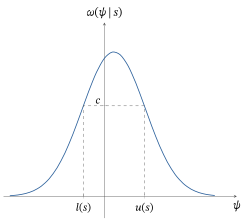
É claro que \(C(s)\) contém a moda sempre que \(c \le \max_\psi \omega(\psi \,|\, s)\). Podemos tomar o comprimento de um intervalo HPD como medida da precisão da moda de \(\omega(\cdot \,|\, s)\) como estimador de \(\psi(\theta)\). O comprimento de um intervalo de credibilidade 0,95 para \(\psi\) servirá ao mesmo propósito que a margem de erro nos intervalos de confiança.
Considere agora algumas aplicações do conceito de intervalo de credibilidade.
Suponha que \((x_1, \ldots, x_n)\) é uma amostra de uma distribuição \(N(\mu, \sigma_0^2)\), em que \(\mu \in R^1\) é desconhecido e \(\sigma_0^2\) é conhecido, e que tomamos como distribuição a priori de \(\mu\) a \(N(\mu_0, \tau_0^2)\). No Exemplo 7.1.2, mostramos que a distribuição a posteriori de \(\mu\) é a distribuição \[ N\left(\left(\frac{1}{\tau_0^2} + \frac{n}{\sigma_0^2}\right)^{-1} \left(\frac{\mu_0}{\tau_0^2} + \frac{n}{\sigma_0^2}\bar{x}\right), \left(\frac{1}{\tau_0^2} + \frac{n}{\sigma_0^2}\right)^{-1}\right). \] Como essa distribuição é simétrica em torno de sua moda (que é também a média) \(\hat{\mu}\), um intervalo \(\gamma\)-HPD mais curto é da forma \[ \hat{\mu} \pm \left(\frac{1}{\tau_0^2} + \frac{n}{\sigma_0^2}\right)^{-1/2} c, \] em que \(c\) é tal que \begin{align*} \gamma &= \Pi\left(\mu \in \left[\hat{\mu} \pm \left(\frac{1}{\tau_0^2} + \frac{n}{\sigma_0^2}\right)^{-1/2} c\right] \,\middle|\, x_1, \ldots, x_n\right) \\ &= \Pi\left(-c \le \left(\frac{1}{\tau_0^2} + \frac{n}{\sigma_0^2}\right)^{1/2} \left(\mu - \hat{\mu}\right) \le c \,\middle|\, x_1, \ldots, x_n\right). \end{align*} Como \[ \left(\frac{1}{\tau_0^2} + \frac{n}{\sigma_0^2}\right)^{1/2} \left(\mu - \hat{\mu}\right) \,\Big|\, x_1, \ldots, x_n \sim N(0, 1), \] temos \(\gamma = \Phi(c) - \Phi(-c)\), em que \(\Phi\) é a função de distribuição acumulada43 (fda) normal padrão. Isso implica imediatamente que \(c = z_{(1+\gamma)/2}\) e que o intervalo \(\gamma\)-HPD é dado por \[ \left(\frac{1}{\tau_0^2} + \frac{n}{\sigma_0^2}\right)^{-1} \left(\frac{\mu_0}{\tau_0^2} + \frac{n}{\sigma_0^2}\bar{x}\right) \pm \left(\frac{1}{\tau_0^2} + \frac{n}{\sigma_0^2}\right)^{-1/2} z_{(1+\gamma)/2}. \]
Note que, quando \(\tau_0^2 \to \infty\), isto é, à medida que a priori se torna cada vez mais difusa, esse intervalo converge para o intervalo \[ \bar{x} \pm \frac{\sigma_0}{\sqrt{n}} z_{(1+\gamma)/2}, \] que é também o intervalo de confiança44 \(\gamma\) deduzido no Capítulo 6 para esse problema. Assim, sob uma priori normal difusa, as abordagens bayesiana e frequentista concordam.
Suponha que \((x_1, \ldots, x_n)\) é uma amostra de uma distribuição \(N(\mu, \sigma^2)\), em que \(\mu \in R^1\) e \(\sigma \ge 0\) são desconhecidos, e que usamos a priori dada no Exemplo 7.1.4. No Exemplo 7.2.1, deduzimos que a distribuição a posteriori marginal de \(\mu\) é a mesma distribuição de \[ \mu_x + \sqrt{\frac{1}{2\alpha_0 + n}} \sqrt{\frac{2\beta_x}{n + 1/\tau_0^2}} \; T, \] em que \(T \sim t(2\alpha_0 + n)\). Como essa distribuição é simétrica em torno de sua moda \(\mu_x\), um intervalo \(\gamma\)-HPD é da forma \[ \mu_x \pm \sqrt{\frac{1}{2\alpha_0 + n}} \sqrt{\frac{2\beta_x}{n + 1/\tau_0^2}} \, c, \] em que \(c\) satisfaz45 \begin{align*} \gamma &= \Pi\left(\mu \in \left[\mu_x \pm \sqrt{\frac{1}{2\alpha_0 + n}} \sqrt{\frac{2\beta_x}{n + 1/\tau_0^2}} \, c\right] \,\middle|\, x_1, \ldots, x_n\right) \\ &= \Pi\left(-c \le \left(\frac{2\beta_x}{(2\alpha_0 + n)\left(n + 1/\tau_0^2\right)}\right)^{-1/2} \left(\mu - \hat{\mu}\right) \le c \,\middle|\, x_1, \ldots, x_n\right) \\ &= G_{2\alpha_0 + n}(c) - G_{2\alpha_0 + n}(-c). \end{align*} Aqui, \(G_{2\alpha_0 + n}\) é a fda da \(t(2\alpha_0 + n)\) e, portanto, \(c = t_{(1+\gamma)/2}(2\alpha_0 + n)\).
Usando (7.1.9), (7.1.10) e (7.1.11), temos que esse intervalo converge para o intervalo46 \[ \bar{x} \pm \sqrt{\frac{n - 1}{(2\alpha_0 + n)}} \frac{s}{\sqrt{n}} \, t(n + 2\alpha_0) \] quando \(\tau_0 \to \infty\) e \(\beta_0 \to 0\). Note que esse intervalo é um pouco diferente do intervalo de confiança \(\gamma\) que obtivemos para \(\mu\) no Exemplo 6.3.8, mas, quando \(\alpha_0/n\) é pequeno, eles são praticamente idênticos.
Nos exemplos que consideramos até aqui, conseguimos obter expressões em forma fechada para os intervalos HPD. Em geral, isso não acontece. Nessas situações, temos de recorrer a métodos numéricos para obter os intervalos HPD, mas não vamos nos aprofundar nesse tema aqui.
Há outros métodos de obter intervalos de credibilidade. Por exemplo, um método comum de obter um intervalo de credibilidade \(\gamma\) para \(\psi\) é tomar o intervalo \([\psi_l, \psi_r]\), em que \(\psi_l\) é um quantil \((1 - \gamma)/2\) da distribuição a posteriori de \(\psi\) e \(\psi_r\) é um quantil \(1 - (1 - \gamma)/2\) dessa distribuição. Alternativamente, poderíamos formar intervalos unilaterais. Esses intervalos de credibilidade evitam as contas mais extensas que podem ser necessárias para os intervalos HPD.
7.2.3 Teste de Hipóteses e Fatores de Bayes
Suponha agora que queremos avaliar a evidência que os dados observados trazem a respeito da hipótese \(H_0 : \psi(\theta) = \psi_0\). Parece claro como devemos fazer essa avaliação, a saber, calculando a probabilidade a posteriori \begin{equation} \Pi(\psi(\theta) = \psi_0 \,|\, s). \tag{7.2.4} \end{equation} Se ela for pequena, concluímos que temos evidência contra \(H_0\). Veremos outras justificativas para essa abordagem no Capítulo 8.
Suponha que queremos avaliar a evidência a respeito de \(\theta \in A\) ou não. Se tomarmos \(\psi = I_A\), estamos avaliando a hipótese \(H_0 : \psi(\theta) = 1\) e \[ \Pi(\psi(\theta) = 1 \,|\, s) = \Pi(A \,|\, s). \] Assim, nesse caso, simplesmente calculamos a probabilidade a posteriori de que \(\theta \in A\).
Pode haver um problema, porém, no uso de (7.2.4) para avaliar uma hipótese. Pois, quando a distribuição a priori de \(\psi\) é absolutamente contínua, então \(\Pi(\psi(\theta) = \psi_0 \,|\, s) = 0\) para quaisquer dados \(s\). Portanto, sempre encontraríamos evidência contra \(H_0\), não importa o que fosse observado, o que não faz sentido. Em geral, se o valor \(\psi_0\) recebe probabilidade a priori pequena, pode acontecer de esse valor ter também probabilidade a posteriori pequena, não importa quais dados sejam observados.
Para evitar esse problema, às vezes se usa uma abordagem alternativa para a avaliação de hipóteses. Lembre que, se \(\psi_0\) é um valor surpreendente para a distribuição a posteriori de \(\psi\), isso é evidência de que \(H_0\) é falsa. O valor \(\psi_0\) é surpreendente sempre que está numa região de baixa probabilidade da distribuição a posteriori de \(\psi\). Uma região de baixa probabilidade corresponde a uma região onde a densidade a posteriori \(\omega(\cdot \,|\, s)\) é relativamente baixa. Assim, um método possível para fazer essa avaliação é calcular o valor-p (bayesiano) \begin{equation} \Pi(\{\theta : \omega(\psi(\theta) \,|\, s) \le \omega(\psi_0 \,|\, s)\} \,|\, s). \tag{7.2.5} \end{equation} Note que, quando \(\omega(\cdot \,|\, s)\) é unimodal, (7.2.5) corresponde a calcular uma probabilidade de cauda. Se a probabilidade (7.2.5) for pequena, então \(\psi_0\) é surpreendente, pelo menos em relação às nossas crenças a posteriori. Quando decidimos rejeitar \(H_0\) sempre que o valor-p for menor que \(1 - \gamma\), essa abordagem equivale a calcular uma região HPD \(\gamma\) para \(\psi\) e rejeitar \(H_0\) sempre que \(\psi_0\) não estiver na região.
Aplicando a abordagem do valor-p a esse problema, vemos que \(\psi(\theta) = I_A(\theta)\) tem distribuição a posteriori \(\text{Bernoulli}(\Pi(A \,|\, s))\). Portanto, \(\omega(\cdot \,|\, s)\) é definida por \(\omega(0 \,|\, s)\) \({}= 1 - \Pi(A \,|\, s)\) \({}= \Pi(A^c \,|\, s)\) e \(\omega(1 \,|\, s) = \Pi(A \,|\, s)\).
Agora \(\psi_0 = 1\), então \begin{align*} \{\theta : \omega(\psi(\theta) \,|\, s) \le \omega(1 \,|\, s)\} &= \{\theta : \omega(I_A(\theta) \,|\, s) \le \Pi(A \,|\, s)\} \\ &= \begin{cases} \negrito{\Omega} & \Pi(A \,|\, s) \ge \Pi(A^c \,|\, s) \\ A & \Pi(A \,|\, s) < \Pi(A^c \,|\, s). \end{cases} \end{align*} Portanto, (7.2.5) fica \[ \Pi(\{\theta : \omega(\psi(\theta) \,|\, s) \le \omega(1 \,|\, s)\} \,|\, s) = \begin{cases} 1 & \Pi(A \,|\, s) \ge \Pi(A^c \,|\, s) \\ \Pi(A \,|\, s) & \Pi(A \,|\, s) < \Pi(A^c \,|\, s), \end{cases} \] de modo que, de novo, temos evidência contra \(H_0\) sempre que \(\Pi(A \,|\, s)\) é pequena.
Vemos pelos Exemplos 7.2.9 e 7.2.10 que calcular o valor-p (7.2.5) equivale essencialmente a usar (7.2.4) sempre que o parâmetro marginal \(\psi\) assume apenas dois valores. Isso não acontece, porém, quando \(\psi\) assume mais de dois valores, e o estatístico tem de decidir qual método é mais apropriado nesse contexto.
Como já observado, quando a distribuição a priori de \(\psi\) é absolutamente contínua, (7.2.4) é sempre 0, não importa quais dados sejam observados. Como o exemplo a seguir ilustra, também há uma dificuldade no uso de (7.2.5) nessa situação.
Suponha que a distribuição a posteriori de \(\theta\) seja \(\text{Beta}(2, 1)\), isto é, \(\omega(\theta \,|\, s) = 2\theta\) quando \(0 \le \theta \le 1\), e que queremos avaliar \(H_0 : \theta = 3/4\). Então \(\omega(\theta \,|\, s) \le \omega(3/4 \,|\, s)\) se e somente se \(\theta \le 3/4\), e (7.2.5) é dado por \[ \int_0^{3/4} 2\theta \, d\theta = 9/16. \]
Por outro lado, suponha que fazemos uma transformação 1–1 para \(\rho = \theta^2\), de modo que a hipótese passa a ser \(H_0 : \rho = 9/16\). A distribuição a posteriori de \(\rho\) é \(\text{Beta}(1, 1)\). Como a densidade a posteriori de \(\rho\) é constante, a densidade a posteriori em todo valor possível é menor ou igual à densidade a posteriori calculada em \(9/16\). Portanto, (7.2.5) é igual a 1, e nunca encontraríamos evidência contra \(H_0\) usando essa parametrização.
Esse exemplo mostra que nossa avaliação de \(H_0\) via (7.2.5) depende da parametrização usada, o que não parece apropriado.
A dificuldade no uso de (7.2.5), demonstrada no Exemplo 7.2.11, só ocorre com distribuições a posteriori contínuas. Assim, para evitar esse problema, recomenda-se muitas vezes que a hipótese a ser testada receba sempre uma probabilidade a priori positiva. Como demonstrado no Exemplo 7.2.10, a abordagem via (7.2.5) passa então a ser essencialmente equivalente a usar (7.2.4) para avaliar \(H_0\).
Em problemas em que parece natural usar distribuições a priori contínuas, isso se consegue tomando a distribuição a priori \(\Pi\) como uma mistura de distribuições de probabilidade, como discutido na Seção 2.5.4, a saber, a distribuição a priori é igual a \[ \Pi = p\Pi_1 + (1 - p)\,\Pi_2, \] onde \(\Pi_1(\psi(\theta) = \psi_0) = 1\) e \(\Pi_2(\psi(\theta) = \psi_0) = 0\), isto é, \(\Pi_1\) é degenerada em \(\psi_0\) e \(\Pi_2\) é contínua em \(\psi_0\). Então \[ \Pi(\psi(\theta) = \psi_0) = p\Pi_1(\psi(\theta) = \psi_0) + (1 - p)\,\Pi_2(\psi(\theta) = \psi_0) = p > 0 \] é a probabilidade a priori de que \(H_0\) seja verdadeira.
A preditiva a priori para os dados \(s\) é então dada por \[ m(s) = pm_1(s) + (1 - p)m_2(s), \] onde \(m_i\) é a preditiva a priori obtida com a distribuição a priori \(\Pi_i\) (ver Problema 7.2.34). Isso implica (ver Problema 7.2.34) que a medida de probabilidade a posteriori para \(\theta\), quando se usa a distribuição a priori \(\Pi\), é \begin{align} &\Pi(A \,|\, s) \notag \\ &= \frac{pm_1(s)}{pm_1(s) + (1 - p)m_2(s)}\,\Pi_1(A \,|\, s) + \frac{(1 - p)\,m_2(s)}{pm_1(s) + (1 - p)m_2(s)}\,\Pi_2(A \,|\, s) \tag{7.2.6} \end{align} onde \(\Pi_i(\cdot \,|\, s)\) é a medida a posteriori obtida com a distribuição a priori \(\Pi_i\). Note que isso é uma mistura das medidas de probabilidade a posteriori \(\Pi_1(\cdot \,|\, s)\) e \(\Pi_2(\cdot \,|\, s)\), com probabilidades de mistura \[ \frac{pm_1(s)}{pm_1(s) + (1 - p)m_2(s)} \quad\text{e}\quad \frac{(1 - p)\,m_2(s)}{pm_1(s) + (1 - p)m_2(s)}. \]
Agora, \(\Pi_1(\cdot \,|\, s)\) é degenerada em \(\psi_0\) (se a distribuição a priori é degenerada num ponto, a distribuição a posteriori também tem de ser degenerada nesse ponto) e \(\Pi_2(\cdot \,|\, s)\) é contínua em \(\psi_0\). Portanto, \begin{equation} \Pi(\psi(\theta) = \psi_0 \,|\, s) = \frac{pm_1(s)}{pm_1(s) + (1 - p)m_2(s)}, \tag{7.2.7} \end{equation} e usamos essa probabilidade para avaliar \(H_0\).
O exemplo a seguir ilustra essa abordagem.
Suponha que \((x_1, \ldots, x_n)\) seja uma amostra de uma distribuição \(N(\mu, \sigma_0^2)\), em que \(\mu \in R^1\) é desconhecido e \(\sigma_0^2\) é conhecido, e que queremos avaliar a hipótese \(H_0 : \mu = \mu_0\). Como no Exemplo 7.1.2, vamos tomar como distribuição a priori de \(\mu\) uma distribuição \(N(\mu_0, \tau_0^2)\). Como estamos avaliando se \(\mu = \mu_0\) ou não, parece razoável pôr a moda da distribuição a priori no valor da hipótese. A escolha do hiperparâmetro47 \(\tau_0^2\) reflete então o grau da nossa crença a priori de que \(H_0\) é verdadeira. Denotamos essa medida de probabilidade a priori por \(\Pi_2\), isto é, \(\Pi_2\) é a medida de probabilidade \(N(\mu_0, \sigma_0^2)\).48
Se usarmos \(\Pi_2\) como distribuição a priori, então, como mostrado no Exemplo 7.1.2, a distribuição a posteriori de \(\mu\) é absolutamente contínua. Isso implica que (7.2.4) é 0. Assim, seguindo a discussão anterior, consideramos em vez disso a distribuição a priori \(\Pi = p\Pi_1 + (1 - p)\Pi_2\), obtida misturando \(\Pi_2\) com uma medida de probabilidade \(\Pi_1\) degenerada em \(\mu_0\). Então \(\Pi_1(\{\mu_0\}) = 1\) e, assim, \(\Pi(\{\mu_0\}) = p\). Como mostrado no Exemplo 7.1.2, sob \(\Pi_2\) a distribuição a posteriori de \(\mu\) é \[ N\left( \left( \frac{1}{\tau_0^2} + \frac{n}{\sigma_0^2} \right)^{-1} \left( \frac{\mu_0}{\tau_0^2} + \frac{n}{\sigma_0^2}\,\bar{x} \right), \left( \frac{1}{\tau_0^2} + \frac{n}{\sigma_0^2} \right)^{-1} \right), \] enquanto a distribuição a posteriori sob \(\Pi_1\) é a distribuição degenerada em \(\mu_0\). Precisamos agora calcular (7.2.7), e faremos isso no Exemplo 7.2.13.
Fatores de Bayes
Os fatores de Bayes formam outro método de avaliação de hipóteses e são definidos em termos de chances.
Obviamente, valores grandes da chance a favor de \(A\) indicam uma crença forte de que \(A\) é verdadeiro. As chances são outra maneira de apresentar probabilidades, conveniente em certos contextos, por exemplo, nas corridas de cavalos. Os fatores de Bayes comparam a chance a posteriori51 com a chance a priori52.
O fator de Bayes53 \(BF_{H_0}\) a favor da hipótese \(H_0 : \psi(\theta) = \psi_0\) é definido, sempre que a probabilidade a priori de \(H_0\) não for 0 nem 1, como a razão entre a chance a posteriori a favor de \(H_0\) e a chance a priori a favor de \(H_0\), ou seja, \begin{equation} BF_{H_0} = \left\{ \frac{\Pi(\psi(\theta) = \psi_0 \,|\, s)}{1 - \Pi(\psi(\theta) = \psi_0 \,|\, s)} \right\} \bigg/ \left\{ \frac{\Pi(\psi(\theta) = \psi_0)}{1 - \Pi(\psi(\theta) = \psi_0)} \right\}. \tag{7.2.8} \end{equation}
Assim, o fator de Bayes a favor de \(H_0\) mede o quanto os dados mudaram a chance a favor da hipótese. Se \(BF_{H_0}\) é pequeno, os dados fornecem evidência contra \(H_0\), e evidência a favor de \(H_0\) quando \(BF_{H_0}\) é grande.
Há uma relação entre a probabilidade a posteriori de \(H_0\) ser verdadeira e \(BF_{H_0}\). De (7.2.8), obtemos \begin{equation} \Pi(\psi(\theta) = \psi_0 \,|\, s) = \frac{rBF_{H_0}}{1 + rBF_{H_0}}, \tag{7.2.9} \end{equation} onde \[ r = \frac{\Pi(\psi(\theta) = \psi_0)}{1 - \Pi(\psi(\theta) = \psi_0)} \] é a chance a priori a favor de \(H_0\). Assim, quando \(BF_{H_0}\) é pequeno, \(\Pi(\psi(\theta) = \psi_0 \,|\, s)\) é pequena, e vice-versa.
Uma razão para usar fatores de Bayes na avaliação de hipóteses é o resultado a seguir, que estabelece uma ligação com as razões de verossimilhança.
Se a distribuição a priori \(\Pi\) é uma mistura \(\Pi = p\Pi_1 + (1 - p)\,\Pi_2\), em que \(\Pi_1(A) = 1\), \(\Pi_2(A^C) = 1\), e queremos avaliar a hipótese \(H_0 : \theta \in A\), então \[ BF_{H_0} = m_1(s)/m_2(s), \] onde \(m_i\) é a preditiva a priori dos dados sob \(\Pi_i\).
Lembre que, se uma distribuição a priori concentra toda a sua probabilidade num conjunto, então a distribuição a posteriori também concentra toda a sua probabilidade nesse conjunto. Então, usando (7.2.6), temos \[ BF_{H_0} = \frac{\Pi(A \,|\, s)}{1 - \Pi(A \,|\, s)} \bigg/ \frac{\Pi(A)}{1 - \Pi(A)} = \frac{pm_1(s)}{(1 - p)\,m_2(s)} \bigg/ \frac{p}{1 - p} = \frac{m_1(s)}{m_2(s)}. \qedhere \]
Curiosamente, o Teorema 7.2.1 indica que o fator de Bayes não depende de \(p\). Observamos, porém, que não é imediatamente claro como interpretar o valor de \(BF_{H_0}\). Em particular, quão grande \(BF_{H_0}\) precisa ser para fornecer evidência forte a favor de \(H_0\)? Uma abordagem para esse problema é usar (7.2.9), já que ela dá a probabilidade a posteriori de \(H_0\), que é diretamente interpretável. Assim, podemos calibrar o fator de Bayes. Note, porém, que isso exige especificar \(p\).
Calculamos agora a preditiva a priori sob \(\Pi_2\). Temos que a densidade conjunta de \((x_1, \ldots, x_n)\) dado \(\mu\) é igual a \[ (2\pi\sigma_0^2)^{-n/2} \exp\left( -\frac{n - 1}{2\sigma_0^2}\, s^2 \right) \exp\left( -\frac{n}{2\sigma_0^2}\, (\bar{x} - \mu)^2 \right) \] e, assim, \begin{align*} &m_2(x_1, \ldots, x_n) \\ &= \int_{-\infty}^{\infty} \left\{ \begin{array}{c} (2\pi\sigma_0^2)^{-n/2} \exp\left( -\frac{n - 1}{2\sigma_0^2}\, s^2 \right) \exp\left( -\frac{n}{2\sigma_0^2}\, (\bar{x} - \mu)^2 \right) \\[4pt] \times\, (2\pi\tau_0^2)^{-1/2} \exp\left( -\frac{1}{2\tau_0^2}\, (\mu - \mu_0)^2 \right) \end{array} \right\} d\mu \\ &= (2\pi\sigma_0^2)^{-n/2} \exp\left( -\frac{n - 1}{2\sigma_0^2}\, s^2 \right) \\ &\qquad \times \tau_0^{-1} (2\pi)^{-1/2} \int_{-\infty}^{\infty} \exp\left( -\frac{n}{2\sigma_0^2}\, (\bar{x} - \mu)^2 \right) \exp\left( -\frac{1}{2\tau_0^2}\, (\mu - \mu_0)^2 \right) d\mu. \end{align*} Então, usando (7.1.2), temos \begin{align} &\tau_0^{-1} (2\pi)^{-1/2} \int_{-\infty}^{\infty} \exp\left( -\frac{n}{2\sigma_0^2}\, (\bar{x} - \mu)^2 \right) \exp\left( -\frac{1}{2\tau_0^2}\, (\mu - \mu_0)^2 \right) d\mu \notag \\ &= \tau_0^{-1} \exp\left( \frac{1}{2} \left( \frac{1}{\tau_0^2} + \frac{n}{\sigma_0^2} \right)^{-1} \left( \frac{\mu_0}{\tau_0^2} + \frac{n}{\sigma_0^2}\,\bar{x} \right)^2 \right) \notag \\ &\qquad \times \exp\left( -\frac{1}{2} \left( \frac{\mu_0^2}{\tau_0^2} + \frac{n\bar{x}^2}{\sigma_0^2} \right) \right) \left( \frac{n}{\sigma_0^2} + \frac{1}{\tau_0^2} \right)^{-1/2}. \tag{7.2.10} \end{align} Portanto, \begin{align*} &m_2(x_1, \ldots, x_n) \\ &= (2\pi\sigma_0^2)^{-n/2} \exp\left( -\frac{n - 1}{2\sigma_0^2}\, s^2 \right) \tau_0^{-1} \exp\left( \frac{1}{2} \left( \frac{1}{\tau_0^2} + \frac{n}{\sigma_0^2} \right)^{-1} \left( \frac{\mu_0}{\tau_0^2} + \frac{n}{\sigma_0^2}\,\bar{x} \right)^2 \right) \\ &\qquad \times \exp\left( -\frac{1}{2} \left( \frac{\mu_0^2}{\tau_0^2} + \frac{n\bar{x}^2}{\sigma_0^2} \right) \right) \left( \frac{n}{\sigma_0^2} + \frac{1}{\tau_0^2} \right)^{-1/2}. \end{align*}
Como \(\Pi_1\) é degenerada em \(\mu_0\), é imediato que a preditiva a priori sob \(\Pi_1\) é dada por \[ m_1(x_1, \ldots, x_n) = (2\pi\sigma_0^2)^{-n/2} \exp\left( -\frac{n - 1}{2\sigma_0^2}\, s^2 \right) \exp\left( -\frac{n}{2\sigma_0^2}\, (\bar{x} - \mu_0)^2 \right). \] Portanto, \(BF_{H_0}\) é igual a \[ \exp\left( -\frac{n}{2\sigma_0^2}\, (\bar{x} - \mu_0)^2 \right) \] dividido por (7.2.10).
Por exemplo, suponha que \(\mu_0 = 0\), \(\tau_0^2 = 2\), \(\sigma_0^2 = 1\), \(n = 10\) e \(\bar{x} = 0{,}2\). Então \[ \exp\left( -\frac{n}{2\sigma_0^2}\, (\bar{x} - \mu_0)^2 \right) = \exp\left( -\frac{10}{2}\, (0{,}2)^2 \right) = 0{,}81873, \] enquanto (7.2.10) é igual a \begin{align*} &\frac{1}{\sqrt{2}} \exp\left( \frac{1}{2} \left( \frac{1}{2} + 10 \right)^{-1} (10\,(0{,}2))^2 \right) \exp\left( -\frac{10\,(0{,}2)^2}{2} \right) \left( 10 + \frac{1}{2} \right)^{-1/2} \\ &= 0{,}21615. \end{align*} Assim, \[ BF_{H_0} = \frac{0{,}81873}{0{,}21615} = 3{,}7878, \] o que dá alguma evidência a favor de \(H_0 : \mu = \mu_0\). Se supusermos que \(p = 1/2\), de modo que somos completamente indiferentes entre \(H_0\) ser verdadeira ou não, então \(r = 1\), e (7.2.9) dá \[ \Pi(\mu = 0 \,|\, x_1, \ldots, x_n) = \frac{3{,}7878}{1 + 3{,}7878} = 0{,}79114, \] o que indica um grau alto de apoio a \(H_0\).
7.2.4 Predição
Problemas de predição54 surgem quando temos um valor de resposta não observado \(t\) num espaço amostral \(T\) e uma resposta observada \(s \in S\). Além disso, temos o modelo estatístico \(\{P_\theta : \theta \in \negrito{\Omega}\}\) para \(s\) e o modelo estatístico condicional \(\{Q_\theta(\cdot \,|\, s) : \theta \in \negrito{\Omega}\}\) para \(t\) dado \(s\). Supomos que os dois modelos têm o mesmo valor verdadeiro de \(\theta \in \negrito{\Omega}\). O objetivo é construir uma predição \(\tilde{t}(s) \in T\) do valor não observado \(t\), com base nos dados observados \(s\). O valor de \(t\) pode ser desconhecido simplesmente porque representa um resultado futuro.
Se denotarmos a densidade condicional55 ou a função de probabilidade condicional56 (a que for pertinente) de \(t\) por \(q_\theta(\cdot \,|\, s)\), a distribuição conjunta de \((\theta, s, t)\) é dada por \[ q_\theta(t \,|\, s) f_\theta(s) \pi(\theta). \] Então, depois de observar \(s\) (suponha aqui que as distribuições de \(\theta\) e de \(t\) são absolutamente contínuas; se não forem, trocamos as integrais por somas), a densidade condicional de \((t, \theta)\), dado \(s\), é \[ \frac{q_\theta(t \,|\, s) f_\theta(s) \pi(\theta)} {\int_{\negrito{\Omega}} \int_T q_\theta(t \,|\, s) f_\theta(s) \pi(\theta) \, dt \, d\theta} = \frac{q_\theta(t \,|\, s) f_\theta(s) \pi(\theta)} {\int_{\negrito{\Omega}} f_\theta(s) \pi(\theta) \, d\theta} = \frac{q_\theta(t \,|\, s) f_\theta(s) \pi(\theta)}{m(s)}. \] Então, a distribuição a posteriori marginal de \(t\), conhecida como a preditiva a posteriori57 de \(t\), é \[ q(t \,|\, s) = \int_{\negrito{\Omega}} \frac{q_\theta(t \,|\, s) f_\theta(s) \pi(\theta)}{m(s)} \, d\theta = \int_{\negrito{\Omega}} q_\theta(t \,|\, s) \pi(\theta \,|\, s) \, d\theta. \] Note que a preditiva a posteriori de \(t\) é obtida tomando a média da densidade condicional de \(t\), dado \((\theta, s)\), em relação à distribuição a posteriori de \(\theta\).
Agora que obtivemos a distribuição preditiva a posteriori de \(t\), podemos usá-la para escolher uma estimativa do valor não observado. De novo, poderíamos escolher como nossa predição a moda a posteriori \(\hat{t}\) ou a esperança a posteriori \(E(t \,|\, x) = \int_T t\, q(t \,|\, s) \, dt\), a que for considerada mais pertinente.58
Suponha que queremos predizer o próximo resultado independente \(X_{n+1}\), tendo observado uma amostra \((x_1, \ldots, x_n)\) da \(\text{Bernoulli}(\theta)\) e \(\theta \sim \text{Beta}(\alpha, \beta)\). Aqui, a observação futura é independente dos dados observados. A função de probabilidade preditiva a posteriori de \(X_{n+1}\) em \(t\) é então dada por \begin{align*} &q(t \,|\, x_1, \ldots, x_n) \\ &= \int_0^1 \theta^t (1 - \theta)^{1 - t} \frac{\Gamma(n + \alpha + \beta)}{\Gamma(n\bar{x} + \alpha)\Gamma(n(1 - \bar{x}) + \beta)} \theta^{n\bar{x} + \alpha - 1} (1 - \theta)^{n(1 - \bar{x}) + \beta - 1} \, d\theta \\ &= \frac{\Gamma(n + \alpha + \beta)}{\Gamma(n\bar{x} + \alpha)\Gamma(n(1 - \bar{x}) + \beta)} \int_0^1 \theta^{n\bar{x} + \alpha + t - 1} (1 - \theta)^{n(1 - \bar{x}) + \beta + (1 - t) - 1} \, d\theta \\ &= \frac{\Gamma(n + \alpha + \beta)}{\Gamma(n\bar{x} + \alpha)\Gamma(n(1 - \bar{x}) + \beta)} \, \frac{\Gamma(n\bar{x} + \alpha + t)\Gamma(n(1 - \bar{x}) + \beta + 1 - t)}{\Gamma(n + \alpha + \beta + 1)} \\ &= \begin{cases} \dfrac{n\bar{x} + \alpha}{n + \alpha + \beta} & t = 1 \\[8pt] \dfrac{n(1 - \bar{x}) + \beta}{n + \alpha + \beta} & t = 0, \end{cases} \end{align*} que é a função de probabilidade de uma distribuição \(\text{Bernoulli}((n\bar{x} + \alpha)/(n + \alpha + \beta))\).
Usar a moda a posteriori como preditor59, isto é, maximizar \(q(t \,|\, x_1, \ldots, x_n)\) em \(t\), leva à predição \[ \hat{t} = \begin{cases} 1 & \text{se } \dfrac{n\bar{x} + \alpha}{n + \alpha + \beta} \ge \dfrac{n(1 - \bar{x}) + \beta}{n + \alpha + \beta}, \\[8pt] 0 & \text{caso contrário.} \end{cases} \] O preditor esperança a posteriori é dado por \[ E(t \,|\, x_1, \ldots, x_n) = \frac{n\bar{x} + \alpha}{n + \alpha + \beta}. \] Note que a moda a posteriori assume um valor em \(\{0, 1\}\), e o \(X_{n+1}\) futuro também estará nesse conjunto. A média a posteriori pode ser qualquer valor em \([0, 1]\).
Suponha que \((x_1, \ldots, x_n)\) seja uma amostra de uma distribuição \(N(\mu, \sigma_0^2)\), em que \(\mu \in R^1\) é desconhecido e \(\sigma_0^2\) é conhecido, e que usamos a distribuição a priori dada no Exemplo 7.1.2. Suponha que queremos predizer uma observação futura \(X_{n+1}\), mas que desta vez \(X_{n+1}\) vem da distribuição \begin{equation} N\left( \bar{x}, \left( \frac{1}{\tau_0^2} + \frac{n}{\sigma_0^2} \right)^{-1} \sigma_0^2 \right). \tag{7.2.11} \end{equation} Assim, nesse caso, a observação futura não é independente dos dados observados, mas é independente do parâmetro. Uma conta simples (ver Exercício 7.2.9) mostra que (7.2.11) é a distribuição preditiva a posteriori de \(t\), e assim prediríamos \(t\) por \(\bar{x}\), já que esse valor é ao mesmo tempo a moda e a média a posteriori.
Podemos também construir uma região de predição \(\gamma\), \(C(s)\), para um valor futuro \(t\) a partir do modelo \(\{q_\theta(\cdot \,|\, s) : \theta \in \negrito{\Omega}\}\). Uma região de predição \(\gamma\) para \(t\) satisfaz \(Q(C(s) \,|\, s \ge \gamma)\), onde \(Q(\cdot \,|\, s)\) é a medida preditiva a posteriori para \(t\).60 Uma abordagem para construir \(C(s)\) é aplicar o conceito de HPD a \(q(t \,|\, s)\). Ilustramos isso com vários exemplos.
Suponha que queremos uma região de predição \(\gamma\) para um valor futuro \(X_{n+1}\). No Exemplo 7.2.14, deduzimos que a distribuição preditiva a posteriori de \(X_{n+1}\) é \[ \text{Bernoulli}\left( \frac{n\bar{x} + \alpha}{n + \alpha + \beta} \right). \] Assim, uma região de predição \(\gamma\) para \(t\), obtida pelo conceito de HPD, é dada por \[ C(x_1, \ldots, x_n) = \begin{cases} \{0, 1\} & \text{se } \max\left\{ \frac{n\bar{x} + \alpha}{n + \alpha + \beta}, \frac{n(1 - \bar{x}) + \beta}{n + \alpha + \beta} \right\} \le \gamma, \\[8pt] \{1\} & \text{se } \gamma \le \max\left\{ \frac{n\bar{x} + \alpha}{n + \alpha + \beta}, \frac{n(1 - \bar{x}) + \beta}{n + \alpha + \beta} \right\} = \frac{n\bar{x} + \alpha}{n + \alpha + \beta}, \\[8pt] \{0\} & \text{se } \gamma \le \max\left\{ \frac{n\bar{x} + \alpha}{n + \alpha + \beta}, \frac{n(1 - \bar{x}) + \beta}{n + \alpha + \beta} \right\} = \frac{n(1 - \bar{x}) + \beta}{n + \alpha + \beta}. \end{cases} \] Vemos que essa região preditiva contém só a moda ou abrange todos os valores possíveis de \(X_{n+1}\). Neste último caso, não é uma inferência informativa.
Suponha que queremos um intervalo de predição \(\gamma\) para uma observação futura \(X_{n+1}\) de uma distribuição \[ N\left( \bar{x}, \left( \frac{1}{\tau_0^2} + \frac{n}{\sigma_0^2} \right)^{-1} \sigma_0^2 \right). \] Como essa é também a distribuição preditiva a posteriori de \(X_{n+1}\) e é simétrica em torno de \(\bar{x}\), um intervalo de predição \(\gamma\) para \(X_{n+1}\), obtido pelo conceito de HPD, é dado por \[ \bar{x} \pm \left( \frac{1}{\tau_0^2} + \frac{n}{\sigma_0^2} \right)^{-1/2} \sigma_0 \, z_{(1+\gamma)/2}. \]
Resumo da Seção 7.2
- Com base na distribuição a posteriori de um parâmetro, podemos obter estimativas do parâmetro (modas ou médias a posteriori), construir intervalos de credibilidade para o parâmetro (intervalos HPD) e avaliar hipóteses sobre o parâmetro (probabilidade a posteriori da hipótese, valores-p bayesianos, fatores de Bayes).
- Um novo tipo de inferência foi discutido nesta seção, a saber, os problemas de predição, em que nos interessa predizer um valor não observado a partir de um modelo amostral.
Exercícios
7.2.1 Para o modelo discutido no Exemplo 7.1.1, deduza a média a posteriori de \(\psi = \theta^m\), em que \(m > 0\).
7.2.2 Para o modelo discutido no Exemplo 7.1.2, determine a distribuição a posteriori do terceiro quartil \(\psi = \mu + \sigma_0 z_{0{,}75}\). Determine a moda a posteriori e a esperança a posteriori de \(\psi\).
7.2.3 No Exemplo 7.2.1, determine a esperança a posteriori e a moda de \(1/\sigma^2\).
7.2.4 No Exemplo 7.2.1, determine a esperança a posteriori e a moda de \(\sigma^2\). (Sugestão: você vai precisar da densidade a posteriori de \(\sigma^2\) para determinar a moda.)
7.2.5 Faça as contas para verificar a moda a posteriori e a esperança a posteriori de \(\theta_1\) no Exemplo 7.2.4.
7.2.6 Mostre que a variância do \(\theta\) no Exemplo 7.2.2 é como dada no Exemplo 7.2.6. Prove que ela tende a 0 quando \(n \to \infty\).
7.2.7 Mostre que a variância de \(\theta_1\) no Exemplo 7.2.4 é como dada no Exemplo 7.2.6. Prove que ela tende a 0 quando \(n \to \infty\).
7.2.8 No Exemplo 7.2.14, qual dos dois preditores obtidos ali você acha mais sensato? Por quê?
7.2.9 No Exemplo 7.2.15, prove que a distribuição preditiva a posteriori de \(X_{n+1}\) é a enunciada. (Sugestão: escreva a densidade da distribuição preditiva a posteriori como uma esperança.)
7.2.10 Suponha que \((x_1, \ldots, x_n)\) seja uma amostra da distribuição \(\text{Exponencial}(\lambda)\), em que \(\lambda > 0\) é desconhecido e \(\lambda \sim \text{Gama}(\alpha_0, \beta_0)\). Determine a moda da distribuição a posteriori de \(\lambda\). Determine também a esperança a posteriori e a variância a posteriori de \(\lambda\).
7.2.11 Suponha que \((x_1, \ldots, x_n)\) seja uma amostra da distribuição \(\text{Exponencial}(\lambda)\), em que \(\lambda > 0\) é desconhecido e \(\lambda \sim \text{Gama}(\alpha_0, \beta_0)\). Determine a moda da distribuição a posteriori de uma observação futura independente \(X_{n+1}\). Determine também a esperança a posteriori de \(X_{n+1}\) e a variância a posteriori de \(X_{n+1}\). (Sugestão: Problemas 3.2.16 e 3.3.20.)
7.2.12 Suponha que, numa população de estudantes de uma disciplina com muitos inscritos, a nota, de 0 a 100, numa prova final tenha distribuição aproximadamente \(N(\mu, 9)\). O professor põe a distribuição a priori \(\mu \sim N(65, 1)\) no parâmetro desconhecido. Obtém-se a amostra de 10 notas dada abaixo.
| 46 | 68 | 34 | 86 | 75 | 56 | 77 | 73 | 53 | 64 |
|---|
(a) Determine a moda a posteriori e um intervalo de credibilidade 0,95 para \(\mu\). O que esse intervalo diz sobre a precisão da estimativa?(b) Use o intervalo de credibilidade 0,95 para \(\mu\) para testar a hipótese \(H_0 : \mu = 65\).(c) Suponha que atribuímos probabilidade a priori 0,5 a \(\mu = 65\). Usando a distribuição a priori de mistura \(\Pi = 0{,}5\Pi_1 + 0{,}5\Pi_2\), em que \(\Pi_1\) é degenerada em \(\mu = 65\) e \(\Pi_2\) é a distribuição \(N(65, 1)\), calcule a probabilidade a posteriori da hipótese nula61.(d) Calcule o fator de Bayes a favor de \(H_0 : \mu = 65\) quando se usa a distribuição a priori de mistura.
7.2.13 Um fabricante acredita que uma máquina produz hastes com comprimentos, em centímetros, com distribuição \(N(\mu_0, \sigma^2)\), em que \(\mu_0\) é conhecido e \(\sigma^2 > 0\) é desconhecido, e que a distribuição a priori \(1/\sigma^2 \sim \text{Gama}(\alpha_0, \beta_0)\) é apropriada. (a) Determine a distribuição a posteriori de \(\sigma^2\) com base numa amostra \((x_1, \ldots, x_n)\).(b) Determine a média a posteriori de \(\sigma^2\).(c) Indique como você avaliaria a hipótese \(H_0 : \sigma^2 \le \sigma_0^2\).
7.2.14 Considere o modelo amostral e a distribuição a priori do Exercício 7.1.1. (a) Suponha que queremos estimar \(\theta\) tendo observado \(s = 1\). Determine a moda a posteriori e a média a posteriori. Qual você preferiria nessa situação? Explique por quê.(b) Determine uma região HPD 0,8 para \(\theta\) tendo observado \(s = 1\).(c) Suponha que, em vez disso, o interesse estivesse em \(\psi(\theta) = I_{\{1, 2\}}(\theta)\). Identifique a distribuição a priori de \(\psi\). Identifique a distribuição a posteriori de \(\psi\) tendo observado \(s = 1\). Determine uma região HPD 0,5 para \(\psi\).
7.2.15 Para um evento \(A\), temos que \(P(A^c) = 1 - P(A)\). (a) Qual é a relação entre a chance a favor de \(A\) e a chance a favor de \(A^c\)?(b) Quando \(A\) é um subconjunto do espaço paramétrico, qual é a relação entre o fator de Bayes a favor de \(A\) e o fator de Bayes a favor de \(A^c\)?
7.2.16 Suponha que lhe digam que a chance a favor de um subconjunto \(A\) é de 3 para 1. Qual é a probabilidade de \(A\)? Se o fator de Bayes a favor de \(A\) é 10 e a probabilidade a priori de \(A\) é 1/2, determine a probabilidade a posteriori de \(A\).
7.2.17 Suponha que foram obtidos os dados \(s\). Dois estatísticos analisam esses dados usando o mesmo modelo amostral, mas distribuições a priori diferentes, e lhes pedem que avaliem uma hipótese \(H_0\). Os dois estatísticos relatam um fator de Bayes a favor de \(H_0\) igual a 100. O estatístico I atribuiu probabilidade a priori 1/2 a \(H_0\), enquanto o estatístico II atribuiu probabilidade a priori 1/4 a \(H_0\). Qual estatístico tem o maior grau de crença a posteriori de que \(H_0\) é verdadeira?
7.2.18 Dizem-lhe que um intervalo de credibilidade 0,95, determinado pelo critério HPD, para uma quantidade \(\psi(\theta)\) é dado por \((-3{,}3; 2{,}6)\). Se lhe pedirem para avaliar a hipótese \(H_0 : \psi(\theta) = 0\), o que você pode dizer sobre o valor-p bayesiano? Explique sua resposta.
7.2.19 Qual é o intervalo de valores possíveis de um fator de Bayes a favor de \(A \subset \negrito{\Omega}\)? Em que condições um fator de Bayes a favor de \(A \subset \negrito{\Omega}\) assume seu menor valor?
Problemas
7.2.20 Suponha que \((x_1, \ldots, x_n)\) seja uma amostra da distribuição \(\text{Uniforme}[0, \theta]\), em que \(\theta > 0\) é desconhecido, e que temos \(\theta \sim \text{Gama}(\alpha_0, \beta_0)\). Determine a moda da distribuição a posteriori de \(\theta\). (Sugestão: a densidade a posteriori não é diferenciável em \(\theta = x_{(n)}\).)
7.2.21 Suponha que \((x_1, \ldots, x_n)\) seja uma amostra da distribuição \(\text{Uniforme}[0, \theta]\), em que \(\theta \in (0, 1)\) é desconhecido, e que temos \(\theta \sim \text{Uniforme}[0, 1]\). Determine a forma do intervalo de credibilidade \(\gamma\) para \(\theta\) com base no conceito de HPD.
7.2.22 No Exemplo 7.2.1, escreva por extenso a integral dada em (7.2.2).
7.2.23 (MV) No Exemplo 7.2.1, escreva por extenso a integral que você precisaria calcular se quisesse obter a densidade a posteriori do terceiro quartil da distribuição populacional, isto é, \(\psi = \mu + \sigma z_{0{,}75}\).
7.2.24 Considere o modelo normal de locação discutido no Exemplo 7.1.2 e o coeficiente de variação populacional \(\psi = \sigma_0/\mu\). (a) Mostre que a esperança a posteriori de \(\psi\) não existe. (Sugestão: mostre que podemos escrever a esperança a posteriori como \[ \int_{-\infty}^{\infty} \frac{\sigma_0}{a + bz} \frac{1}{\sqrt{2\pi}} e^{-z^2/2} \, dz, \] em que \(b > 0\), e mostre que essa integral não existe considerando o comportamento do integrando em \(z = -a/b\).)(b) Determine a densidade a posteriori de \(\psi\).(c) Mostre que você pode determinar a moda a posteriori de \(\psi\) calculando a densidade a posteriori em dois pontos específicos. (Sugestão: proceda maximizando o logaritmo da densidade a posteriori pelos métodos do cálculo.)
7.2.25 (MV) Suponha que \((\theta_1, \ldots, \theta_{k-1}) \sim \text{Dirichlet}(\alpha_1, \alpha_2, \ldots, \alpha_k)\). (a) Prove que \((\theta_1, \ldots, \theta_{k-2}) \sim \text{Dirichlet}(\alpha_1, \alpha_2, \ldots, \alpha_{k-1} + \alpha_k)\). (Sugestão: na integral para eliminar \(\theta_{k-1}\) por integração, faça a transformação \(\theta_{k-1} \to \theta_{k-1}/(1 - \theta_1 - \cdots - \theta_{k-2})\).)(b) Prove que \(\theta_1 \sim \text{Beta}(\alpha_1, \alpha_2 + \cdots + \alpha_k)\). (Sugestão: use a parte (a).)(c) Suponha que \((i_1, \ldots, i_k)\) seja uma permutação62 de \((1, \ldots, k)\). Prove que \((\theta_{i_1}, \ldots, \theta_{i_{k-1}}) \sim \text{Dirichlet}(\alpha_{i_1}, \alpha_{i_2}, \ldots, \alpha_{i_k})\). (Sugestão: qual é o jacobiano dessa transformação?)(d) Prove que \(\theta_i \sim \text{Beta}(\alpha_i, \alpha_{-i})\). (Sugestão: use as partes (b) e (c).)
7.2.26 (MV) No Exemplo 7.2.4, mostre que o EMV plug-in de \(\theta_1\) é dado por \(x_1/n\), isto é, encontre o EMV de \((\theta_1, \ldots, \theta_k)\) e determine a primeira coordenada. (Sugestão: mostre que há uma única solução das equações de escore e depois use os fatos de que a log-verossimilhança63 é limitada superiormente e tende a \(-\infty\) sempre que \(\theta_i \to 0\).)
7.2.27 Compare os resultados obtidos nos Exercícios 7.2.3 e 7.2.4. O que você conclui sobre as propriedades de invariância desses procedimentos de estimação64? (Sugestão: considere o Teorema 6.2.1.)
7.2.28 No Exemplo 7.2.5, mostre que a variância a posteriori de \(\mu\) é como enunciada no Exemplo 7.2.6. (Sugestão: Problema 4.6.16.)
7.2.29 Num problema de predição, como descrito na Seção 7.2.4, deduza a forma da densidade preditiva a priori de \(t\) quando a densidade conjunta de \((\theta, s, t)\) é \(q_\theta(t \,|\, s) f_\theta(s) \pi(\theta)\) (suponha que \(s\) e \(\theta\) assumem valores reais).
7.2.30 No Exemplo 7.2.16, deduza a função de probabilidade preditiva a posteriori de \((X_{n+1}, X_{n+2})\), tendo observado \(x_1, \ldots, x_n\), quando \(X_1, \ldots, X_n, X_{n+1}, X_{n+2}\) são independentes e identicamente distribuídas65 (i.i.d.) \(\text{Bernoulli}(\theta)\).
7.2.31 No Exemplo 7.2.15, deduza a distribuição preditiva a posteriori de \(X_{n+1}\), tendo observado \(x_1, \ldots, x_n\), quando \(X_1, \ldots, X_n, X_{n+1}\) são i.i.d. \(N(\mu, \sigma_0^2)\). (Sugestão: podemos escrever \(X_{n+1} = \mu + \sigma_0 Z\), em que \(Z \sim N(0, 1)\) é independente da distribuição a posteriori de \(\mu\).)
7.2.32 No contexto do Exemplo 7.2.1, prove que a distribuição preditiva a posteriori de uma observação futura adicional \(X_{n+1}\) da distribuição populacional tem a mesma distribuição que \[ \mu_x + \sqrt{\frac{2\beta_x \left( \left( n + 1/\tau_0^2 \right)^{-1} + 1 \right)}{(2\alpha_0 + n)}}\; T, \] em que \(T \sim t(2\alpha_0 + n)\). (Sugestão: note que podemos escrever \(X_{n+1} = \mu + \sigma U\), em que \(U \sim N(0, 1)\) é independente de \(X_1, \ldots, X_n, \mu, \sigma\), e então raciocine como no Exemplo 7.2.1.)
7.2.33 No Exemplo 7.2.1, determine a forma de um intervalo de predição \(\gamma\) exato para uma observação futura adicional \(X_{n+1}\) da distribuição populacional, com base no conceito de HPD. (Sugestão: use o Problema 7.2.32.)
7.2.34 Suponha que \(\Pi_1\) e \(\Pi_2\) sejam distribuições de probabilidade discretas no espaço paramétrico \(\negrito{\Omega}\). Prove que, quando a distribuição a priori \(\Pi\) é uma mistura \(\Pi = p\Pi_1 + (1 - p)\,\Pi_2\), a preditiva a priori para os dados \(s\) é dada por \(m(s) = pm_1(s) + (1 - p)m_2(s)\), e a medida de probabilidade a posteriori é dada por (7.2.6).
7.2.35 (MV) Suponha que \(\theta = (\theta_1, \theta_2) \in R^2\) e \(h(\theta_1, \theta_2)\) \({}= (\psi(\theta), \lambda(\theta)) \in R^2\). Suponha que \(h\) satisfaz as condições necessárias e mostre (7.2.1). (Sugestão: Teorema 2.9.2.)
Desafios
7.2.36 Outra maneira de avaliar a hipótese nula \(H_0 : \psi(\theta) = \psi_0\) é calcular o valor-p \begin{equation} \Pi\left( \frac{\omega(\psi(\theta) \,|\, s)}{\omega(\psi(\theta))} \le \frac{\omega(\psi_0 \,|\, s)}{\omega(\psi_0)} \,\middle|\, s \right) \tag{7.2.12} \end{equation} em que \(\omega\) é a densidade a priori marginal ou a função de probabilidade a priori marginal de \(\psi\). Chamamos (7.2.12) de surpresa relativa66 observada de \(H_0\).
A quantidade \(\omega(\psi_0 \,|\, s)/\omega(\psi_0)\) é uma medida de quanto os dados \(s\) mudaram nossa crença a priori de que \(\psi_0\) é o valor verdadeiro de \(\psi\). Quando (7.2.12) é pequeno, \(\psi_0\) é um valor surpreendente para \(\psi\), pois isso indica que os dados aumentaram mais nossa crença em outros valores de \(\psi\). (a) Prove que (7.2.12) é invariante sob transformações 1–1 continuamente diferenciáveis de \(\psi\).(b) Mostre que um valor \(\psi_0\) que torna (7.2.12) o menor possível maximiza \(\omega(\psi_0 \,|\, s)/\omega(\psi_0)\). Chamamos esse valor de estimativa de menor surpresa relativa de \(\psi\).(c) Indique como usar (7.2.12) para formar uma região de credibilidade67 \(\gamma\), conhecida como região de surpresa relativa \(\gamma\), para \(\psi\).(d) Suponha que \(\psi\) assuma valores reais, com densidade a priori \(\omega\) e densidade a posteriori \(\omega(\cdot \,|\, s)\) ambas contínuas e positivas em \(\psi_0\). Seja \(A_\epsilon = (\psi_0 - \epsilon, \psi_0 + \epsilon)\). Mostre que \(BF_{A_\epsilon} \to \omega(\psi_0 \,|\, s)/\omega(\psi_0)\) quando \(\epsilon \downarrow 0\). Generalize isso para o caso em que \(\psi\) assume valores num subconjunto aberto de \(R^k\). Isso mostra que podemos pensar na surpresa relativa observada como uma maneira de calibrar fatores de Bayes.
7.3 Cálculos Bayesianos
Em praticamente todos os exemplos deste capítulo até agora, conseguimos obter a forma exata das distribuições a posteriori e realizar com elas várias computações importantes. Acontece com frequência, porém, que não conseguimos obter nenhuma forma conveniente para a distribuição a posteriori. Além disso, mesmo quando conseguimos obter a distribuição a posteriori, podem surgir computações que não dá para realizar de forma exata — por exemplo, lembre a discussão do Exemplo 7.2.1 que levou à integral (7.2.2). Esses cálculos envolvem avaliar somas ou integrais complicadas. Por isso, quando aplicamos a inferência bayesiana a um exemplo prático, precisamos ter à disposição métodos para aproximar essas quantidades.
A aproximação de integrais é um assunto extenso, que não podemos tratar por completo aqui.68 Vamos, no entanto, apresentar vários métodos de aproximação que surgem de modo muito natural em problemas de inferência bayesiana.
7.3.1 Normalidade Assintótica da Distribuição a Posteriori
Em muitas circunstâncias, a distribuição a posteriori de \(\theta \in R^1\) acaba sendo aproximadamente normal. Podemos então usar isso para calcular regiões de credibilidade aproximadas para o verdadeiro valor de \(\theta\), fazer avaliação de hipóteses etc. Um resultado desse tipo diz que, sob condições que não vamos descrever aqui, quando \((x_1, \ldots, x_n)\) é uma amostra de \(f_\theta\), então \[ \Pi\left( \frac{\theta - \hat{\theta}(x_1, \ldots, x_n)}{\hat{\sigma}(x_1, \ldots, x_n)} \le z \;\middle|\; x_1, \ldots, x_n \right) \to \Phi(z) \] quando \(n \to \infty\), em que \(\hat{\theta}(x_1, \ldots, x_n)\) é a moda a posteriori e \[ \hat{\sigma}^2(x_1, \ldots, x_n) = \left( - \left. \frac{\partial^2 \ln(L(\theta \,|\, x_1, \ldots, x_n)\pi(\theta))}{\partial \theta^2} \right|_{\theta = \hat{\theta}} \right)^{-1}. \] Note que esse resultado é parecido com o Teorema 6.5.3 para o EMV. Na verdade, podemos substituir \(\hat{\theta}(x_1, \ldots, x_n)\) pelo EMV e \(\hat{\sigma}^2(x_1, \ldots, x_n)\) pela informação observada (veja a Seção 6.5), e o resultado continua valendo. Quando \(\theta\) é \(k\)-dimensional, há um resultado parecido, porém mais complicado.
7.3.2 Amostragem da Distribuição a Posteriori
Em geral, há muitas coisas que queremos calcular ao implementar uma análise bayesiana. Muitas delas podem ser escritas como esperanças em relação à distribuição a posteriori de \(\theta\). Por exemplo, podemos querer calcular a probabilidade a posteriori de um subconjunto \(A \subset \negrito{\Omega}\), a saber, \[ \Pi(A \,|\, s) = E(I_A(\theta) \,|\, s). \] Mais em geral, queremos ser capazes de calcular a esperança a posteriori de uma função arbitrária \(w(\theta)\), a saber, \begin{equation} E(w(\theta) \,|\, s). \tag{7.3.1} \end{equation}
Certamente seria conveniente se pudéssemos calcular todas essas quantidades de forma exata, mas muitas vezes não conseguimos. Na verdade, não é realmente necessário avaliar (7.3.1) de forma exata. Isso porque naturalmente esperamos que qualquer inferência que façamos sobre o verdadeiro valor do parâmetro esteja sujeita a erro amostral (conjuntos de dados diferentes, de mesmo tamanho, levam a inferências diferentes). Não é necessário realizar nossas computações com um grau de precisão muito maior do que aquele que o erro amostral permite. Por exemplo, se o erro amostral só nos permite conhecer o valor de um parâmetro com margem de \(\pm 0{,}1\) unidade, então não faz sentido calcular uma estimativa com muito mais dígitos de precisão.
Diante disso, muitos dos problemas computacionais associados à implementação da inferência bayesiana ficam efetivamente resolvidos se conseguimos gerar amostras da distribuição a posteriori de \(\theta\). Pois, quando isso é possível, simplesmente geramos uma sequência i.i.d. \(\theta_1, \theta_2, \ldots, \theta_N\) da distribuição a posteriori de \(\theta\) e estimamos (7.3.1) por \[ \bar{w} = \frac{1}{N} \sum_{i=1}^{N} w(\theta_i). \] Sabemos então, pela lei forte dos grandes números69 (veja o Teorema 4.3.2), que \(\bar{w} \xrightarrow{\text{q.c.}} E(w(\theta) \,|\, x)\) quando \(N \to \infty\).70
É claro que, para qualquer \(N\) dado, o valor de \(\bar{w}\) só aproxima (7.3.1); gostaríamos de saber que escolhemos \(N\) grande o bastante para que a aproximação seja adequadamente precisa. Quando \(E(w^2(\theta) \,|\, s) < \infty\), o teorema central do limite71 (veja o Teorema 4.4.3) nos diz que \[ \frac{\bar{w} - E(w(\theta) \,|\, s)}{\sigma_w / \sqrt{N}} \xrightarrow{D} N(0, 1) \] quando \(N \to \infty\), em que \(\sigma_w^2 = \Var(w(\theta) \,|\, s)\). Em geral, não conhecemos o valor de \(\sigma_w^2\), mas podemos estimá-lo por \[ s_w^2 = \frac{1}{N - 1} \sum_{i=1}^{N} (w(\theta_i) - \bar{w})^2 \] quando \(w(\theta)\) é uma variável quantitativa, e por \(s_w^2 = \bar{w}(1 - \bar{w})\) quando \(w = I_A\) para \(A \subset \negrito{\Omega}\). Como mostrado na Seção 4.4.2, em qualquer dos casos \(s_w^2\) é uma estimativa consistente72 de \(\sigma_w^2\). Então, pelo Corolário 4.4.4, temos que \[ \frac{\bar{w} - E(w(\theta) \,|\, s)}{s_w / \sqrt{N}} \xrightarrow{D} N(0, 1) \] quando \(N \to \infty\).
Por esse resultado, sabemos que \[ \bar{w} \pm 3 \frac{s_w}{\sqrt{N}} \] é um intervalo de confiança aproximado de 100% para \(E(w(\theta) \,|\, s)\), de modo que podemos olhar para \(3 s_w / \sqrt{N}\) para decidir se \(N\) é ou não grande o bastante para a precisão exigida.
Um cuidado com essa maneira de avaliar o erro é que o próprio \(3 s_w / \sqrt{N}\) está sujeito a erro, já que \(s_w\) é uma estimativa de \(\sigma_w\), e isso pode enganar. Uma recomendação comum, então, é acompanhar o valor de \(3 s_w / \sqrt{N}\) para valores sucessivamente maiores de \(N\) e interromper a amostragem só quando estiver claro que o valor de \(3 s_w / \sqrt{N}\) é pequeno o bastante para a precisão desejada e parece estar diminuindo como deveria. Mesmo essa abordagem, porém, não dá uma cota garantida para a precisão das computações, de modo que é preciso ter cautela.
Também é importante lembrar que a aplicação desses resultados exige que \(\sigma_w^2 < \infty\). Para \(w\) limitada, isso sempre vale, pois toda variável aleatória limitada tem variância finita. Para \(w\) ilimitada73, porém, isso precisa ser verificado — e às vezes é muito difícil fazê-lo.
Consideramos um exemplo em que é possível gerar amostras exatas da distribuição a posteriori.
Suponha que \((x_1, \ldots, x_n)\) é uma amostra de uma distribuição \(N(\mu, \sigma^2)\) em que \(\mu \in R^1\) e \(\sigma > 0\) são desconhecidos, e que usamos a a priori dada no Exemplo 7.1.4. A distribuição a posteriori de \((\mu, \sigma^2)\) obtida ali é \begin{equation} \mu \,|\, \sigma^2, x_1, \ldots, x_n \sim N\left( \mu_x, (n + 1/\tau_0^2)^{-1} \sigma^2 \right) \tag{7.3.2} \end{equation} e \begin{equation} 1/\sigma^2 \,|\, x_1, \ldots, x_n \sim \text{Gama}(\alpha_0 + n/2, \beta_x), \tag{7.3.3} \end{equation} em que \(\mu_x\) é dado por (7.1.7) e \(\beta_x\) é dado por (7.1.8).
A maioria dos pacotes estatísticos tem geradores embutidos para distribuições gama e para a distribuição normal. Assim, é muito fácil gerar uma amostra \((\mu_1, \sigma_1^2), \ldots, (\mu_N, \sigma_N^2)\) dessa distribuição a posteriori. Simplesmente geramos um valor de \(1/\sigma_i^2\) da distribuição gama especificada; então, dado esse valor, geramos o valor de \(\mu_i\) da distribuição normal especificada.
Suponha, então, que queremos obter a distribuição a posteriori do coeficiente de variação \(\psi = \sigma / \mu\). Para isso, geramos \(N\) valores da distribuição a posteriori conjunta de \((\mu, \sigma^2)\), usando (7.3.2) e (7.3.3), e calculamos \(\psi\) para cada um deles. Sabemos então, de imediato, que \(\psi_1, \ldots, \psi_N\) é uma amostra da distribuição a posteriori de \(\psi\).
Como exemplo numérico específico, suponha que observamos a seguinte amostra \((x_1, \ldots, x_{15})\).
| 11,6714 | 1,8957 | 2,1228 | 2,1286 | 1,0751 |
|---|---|---|---|---|
| 8,1631 | 1,8236 | 4,0362 | 6,8513 | 7,6461 |
| 1,9020 | 7,4899 | 4,9233 | 8,3223 | 7,9486 |
Aqui, \(\bar{x} = 5{,}2\) e \(s = 3{,}3\). Suponha ainda que a a priori é especificada por \(\mu_0 = 4\), \(\tau_0^2 = 2\), \(\alpha_0 = 2\) e \(\beta_0 = 1\).
Por (7.1.7), temos \[ \mu_x = \left( 15 + \frac{1}{2} \right)^{-1} \left( \frac{4}{2} + 15 \cdot 5{,}2 \right) = 5{,}161, \] e, por (7.1.8), \begin{align*} \beta_x &= 1 + \frac{15}{2}(5{,}2)^2 + \frac{4^2}{2 \cdot 2} + \frac{14}{2}(3{,}3)^2 - \frac{1}{2} \left( 15 + \frac{1}{2} \right)^{-1} \left( \frac{4}{2} + 15 \cdot 5{,}2 \right)^2 \\ &= 77{,}578. \end{align*} Portanto, geramos \[ 1/\sigma^2 \,|\, x_1, \ldots, x_n \sim \text{Gama}(9{,}5;\ 77{,}578), \] seguido de \[ \mu \,|\, \sigma^2, x_1, \ldots, x_n \sim N(5{,}161;\ (15{,}5)^{-1} \sigma^2). \] Veja o Apêndice B para um código que pode ser usado para gerar valores dessa distribuição conjunta.
Na Figura 7.3.1, representamos uma amostra de \(N = 200\) valores de \((\mu, \sigma^2)\) dessa distribuição a posteriori conjunta. Na Figura 7.3.2, representamos um histograma de densidade dos 200 valores de \(\psi\) que resultam dessa amostra.
Uma amostra de 200 não é muito grande, de modo que em seguida geramos uma amostra de \(N = 10^3\) valores da distribuição a posteriori de \(\psi\). Um histograma de densidade desses valores é dado na Figura 7.3.3. Na Figura 7.3.4, damos um histograma de densidade baseado numa amostra de \(N = 10^4\) valores. Vemos por ele que, com \(N = 10^3\), a forma básica da distribuição já foi obtida, embora a cauda direita não esteja sendo estimada com muita precisão. A cauda direita fica melhor com \(N = 10^4\), mas note que ainda há alguns valores extremos bem desconectados da massa principal de valores. Como é típico da maioria das distribuições, vamos precisar de valores muito grandes de \(N\) para estimar as caudas com precisão. De qualquer forma, aprendemos que essa distribuição é assimétrica à direita, com uma cauda direita longa.
Suponha que queremos estimar \[ \Pi(\psi \le 0{,}5 \,|\, x_1, \ldots, x_n) = E(I_{(-\infty;\, 0{,}5)}(\psi) \,|\, x_1, \ldots, x_n). \] Ora, \(w = I_{(-\infty;\, 0{,}5)}\) é limitada, de modo que sua variância a posteriori existe. Na tabela a seguir, registramos as estimativas para cada \(N\), junto com o erro padrão74 baseado em cada uma das amostras geradas. Incluímos no Apêndice B um código para calcular essas estimativas e seus erros padrão. Com base nos resultados para \(N = 10^4\), parece que essa probabilidade a posteriori está no intervalo \(0{,}289 \pm 3(0{,}0045)\) \({}= [0{,}2755;\ 0{,}3025]\).
| \(N\) | Estimativa de \(\Pi(\psi \le 0{,}5 \,|\, x_1, \ldots, x_n)\) | Erro padrão |
|---|---|---|
| 200 | 0,265 | 0,0312 |
| \(10^3\) | 0,271 | 0,0141 |
| \(10^4\) | 0,289 | 0,0045 |
Esse exemplo também mostra um ponto importante. Seria muito fácil calcular a média amostral dos valores de \(\psi\) gerados de sua distribuição a posteriori e considerá-la uma estimativa da média a posteriori de \(\psi\). Mas o Problema 7.2.24 sugere (veja o Problema 7.3.15) que essa média não existe. Assim, uma estimativa de Monte Carlo dessa quantidade não faz nenhum sentido! Por isso, devemos sempre verificar primeiro se a esperança que queremos estimar existe, antes de seguir com algum procedimento de estimação.
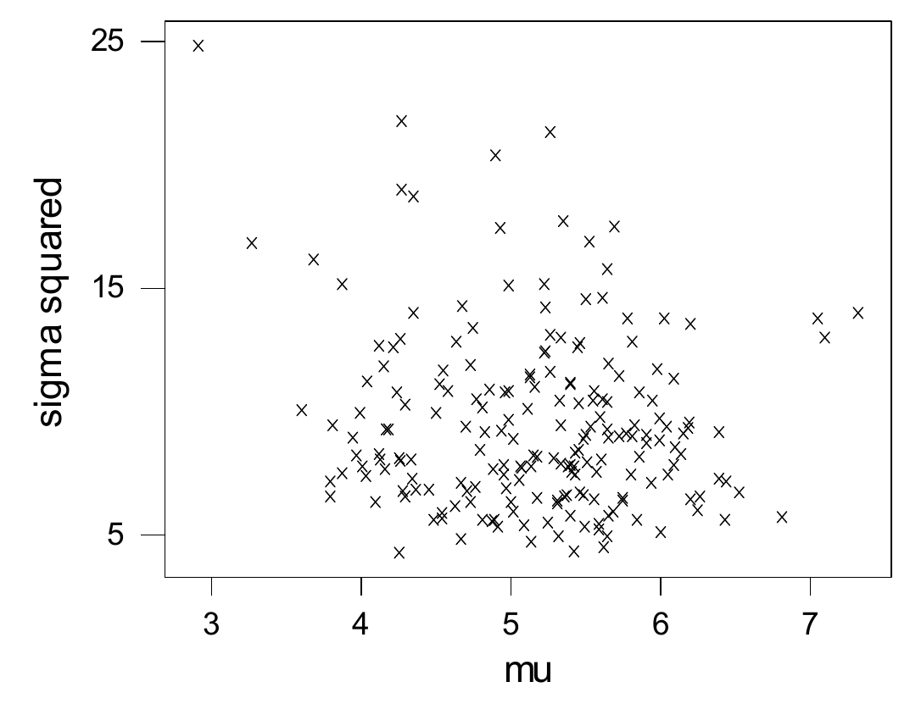
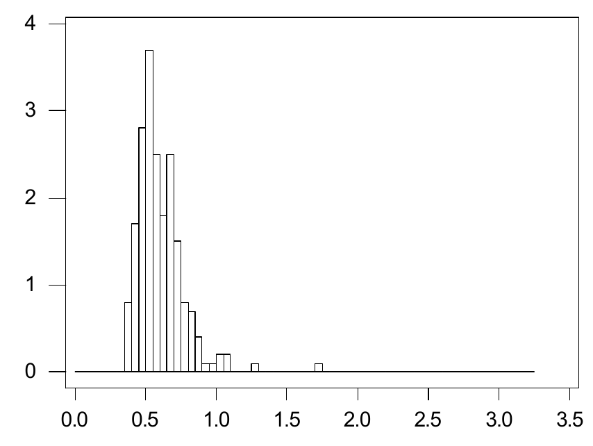
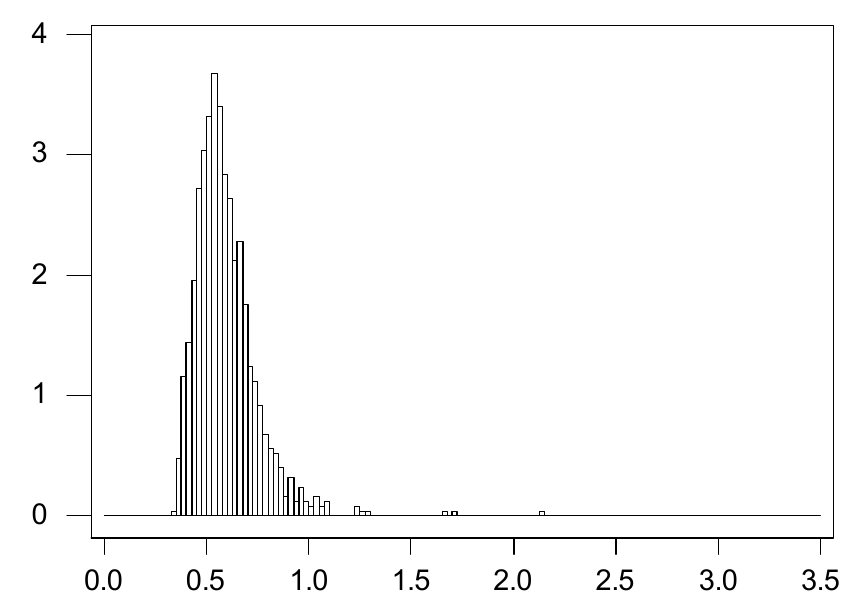
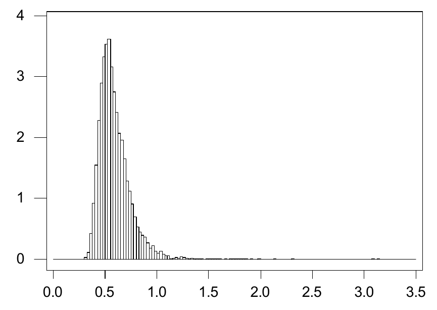
Quando não conseguimos gerar amostras diretamente da distribuição a posteriori, precisamos dos métodos da seção seguinte.
7.3.3 Amostragem da Distribuição a Posteriori via Amostragem de Gibbs (Avançado)
A amostragem da distribuição a posteriori, como descrita na Seção 7.3.2, é muito eficaz quando pode ser implementada. Infelizmente, muitas vezes é difícil ou até impossível fazer isso diretamente, como fizemos no Exemplo 7.3.1. Há, porém, vários algoritmos que nos permitem gerar amostras aproximadas da distribuição a posteriori. Um deles, conhecido como amostragem de Gibbs75, é aplicável em muitos contextos estatísticos.
Para descrever esse algoritmo, suponha que queremos gerar amostras da distribuição conjunta de \((Y_1, \ldots, Y_k) \in R^k\). Suponha ainda que conseguimos gerar valores de cada uma das distribuições condicionais completas \(Y_i \,|\, Y_{-i} = y_{-i}\), em que \[ Y_{-i} = (Y_1, \ldots, Y_{i-1}, Y_{i+1}, \ldots, Y_k), \] isto é, conseguimos gerar valores da distribuição condicional de \(Y_i\) dados os valores de todas as outras coordenadas. O amostrador de Gibbs76 procede então iterativamente, da seguinte maneira.
- Especifique um valor inicial \((y_{1(0)}, \ldots, y_{k(0)})\) para \((Y_1, \ldots, Y_k)\).
- Para \(N > 0\), gere \(Y_{i(N)}\) da sua distribuição condicional dados \((y_{1(N)}, \ldots, y_{i-1(N)}, y_{i+1(N-1)}, \ldots, y_{k(N-1)})\), para cada \(i = 1, \ldots, k\).
Por exemplo, se \(k = 3\), primeiro especificamos \((y_{1(0)}, y_{2(0)}, y_{3(0)})\). Então geramos \begin{align*} Y_{1(1)} \,|\, Y_{2(0)} &= y_{2(0)},\ Y_{3(0)} = y_{3(0)} \\ Y_{2(1)} \,|\, Y_{1(1)} &= y_{1(1)},\ Y_{3(0)} = y_{3(0)} \\ Y_{3(1)} \,|\, Y_{1(1)} &= y_{1(1)},\ Y_{2(1)} = y_{2(1)} \end{align*} para obter \((Y_{1(1)}, Y_{2(1)}, Y_{3(1)})\). Em seguida, geramos \begin{align*} Y_{1(2)} \,|\, Y_{2(1)} &= y_{2(1)},\ Y_{3(1)} = y_{3(1)} \\ Y_{2(2)} \,|\, Y_{1(2)} &= y_{1(2)},\ Y_{3(1)} = y_{3(1)} \\ Y_{3(2)} \,|\, Y_{1(2)} &= y_{1(2)},\ Y_{2(2)} = y_{2(2)} \end{align*} para obter \((Y_{1(2)}, Y_{2(2)}, Y_{3(2)})\) etc. Note que, na verdade, não precisávamos especificar \(Y_{1(0)}\), já que ele nunca é usado.
Pode-se mostrar então (veja a Seção 11.3) que, em circunstâncias bastante gerais, \((Y_{1(N)}, \ldots, Y_{k(N)})\) converge em distribuição para a distribuição conjunta de \((Y_1, \ldots, Y_k)\) quando \(N \to \infty\). Assim, para \(N\) grande, a distribuição de \((Y_{1(N)}, \ldots, Y_{k(N)})\) é aproximadamente igual à distribuição conjunta de \((Y_1, \ldots, Y_k)\) da qual queremos gerar amostras. Desse modo, a amostragem de Gibbs fornece um método aproximado para gerar amostras de uma distribuição de interesse.
Além disso, e este é o resultado mais relevante para simulações, pode-se mostrar que, sob certas condições, \[ \bar{w} = \frac{1}{N} \sum_{i=1}^{N} w(Y_{1(i)}, \ldots, Y_{k(i)}) \xrightarrow{\text{q.c.}} E(w(Y_1, \ldots, Y_k)). \] A estimação da variância de \(\bar{w}\) é diferente da do caso i.i.d., em que usamos a variância amostral, porque agora os termos \(w(Y_{1(i)}, \ldots, Y_{k(i)})\) não são independentes.
Há várias abordagens para estimar a variância de \(\bar{w}\), mas talvez a mais usada seja a técnica das médias em lotes77. Para isso, dividimos a sequência \[ w(Y_{1(0)}, \ldots, Y_{k(0)}), \ldots, w(Y_{1(N)}, \ldots, Y_{k(N)}) \] em \(N/m\) lotes sequenciais sem sobreposição, de tamanho \(m\) (supondo aqui que \(N\) é divisível por \(m\)), calculamos a média de cada lote, obtendo \(\bar{w}_1, \ldots, \bar{w}_{N/m}\), e então estimamos a variância de \(\bar{w}\) por \begin{equation} \frac{s_b^2}{N/m}, \tag{7.3.4} \end{equation} em que \(s_b^2\) é a variância amostral obtida das médias dos lotes, isto é, \[ s_b^2 = \frac{1}{N/m - 1} \sum_{i=1}^{N/m} (\bar{w}_i - \bar{w})^2. \]
Pode-se mostrar que \((Y_{1(i)}, \ldots, Y_{k(i)})\) e \((Y_{1(i+m)}, \ldots, Y_{k(i+m)})\) são aproximadamente independentes para \(m\) grande o bastante. Assim, escolhemos o tamanho de lote \(m\) grande o bastante para que as médias dos lotes sejam aproximadamente independentes, mas não tão grande a ponto de deixar pouquíssimos graus de liberdade para a estimação da variância. Em condições ideais, \(\bar{w}_1, \ldots, \bar{w}_{N/m}\) é uma sequência i.i.d. com média amostral \[ \bar{w} = \frac{1}{N/m} \sum_{i=1}^{N/m} \bar{w}_i, \] e, como de costume, estimamos a variância de \(\bar{w}\) por (7.3.4).
Às vezes, nem mesmo a amostragem de Gibbs pode ser implementada diretamente, porque não conseguimos obter algoritmos para gerar valores de todas as condicionais completas. Há diversas técnicas para lidar com isso, mas em muitas aplicações estatísticas a técnica das variáveis latentes costuma funcionar. Para isso, procuramos algumas variáveis aleatórias, digamos \((V_1, \ldots, V_l)\), tais que cada \(Y_i\) seja função de \((V_1, \ldots, V_l)\) e que possamos aplicar a amostragem de Gibbs à distribuição conjunta de \((V_1, \ldots, V_l)\). Ilustramos a amostragem de Gibbs via variáveis latentes no exemplo a seguir.
Suponha agora que \((x_1, \ldots, x_n)\) é uma amostra de uma distribuição da forma \(X = \mu + \sigma Z\), em que \(Z \sim t(\lambda)\) (veja a Seção 4.6.2 e o Problema 4.6.14). Se \(\lambda > 2\), então \(\mu\) é a média e \(\sigma(\lambda/(\lambda - 2))^{1/2}\) é o desvio padrão78 da distribuição (veja o Problema 4.6.16). Note que \(\lambda = \infty\) corresponde a variação normal, enquanto \(\lambda = 1\) corresponde a variação de Cauchy79.
Vamos fixar \(\lambda\) num valor especificado para refletir o fato de que estamos interessados em modelar situações em que a variável em consideração tem uma distribuição com caudas mais longas que as da distribuição normal. Em geral, isso se manifesta num histograma dos dados com forma aproximadamente simétrica, mas com alguns valores extremos nas caudas, de modo que uma distribuição \(t(\lambda)\) pode ser apropriada.
Suponha que colocamos sobre \((\mu, \sigma^2)\) a a priori dada por \(\mu \,|\, \sigma^2 \sim N(\mu_0, \tau_0^2 \sigma^2)\) e \(1/\sigma^2 \sim \text{Gama}(\alpha_0, \beta_0)\). A função de verossimilhança é dada por \begin{equation} \left( \frac{1}{\sigma^2} \right)^{n/2} \prod_{i=1}^{n} \left[ 1 + \frac{1}{\lambda} \left( \frac{x_i - \mu}{\sigma} \right)^2 \right]^{-(\lambda + 1)/2}, \tag{7.3.5} \end{equation} logo a densidade a posteriori de \((\mu, 1/\sigma^2)\) é proporcional a \begin{multline*} \left( \frac{1}{\sigma^2} \right)^{n/2} \prod_{i=1}^{n} \left[ 1 + \frac{1}{\lambda} \left( \frac{x_i - \mu}{\sigma} \right)^2 \right]^{-(\lambda + 1)/2} \times {} \\ \left( \frac{1}{\sigma^2} \right)^{1/2} \exp\left( -\frac{1}{2\tau_0^2 \sigma^2} (\mu - \mu_0)^2 \right) \left( \frac{1}{\sigma^2} \right)^{\alpha_0 - 1} \exp\left( -\frac{\beta_0}{\sigma^2} \right). \end{multline*} Essa distribuição não é reconhecível de imediato, e não está nada claro como gerar valores dela.
É natural, então, ver se conseguimos implementar a amostragem de Gibbs. Para fazer isso diretamente, precisamos de um algoritmo para gerar valores da distribuição a posteriori de \(\mu\) dado o valor de \(\sigma^2\) e de um algoritmo para gerar valores da distribuição a posteriori de \(\sigma^2\) dado \(\mu\). Infelizmente, nenhuma dessas distribuições condicionais se presta às técnicas discutidas na Seção 2.10, de modo que não podemos implementar a amostragem de Gibbs diretamente.
Lembre, porém, que, quando \(V \sim \chi^2(\lambda)\) \({}= \text{Gama}(\lambda/2, 1/2)\) (veja o Problema 4.6.13) é independente de \(Y \sim N(\mu, \sigma^2)\), então (Problema 4.6.14) \[ Z = \frac{Y - \mu}{\sigma \sqrt{V/\lambda}} \sim t(\lambda). \] Portanto, escrevendo \[ X = \mu + \sigma Z = \mu + \sigma \frac{Y - \mu}{\sigma \sqrt{V/\lambda}} = \mu + \frac{Y - \mu}{\sqrt{V/\lambda}}, \] temos que \(X \,|\, V = v \sim N(\mu, \sigma^2 \lambda / v)\).
Introduzimos agora as \(n\) variáveis latentes, ou variáveis ocultas, \((V_1, \ldots, V_n)\), que são i.i.d. \(\chi^2(\lambda)\), e supomos que \(X_i \,|\, V_i\) \({}= v_i \sim N(\mu, \sigma^2 \lambda / v_i)\). As \(V_i\) são consideradas latentes porque não fazem realmente parte da formulação do problema, mas foram acrescentadas aqui por conveniência (como veremos). Então, notando que há um fator \(v_i^{1/2}\) associado à densidade de \(X_i \,|\, V_i = v_i\), a densidade conjunta dos valores \((X_1, V_1), \ldots, (X_n, V_n)\) é proporcional a \[ \left( \frac{1}{\sigma^2} \right)^{n/2} \prod_{i=1}^{n} \exp\left( -\frac{v_i}{2\sigma^2 \lambda} (x_i - \mu)^2 \right) v_i^{(\lambda/2) - (1/2)} \exp\left( -\frac{v_i}{2} \right). \] Pelo argumento acima, a densidade conjunta marginal de \((X_1, \ldots, X_n)\) (depois de integrar os \(v_i\)) é proporcional a (7.3.5), isto é, uma amostra de tamanho \(n\) da distribuição especificada por \(X = \mu + \sigma Z\), em que \(Z \sim t(\lambda)\). Com a mesma estrutura a priori de antes, temos que a densidade conjunta de \[ (X_1, V_1), \ldots, (X_n, V_n), \mu, 1/\sigma^2 \] é proporcional a \begin{multline} \left( \frac{1}{\sigma^2} \right)^{n/2} \prod_{i=1}^{n} \exp\left( -\frac{v_i}{2\sigma^2 \lambda} (x_i - \mu)^2 \right) v_i^{(\lambda/2) - (1/2)} \exp\left( -\frac{v_i}{2} \right) \times {} \\ \left( \frac{1}{\sigma^2} \right)^{1/2} \exp\left( -\frac{1}{2\tau_0^2 \sigma^2} (\mu - \mu_0)^2 \right) \left( \frac{1}{\sigma^2} \right)^{\alpha_0 - 1} \exp\left( -\frac{\beta_0}{\sigma^2} \right). \tag{7.3.6} \end{multline}
Em (7.3.6), trate \(x_1, \ldots, x_n\) como constantes (observamos esses valores) e considere as distribuições condicionais de cada uma das variáveis \(V_1, \ldots, V_n, \mu, 1/\sigma^2\) dadas todas as outras variáveis. Por (7.3.6), a densidade condicional completa80 de \(\mu\) é proporcional a \[ \exp\left\{ -\frac{1}{2\sigma^2} \left( \sum_{i=1}^{n} \frac{v_i}{\lambda} (x_i - \mu)^2 + \frac{1}{\tau_0^2} (\mu - \mu_0)^2 \right) \right\}, \] que é proporcional a \[ \exp\left\{ -\frac{1}{2\sigma^2} \left[ \left( \sum_{i=1}^{n} \frac{v_i}{\lambda} \right) + \frac{1}{\tau_0^2} \right] \mu^2 + \frac{2}{2\sigma^2} \left[ \left( \sum_{i=1}^{n} \frac{v_i}{\lambda} x_i \right) + \frac{\mu_0}{\tau_0^2} \right] \mu \right\}. \] Disso deduzimos de imediato que \begin{multline*} \mu \,|\, x_1, \ldots, x_n, v_1, \ldots, v_n, \sigma^2 \\ \sim N\left( r(v_1, \ldots, v_n) \left[ \left( \sum_{i=1}^{n} \frac{v_i}{\lambda} x_i \right) + \frac{\mu_0}{\tau_0^2} \right], r(v_1, \ldots, v_n) \sigma^2 \right), \end{multline*} em que \[ r(v_1, \ldots, v_n) = \left[ \left( \sum_{i=1}^{n} \frac{v_i}{\lambda} \right) + \frac{1}{\tau_0^2} \right]^{-1}. \] Por (7.3.6), a densidade condicional de \(1/\sigma^2\) é proporcional a \[ \left( \frac{1}{\sigma^2} \right)^{(n/2) + \alpha_0 - (1/2)} \exp\left\{ -\left( \begin{array}{c} \sum_{i=1}^{n} \frac{v_i}{\lambda} (x_i - \mu)^2 \\ {} + \frac{1}{\tau_0^2} (\mu - \mu_0)^2 + 2\beta_0 \end{array} \right) \frac{1}{2\sigma^2} \right\}, \] e deduzimos de imediato que \begin{multline*} \frac{1}{\sigma^2} \,\Big|\, x_1, \ldots, x_n, v_1, \ldots, v_n, \mu \\ \sim \text{Gama}\left( \frac{n}{2} + \alpha_0 + \frac{1}{2},\ \frac{1}{2} \left( \sum_{i=1}^{n} \frac{v_i}{\lambda} (x_i - \mu)^2 + \frac{1}{\tau_0^2} (\mu - \mu_0)^2 + 2\beta_0 \right) \right). \end{multline*} Por fim, a densidade condicional de \(V_i\) é proporcional a \[ v_i^{(\lambda/2) - (1/2)} \exp\left\{ -\left[ \frac{(x_i - \mu)^2}{2\sigma^2 \lambda} + \frac{1}{2} \right] v_i \right\}, \] e é imediato que \begin{multline*} V_i \,|\, x_1, \ldots, x_n, v_1, \ldots, v_{i-1}, v_{i+1}, \ldots, v_n, \mu, \sigma^2 \\ \sim \text{Gama}\left( \frac{\lambda}{2} + \frac{1}{2}, \frac{1}{2} \left( \frac{(x_i - \mu)^2}{\sigma^2 \lambda} + 1 \right) \right). \end{multline*}
Agora podemos gerar facilmente valores de todas essas distribuições e implementar um algoritmo de amostragem de Gibbs. Como não estamos interessados nos valores de \(V_1, \ldots, V_n\), simplesmente os descartamos à medida que iteramos.
Consideremos agora uma computação específica usando os mesmos dados e a mesma a priori do Exemplo 7.3.1. A análise do Exemplo 7.3.1 supôs que os dados vinham de uma distribuição normal, mas agora vamos supor que os dados são uma amostra de uma distribuição \(\mu + \sigma t(3)\), isto é, \(\lambda = 3\). Consideramos de novo a aproximação da distribuição a posteriori do coeficiente de variação \(\psi = \sigma / \mu\).
Fazemos a iteração da amostragem de Gibbs na ordem \(v_1, \ldots, v_n, \mu, 1/\sigma^2\). Isso implica que precisamos de valores iniciais só para \(\mu\) e \(\sigma^2\) (as condicionais completas das \(v_i\) não dependem das outras \(v_j\)). Tomamos o valor inicial de \(\mu\) como \(\bar{x} = 5{,}2\) e o valor inicial de \(\sigma\) como \(s = 3{,}3\). Para cada valor gerado de \((\mu, \sigma^2)\), calculamos \(\psi\), obtendo a sequência \(\psi_1, \psi_2, \ldots, \psi_N\).
Os valores \(\psi_1, \psi_2, \ldots, \psi_N\) não são i.i.d. da distribuição a posteriori de \(\psi\). O melhor que podemos dizer é que \[ \psi_m \xrightarrow{D} \psi \sim \omega(\cdot \,|\, x_1, \ldots, x_n) \] quando \(m \to \infty\), em que \(\omega(\cdot \,|\, x_1, \ldots, x_n)\) é a densidade a posteriori de \(\psi\). Além disso, valores suficientemente afastados na sequência se comportarão como valores i.i.d. de \(\omega(\cdot \,|\, x_1, \ldots, x_n)\). Assim, uma abordagem é determinar um valor apropriado \(m\) e então extrair \(\psi_m, \psi_{2m}, \psi_{3m}, \ldots\) como uma sequência aproximadamente i.i.d. da distribuição a posteriori. Muitas vezes, porém, é difícil determinar um valor apropriado para \(m\).
De qualquer forma, sabe-se que, sob condições bastante fracas, \[ \bar{w} = \frac{1}{N} \sum_{i=1}^{N} w(\psi_i) \xrightarrow{\text{q.c.}} E(w(\psi) \,|\, x_1, \ldots, x_n) \] quando \(N \to \infty\). Assim, podemos usar a sequência inteira \(\psi_1, \psi_2, \ldots, \psi_N\) e registrar um histograma de densidade de \(\psi\), exatamente como fizemos no Exemplo 7.3.1. O valor do histograma de densidade entre dois pontos de corte convergirá quase certamente81 para o valor correto quando \(N \to \infty\). No entanto, teremos de tomar \(N\) maior ao usar o algoritmo de amostragem de Gibbs do que com a amostragem i.i.d., para obter a mesma precisão. Em muitos exemplos, o efeito de a sequência não ser i.i.d. é muito pequeno, de modo que \(N\) não precisará ser muito maior. Precisamos sempre ter cautela, porém, e a recomendação geral é calcular estimativas para valores sucessivamente maiores de \(N\), parando só quando os resultados parecerem ter se estabilizado.
Na Figura 7.3.5, representamos o histograma de densidade dos valores de \(\psi\) resultantes de \(10^4\) iterações do amostrador de Gibbs. Nesse caso, representar o histograma de densidade de \(\psi\) com base em \(N = 5 \times 10^4\) e \(N = 8 \times 10^4\) resultou apenas em pequenos desvios em relação a esse gráfico. Note que essa densidade é muito parecida com a representada no Exemplo 7.3.1, mas não tem um pico tão acentuado e tem uma cauda direita mais curta.
Também podemos estimar \(\Pi(\psi \le 0{,}5 \,|\, x_1, \ldots, x_n)\), exatamente como fizemos no Exemplo 7.3.1, registrando a proporção de valores da sequência que são menores que 0,5, isto é, \(w(\psi) = I_A(\psi)\), em que \(A = \{\theta : \psi \le 0{,}5\}\). Nesse caso, obtivemos a estimativa 0,5441, que é bem diferente do valor obtido no Exemplo 7.3.1. Assim, usar uma distribuição \(t(3)\) para descrever a variação da resposta fez uma grande diferença nos resultados.
É claro que também precisamos quantificar quão precisa acreditamos ser nossa estimativa. Usando um tamanho de lote \(m = 10\), obtivemos 0,00639 como erro padrão da estimativa 0,5441. Quando tomamos o tamanho de lote \(m = 20\), o erro padrão da média é 0,00659; com um tamanho de lote \(m = 40\), o erro padrão da média é 0,00668. Assim, sentimo-nos bastante confiantes de que estamos avaliando o erro da estimativa de modo apropriado. De novo, sob certas condições, temos que \(\bar{w}\) é assintoticamente normal, de modo que nesse caso podemos afirmar que o intervalo \(0{,}5441 \pm 3(0{,}0066)\) \({}= [0{,}5243;\ 0{,}5639]\) contém o verdadeiro valor de \(\Pi(\psi \le 0{,}5 \,|\, x_1, \ldots, x_n)\) praticamente com certeza82.
Veja o Apêndice B para um código que foi usado para implementar o algoritmo de amostragem de Gibbs descrito aqui.
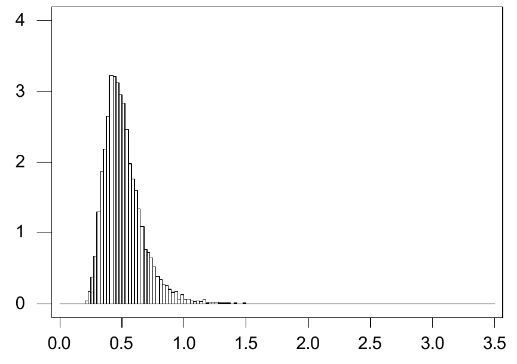
É justo dizer que a introdução da amostragem de Gibbs provocou uma revolução nas aplicações estatísticas, por causa da grande variedade de problemas antes intratáveis que ela resolve com sucesso. Há várias modificações e algoritmos intimamente relacionados. Remetemos o leitor interessado ao Capítulo 11, onde se discute a teoria geral do que se chama Monte Carlo via cadeias de Markov (MCMC).
Resumo da Seção 7.3
- A implementação da inferência bayesiana muitas vezes exige a avaliação de integrais ou somas complicadas.
- Se, porém, conseguimos gerar amostras da distribuição a posteriori do parâmetro, isso muitas vezes leva a aproximações suficientemente precisas dessas integrais ou somas via Monte Carlo.
- Muitas vezes é difícil gerar amostras exatas de uma distribuição a posteriori de interesse. Nessas circunstâncias, a amostragem de Gibbs pode se mostrar um método eficaz para gerar uma amostra aproximada dessa distribuição.
Exercícios
7.3.1 Suponha que temos a seguinte amostra de uma distribuição \(N(\mu, 2)\), em que \(\mu\) é desconhecido.
| 2,6 | 4,2 | 3,1 | 5,2 | 3,7 | 3,8 | 5,6 | 1,8 | 5,3 | 4,0 |
|---|---|---|---|---|---|---|---|---|---|
| 3,0 | 4,0 | 4,1 | 3,2 | 2,2 | 3,4 | 4,5 | 2,9 | 4,7 | 5,2 |
Se a a priori de \(\mu\) é \(\text{Uniforme}(2, 6)\), determine um intervalo de credibilidade 0,95 aproximado para \(\mu\) com base nos resultados para grandes amostras descritos na Seção 7.3.1.
7.3.2 Determine a forma do intervalo de credibilidade 0,95 aproximado da Seção 7.3.1 para o modelo de Bernoulli com uma a priori \(\text{Beta}(\alpha, \beta)\), discutido no Exemplo 7.2.2.
7.3.3 Determine a forma dos intervalos de credibilidade 0,95 aproximados da Seção 7.3.1 para o modelo normal de locação com uma a priori \(N(\mu_0, \tau_0^2)\), discutido no Exemplo 7.2.3.
7.3.4 Suponha que \(X \sim \text{Uniforme}[0, 1/\theta]\) e \(\theta \sim \text{Exponencial}(1)\). Obtenha um algoritmo de Monte Carlo simples, baseado na geração de valores de uma distribuição gama, para gerar um valor da distribuição condicional \(\theta \,|\, X = x\). Generalize isso para uma amostra de tamanho \(n\) da distribuição \(\text{Uniforme}[0, 1/\theta]\). Quando esse algoritmo será ineficiente, no sentido de precisarmos de muita computação para gerar um único valor?
7.3.5 Suponha que \(X \sim N(\theta, 1)\) e \(\theta \sim \text{Uniforme}[0, 1]\). Obtenha um algoritmo de Monte Carlo simples, baseado na geração de valores de uma distribuição normal, para gerar valores da distribuição condicional \(\theta \,|\, X = x\). Generalize isso para uma amostra de tamanho \(n\) da distribuição \(N(\theta, 1)\). Quando esse algoritmo será ineficiente, no sentido de precisarmos de muita computação para gerar um único valor?
7.3.6 Suponha que \(X \sim 0{,}5 N(\theta, 1)\) \({}+ 0{,}5 N(\theta, 2)\) e \(\theta \sim \text{Uniforme}[0, 1]\). Obtenha um algoritmo de Monte Carlo simples, baseado na geração de valores de uma mistura de distribuições normais, para gerar valores da distribuição condicional \(\theta \,|\, X = x\). Generalize isso para uma amostra de tamanho \(n = 2\) da distribuição \(0{,}5 N(\theta, 1) + 0{,}5 N(\theta, 2)\).
Exercícios computacionais
7.3.7 No contexto do Exemplo 7.3.1, construa um histograma de densidade da distribuição a posteriori de \(\psi = \mu + \sigma z_{0{,}25}\), isto é, o primeiro quartil da população, usando \(N = 5 \times 10^3\) e \(N = 10^4\), e compare os resultados. Estime a média a posteriori dessa distribuição e avalie o erro da sua aproximação. (Sugestão: modifique o programa do Apêndice B.)
7.3.8 Suponha que um fabricante retira uma amostra aleatória de itens fabricados e testa cada item para saber se é defeituoso ou não. Considera-se que as respostas são i.i.d. \(\text{Bernoulli}(\theta)\), em que \(\theta\) é a probabilidade de o item ser defeituoso. O fabricante coloca uma distribuição \(\text{Beta}(0{,}5;\ 10)\) sobre \(\theta\). Se uma amostra de \(n = 100\) itens é retirada e são observados 5 defeituosos, então, usando uma amostra de Monte Carlo com \(N = 1000\), estime a probabilidade a posteriori de que \(\theta < 0{,}1\) e avalie o erro da sua estimativa.
7.3.9 Suponha que se sabe que os tempos de vida (em anos) de um item fabricado seguem uma distribuição \(\text{Exponencial}(\lambda)\), em que \(\lambda > 0\) é desconhecido, e que tomamos como a priori \(\lambda \sim \text{Gama}(10, 2)\). Suponha que foram observados os tempos de vida 4,3; 6,2; 8,4; 3,1; 6,0; 5,5 e 7,8. (a) Usando uma amostra de Monte Carlo de tamanho \(N = 10^3\), aproxime a probabilidade a posteriori de que \(\lambda \in [3, 6]\) e avalie o erro da sua estimativa.(b) Usando uma amostra de Monte Carlo de tamanho \(N = 10^3\), aproxime a função de probabilidade a posteriori de \(\lfloor 1/\lambda \rfloor\) (\(\lfloor x \rfloor\) é o maior inteiro menor ou igual a \(x\)).(c) Usando uma amostra de Monte Carlo de tamanho \(N = 10^3\), aproxime a esperança a posteriori de \(\lfloor 1/\lambda \rfloor\) e avalie o erro da sua aproximação.
7.3.10 Gere uma amostra de tamanho \(n = 10\) de uma distribuição \(\text{Pareto}(2)\). Agora finja que você sabe apenas que tem uma amostra de uma distribuição \(\text{Pareto}(\alpha)\), em que \(\alpha > 0\) é desconhecido, e coloque uma a priori \(\text{Gama}(2, 1)\) sobre \(\alpha\). Usando uma amostra de Monte Carlo de tamanho \(N = 10^4\), aproxime a esperança a posteriori de \(1/(\alpha + 1)\) com base na amostra observada e avalie a precisão da sua aproximação dando um intervalo que contenha o valor exato praticamente com certeza. (Sugestão: Problema 2.10.15.)
Problemas
7.3.11 Suponha que \(X_1, \ldots, X_n\) é uma amostra do modelo \(\{f_\theta : \theta \in \negrito{\Omega}\}\) e que todas as condições de regularidade da Seção 6.5 valem. Suponha que a a priori \(\pi(\theta)\) é uma função contínua de \(\theta\) e que a moda a posteriori \(\hat{\theta}(X_1, \ldots, X_n) \xrightarrow{\text{q.c.}} \theta\) quando \(X_1, \ldots, X_n\) é uma amostra de \(f_\theta\) (esta última hipótese vale sob condições muito gerais). (a) Usando o fato de que, se \(Y_n \xrightarrow{\text{q.c.}} Y\) e \(g\) é uma função contínua, então \(g(Y_n) \xrightarrow{\text{q.c.}} g(Y)\), prove que \[ -\frac{1}{n} \left. \frac{\partial^2 \ln(L(\theta \,|\, x_1, \ldots, x_n)\pi(\theta))}{\partial \theta^2} \right|_{\theta = \hat{\theta}} \xrightarrow{\text{q.c.}} I(\theta) \] quando \(X_1, \ldots, X_n\) é uma amostra de \(f_\theta\).(b) Explique até que ponto os métodos aproximados para grandes amostras da Seção 7.3.1 dependem da a priori, se valem as hipóteses que acabamos de descrever.
7.3.12 No Exercício 7.3.10, explique por que o intervalo que você construiu para conter a média a posteriori de \(1/(\alpha + 1)\) praticamente com certeza pode conter ou não o verdadeiro valor de \(1/(\alpha + 1)\).
7.3.13 Suponha que \((X, Y)\) tem distribuição \(\text{Normal Bivariada}(\mu_1, \mu_2, \sigma_1, \sigma_2, \rho)\). Determine um algoritmo de amostragem de Gibbs para gerar valores dessa distribuição. Suponha que você tem um algoritmo para gerar valores de distribuições normais univariadas. Essa é a melhor maneira de gerar amostras dessa distribuição? (Sugestão: Problema 2.8.27.)
7.3.14 Suponha que a densidade conjunta de \((X, Y)\) é dada por \(f_{X,Y}(x, y) = 8xy\) para \(0 < x < y < 1\). Descreva por completo um algoritmo de amostragem de Gibbs para essa distribuição. Em particular, indique como você geraria todas as variáveis aleatórias. Você consegue projetar um algoritmo para gerar valores exatamente dessa distribuição?
7.3.15 No Exemplo 7.3.1, prove que a média a posteriori de \(\psi = \sigma / \mu\) não existe. (Sugestão: use o Problema 7.2.24 e o teorema da esperança total para dividir a integral em duas partes, em que uma parte tem valor \(\infty\) e a outra tem valor \(-\infty\).)
7.3.16 (Amostragem por importância83 baseada na a priori) Suponha que temos um algoritmo para gerar valores da a priori. (a) Indique como você poderia usá-lo para aproximar uma esperança a posteriori usando amostragem por importância (veja o Problema 4.5.21).(b) Qual você imagina ser a principal fraqueza dessa abordagem?
Problemas computacionais
7.3.17 No contexto do Exemplo 7.3.2, construa um histograma de densidade da distribuição a posteriori de \(\psi = \mu + \sigma z_{0{,}25}\), isto é, o primeiro quartil da população, usando \(N = 10^4\). Estime a média a posteriori dessa distribuição e avalie o erro da sua aproximação.84
7.4 Escolha de Distribuições a Priori
A questão de escolher uma priori para um problema é importante. Naturalmente, a ideia é escolher uma priori que reflita as nossas crenças a priori sobre o valor verdadeiro de \(\theta\). Como isso costuma variar de estatístico para estatístico, esse procedimento é muitas vezes criticado como subjetivo demais para estudos científicos. Convém lembrar, porém, que o modelo amostral \(\{f_\theta : \theta \in \negrito{\Omega}\}\) também é uma escolha subjetiva do estatístico. Essas escolhas são guiadas pelo julgamento do estatístico. O que justifica, então, escolher um modelo estatístico ou uma priori em vez de outro?
Na prática, quando os estatísticos escolhem uma priori e um modelo, estão prescrevendo uma distribuição conjunta para \((\theta, s)\). A única maneira de avaliar se foi feita ou não uma escolha adequada é verificar se o \(s\) observado é razoável diante dessa escolha. Se \(s\) for surpreendente quando comparado à distribuição prescrita pelo modelo e pela priori, então temos evidência contra as escolhas do estatístico. Os métodos criados para avaliar isso se chamam procedimentos de verificação de modelos85 e são discutidos no Capítulo 9. Neste ponto, porém, devemos reconhecer a subjetividade que entra nas análises estatísticas, mas nos confortar com o fato de termos uma metodologia para verificar se as escolhas feitas pelo estatístico fazem sentido ou não.
Muitas vezes, o estatístico considera uma família particular \(\{\pi_\lambda : \lambda \in \Lambda\}\) de prioris para um problema e tenta escolher uma priori adequada \(\pi_{\lambda_0} \in \{\pi_\lambda : \lambda \in \Lambda\}\). Nesse contexto, o parâmetro \(\lambda\) é chamado de hiperparâmetro. Note que essa família poderia ser o conjunto de todas as prioris possíveis, de modo que essa formulação não impõe nenhuma restrição. Discutimos agora algumas famílias \(\{\pi_\lambda : \lambda \in \Lambda\}\) de uso comum e métodos para escolher \(\lambda_0 \in \Lambda\).
7.4.1 Prioris Conjugadas
Dependendo do modelo amostral, a família pode ser conjugada.
A família de prioris \(\{\pi_\lambda : \lambda \in \Lambda\}\) para o parâmetro \(\theta\) do modelo \(\{f_\theta : \theta \in \negrito{\Omega}\}\) é conjugada se, para todos os dados \(s \in S\) e todo \(\lambda \in \Lambda\), a posteriori \(\pi_\lambda(\cdot \mid s) \in \{\pi_\lambda : \lambda \in \Lambda\}\).
A conjugação costuma ser muito conveniente, pois começamos com alguma escolha \(\lambda_0 \in \Lambda\) para a priori e depois encontramos o \(\lambda_s \in \Lambda\) correspondente para a posteriori, muitas vezes sem muito cálculo. Embora a conjugação possa ser criticada como mera conveniência matemática, é preciso reconhecer que muitas famílias conjugadas oferecem variedade suficiente para permitir a expressão de um amplo espectro de crenças a priori.
No Exemplo 7.1.1, mostramos, na prática, que a família de todas as distribuições Beta é conjugada para a amostragem do modelo de Bernoulli. No Exemplo 7.1.2, mostra-se que a família de prioris normais é conjugada para a amostragem do modelo normal de locação. No Exemplo 7.1.3, mostra-se que a família de distribuições Dirichlet é conjugada para modelos Multinomiais. No Exemplo 7.1.4, mostra-se que a família de prioris especificada ali é conjugada para a amostragem do modelo normal de locação e escala.
Naturalmente, usar uma família conjugada não nos diz como escolher \(\lambda_0\). Talvez a abordagem mais justificável seja usar a elicitação da priori.
7.4.2 Elicitação
A elicitação consiste em usar explicitamente as crenças do estatístico sobre o valor verdadeiro de \(\theta\) para escolher uma priori em \(\{\pi_\lambda : \lambda \in \Lambda\}\) que reflita essas crenças. Em geral, isso envolve o estatístico fazer perguntas a si mesmo, ou a especialistas na área de aplicação, de tal modo que as respostas especifiquem uma priori da família.
Suponha que estamos amostrando de uma distribuição \(N(\mu, \sigma_0^2)\) com \(\mu\) desconhecido e \(\sigma_0^2\) conhecido, e que restringimos a atenção à família \(\{N(\mu_0, \tau_0^2) : \mu_0 \in R^1, \tau_0^2 > 0\}\) de prioris para \(\mu\). Assim, aqui, \(\lambda = (\mu_0, \tau_0^2)\) e há dois graus de liberdade nessa família. Portanto, especificar duas características independentes especifica uma priori.
Assim, poderíamos pedir a um especialista que especificasse dois quantis da sua distribuição a priori para \(\mu\) (ver o Exercício 7.4.10), já que isso especifica uma priori da família. Por exemplo, poderíamos pedir a um especialista que especificasse um número \(\mu_0\) tal que o valor verdadeiro de \(\mu\) tivesse a mesma chance de ser maior ou menor que \(\mu_0\), de modo que \(\mu_0\) é a mediana da priori. Poderíamos também pedir ao especialista que especificasse um valor \(\upsilon_0\) tal que houvesse 99% de certeza de que o valor verdadeiro de \(\mu\) é menor que \(\upsilon_0\). Esse, naturalmente, é o quantil 0,99 da sua priori.
Alternativamente, poderíamos pedir ao especialista que especificasse o centro \(\mu_0\) da sua distribuição a priori e uma constante \(\tau_0\) tal que \(\mu_0 \pm 3\tau_0\) contenha o valor verdadeiro de \(\mu\) praticamente com certeza. Claramente, nesse caso, \(\mu_0\) é a média a priori e \(\tau_0\) é o desvio padrão a priori.
A elicitação é uma parte importante de qualquer análise estatística bayesiana. Se os especialistas consultados realmente conhecem bem a aplicação, parece intuitivamente claro que vamos melhorar a análise estatística ao incluir essa informação a priori.
O processo de elicitação, no entanto, pode ser um tanto trabalhoso em problemas complicados. Além disso, há várias considerações que precisam ser levadas em conta, envolvendo preconceitos e falhas na maneira como raciocinamos sobre probabilidade fora de uma formulação matemática. Ver Garthwaite, Kadane e O'Hagan (2005), “Statistical methods for eliciting probability distributions”, Journal of the American Statistical Association (v. 100, n. 470, p. 680–700), para uma discussão mais profunda dessas questões.
7.4.3 Bayes Empírico
Quando a escolha de \(\lambda_0\) se baseia nos dados \(s\), esses métodos são chamados de métodos bayesianos empíricos. Logicamente, esses métodos pareceriam violar um princípio básico da inferência, a saber, o princípio da probabilidade condicional. Isso porque, quando calculamos a distribuição a posteriori de \(\theta\) usando uma priori baseada em \(s\), em geral ela deixa de ser a distribuição condicional de \(\theta\) dados os dados. Embora essa seja, sem dúvida, uma preocupação importante, em muitos problemas a aplicação de Bayes empírico leva a inferências com propriedades satisfatórias.
Por exemplo, um método bayesiano empírico consiste em calcular a preditiva a priori \(m_\lambda(s)\) para os dados \(s\) e então basear a escolha de \(\lambda\) nesses valores. Note que a preditiva a priori é como uma função de verossimilhança para \(\lambda\) (já que é a função densidade ou a função de probabilidade do \(s\) observado), e por isso os métodos do Capítulo 6 se aplicam à inferência sobre \(\lambda\). Por exemplo, poderíamos escolher o valor \(\lambda_s\) de \(\lambda\) que maximiza \(m_\lambda(s)\). Os cálculos necessários podem ser extensos, já que \(\lambda\) costuma ser multidimensional. Ilustramos com um exemplo simples.
Suponha que temos uma amostra \(x_1, \ldots, x_n\) de uma distribuição \(\text{Bernoulli}(\theta)\) e cogitamos pôr uma priori \(\text{Beta}(\lambda, \lambda)\) em \(\theta\) para algum \(\lambda > 0\). Assim, a priori é simétrica em torno de \(1/2\), e a dispersão dessa distribuição é controlada por \(\lambda\). Como a média a priori é \(1/2\) e a variância a priori é \(\lambda^2/[(2\lambda + 1)(2\lambda)^2]\) \({}= 1/4(2\lambda + 1) \to 0\) quando \(\lambda \to \infty\), vemos que escolher \(\lambda\) grande leva a uma priori muito precisa. Temos então que \begin{align*} m_\lambda(x_1, \ldots, x_n) &= \frac{\Gamma(2\lambda)}{\Gamma^2(\lambda)} \int_0^1 \theta^{n\bar{x} + \lambda - 1} (1 - \theta)^{n(1 - \bar{x}) + \lambda - 1}\, d\theta \\ &= \frac{\Gamma(2\lambda)}{\Gamma^2(\lambda)} \frac{\Gamma(n\bar{x} + \lambda)\Gamma(n(1 - \bar{x}) + \lambda)}{\Gamma(n + 2\lambda)}. \end{align*} É difícil encontrar o valor de \(\lambda\) que maximiza essa expressão, mas, para dados reais, podemos tabelar \(m_\lambda(x_1, \ldots, x_n)\) e fazer o seu gráfico para obter esse valor. Métodos computacionais mais avançados também podem ser usados.
Por exemplo, suponha que \(n = 20\) e que obtivemos \(n\bar{x} = 5\) como o número de 1's observados. Na Figura 7.4.1, fizemos o gráfico de \(m_\lambda(x_1, \ldots, x_n)\) como função de \(\lambda\). Vemos por ele que o máximo ocorre perto de \(\lambda = 2\). Mais precisamente, por uma tabulação, determinamos que \(\lambda = 2{,}3\) está próximo do máximo. Assim, usamos a distribuição \(\text{Beta}(5 + 2{,}3; 15 + 2{,}3)\) \({}= \text{Beta}(7{,}3; 17{,}3)\) para as inferências sobre \(\theta\).
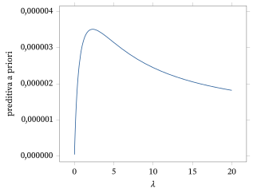
Há muitas questões envolvendo os métodos de Bayes empírico. Esta é uma área ativa de pesquisa estatística.
7.4.4 Bayes Hierárquico
Uma alternativa à escolha de uma priori para \(\theta\) em \(\{\pi_\lambda : \lambda \in \Lambda\}\) consiste em pôr ainda outra distribuição a priori \(\omega\), chamada de hiperpriori, sobre \(\lambda\). Essa abordagem costuma ser chamada de Bayes hierárquico. A priori para \(\theta\) passa a ser, basicamente, \(\pi(\theta) = \int_\Lambda \pi_\lambda(\theta)\omega(\lambda)\, d\lambda\), de modo que, na prática, eliminamos o hiperparâmetro por integração. O problema, então, é como escolher a priori \(\omega\). Em essência, simplesmente trocamos o problema de escolher a priori sobre \(\theta\) pelo de escolher a hiperpriori sobre \(\lambda\). Nas aplicações que usam Bayes hierárquico, é comum fazer escolhas padrão para \(\omega\), embora também pudéssemos recorrer a técnicas de elicitação. Discutiremos isso mais a fundo na Seção 7.4.5.
Assim, nessa situação, a densidade a posteriori de \(\theta\) é igual a \[ \pi(\theta \mid s) = \frac{f_\theta(s) \int_\Lambda \pi_\lambda(\theta)\omega(\lambda)\, d\lambda}{m(s)} = \int_\Lambda \frac{f_\theta(s)\pi_\lambda(\theta)}{m_\lambda(s)} \frac{m_\lambda(s)\omega(\lambda)}{m(s)}\, d\lambda, \] em que \(m(s) = \int_\Lambda \int_{\negrito{\Omega}} f_\theta(s)\pi_\lambda(\theta)\omega(\lambda)\, d\theta\, d\lambda\) \({}= \int_\Lambda m_\lambda(s)\omega(\lambda)\, d\lambda\) e, para \(\lambda\) fixo, \(m_\lambda(s)\) \({}= \int f_\theta(s)\pi_\lambda(\theta)\, d\theta\) (supondo \(\lambda\) contínuo, com densidade a priori dada por \(\omega\)). Note que a densidade a posteriori de \(\lambda\) é \(m_\lambda(s)\omega(\lambda)/m(s)\), enquanto \(f_\theta(s)\pi_\lambda(\theta)/m_\lambda(s)\) é a densidade a posteriori de \(\theta\) dado \(\lambda\).
Portanto, podemos usar \(\pi(\theta \mid s)\) para inferências sobre o parâmetro do modelo \(\theta\) (por exemplo, estimação, regiões de credibilidade e avaliação de hipóteses) e \(m_\lambda(s)\omega(\lambda)/m(s)\) para inferências sobre \(\lambda\). Em geral, porém, não estamos interessados em \(\lambda\) e, na verdade, não faz muito sentido falar no valor “verdadeiro” de \(\lambda\). O valor verdadeiro de \(\theta\) corresponde à distribuição que de fato produziu os dados observados \(s\), ao menos quando o modelo está correto, ao passo que não pensamos em \(\lambda\) como gerado a partir de \(\omega\). Isso implica também outra distinção entre \(\theta\) e \(\lambda\): \(\theta\) faz parte da função de verossimilhança, baseada em como os dados foram gerados, enquanto \(\lambda\) não faz.
Suponha que a situação seja a discutida no Exemplo 7.1.4. Nesse caso, tanto \(\mu\) quanto \(\sigma^2\) fazem parte da função de verossimilhança e, portanto, são parâmetros do modelo, enquanto \(\mu_0\), \(\tau_0^2\), \(\alpha_0\) e \(\beta_0\) não fazem e, portanto, são hiperparâmetros. Para completar essa especificação como modelo hierárquico, precisamos especificar uma priori \(\omega(\mu_0, \tau_0^2, \alpha_0, \beta_0)\), tarefa que deixamos para um curso mais avançado.
7.4.5 Prioris Impróprias e Não Informatividade
Uma abordagem para escolher uma priori, e para interromper a cadeia de prioris numa abordagem de Bayes hierárquico, é prescrever uma priori não informativa86 baseada na ignorância. Essa priori também é chamada de priori padrão ou priori de referência. A motivação é especificar uma priori que ponha o mínimo possível de informação na análise e que, em certo sentido, caracterize a ignorância. Surpreendentemente, em muitos contextos, os estatísticos foram levados a escolher prioris não informativas que são impróprias, isto é, \(\int_{\negrito{\Omega}} \pi(\theta)\, d\theta\) \({}= \infty\), de modo que não correspondem a distribuições de probabilidade.
A ideia aqui é dar uma regra tal que, se um estatístico não tiver nenhuma crença a priori sobre o valor de um parâmetro ou hiperparâmetro, seja prescrita uma priori que reflita isso. Na abordagem de Bayes hierárquico, sobe-se pela cadeia até que o estatístico declare ignorância, e uma priori padrão completa a especificação.
Infelizmente, a maneira exata de exprimir a ignorância acaba sendo uma questão bastante sutil. Em muitos casos, as prioris padrão acabam sendo impróprias, isto é, a integral ou a soma da priori sobre todo o espaço paramétrico é igual a \(\infty\), por exemplo, \(\int_{\negrito{\Omega}} \pi(\theta)\, d\theta\) \({}= \infty\), de modo que a priori não é uma distribuição de probabilidade. A interpretação de uma priori imprópria87 não é nada clara, e o seu uso é um tanto controverso. Naturalmente, \((s, \theta)\) deixa de ter uma distribuição de probabilidade conjunta quando usamos prioris impróprias, e não podemos usar o princípio da probabilidade condicional para justificar que as nossas inferências se baseiem na posteriori.
Houve inúmeras dificuldades associadas ao uso de prioris impróprias, o que talvez não surpreenda. Em particular, é importante notar que, em geral, não há razão para que a posteriori de \(\theta\) exista como uma distribuição de probabilidade própria quando \(\pi\) é imprópria. Se estivermos usando uma priori imprópria, devemos sempre verificar se a posteriori é própria, pois as inferências não farão sentido se estivermos usando uma posteriori imprópria.
Ao usar uma priori imprópria \(\pi\), é totalmente equivalente usar, em vez dela, a priori \(c\pi\) para qualquer \(c > 0\), pois a posteriori sob \(\pi\) é própria se e somente se a posteriori sob \(c\pi\) for própria; nesse caso, as posterioris são idênticas (ver o Exercício 7.4.6).
O exemplo a seguir ilustra o uso de uma priori imprópria.
Suponha que \((x_1, \ldots, x_n)\) é uma amostra de uma distribuição \(N(\mu, \sigma_0^2)\), em que \(\mu \in \negrito{\Omega} = R^1\) é desconhecido e \(\sigma_0^2\) é conhecido. Muitos argumentos em favor de prioris padrão nesse contexto levam à escolha \(\pi(\mu) = 1\), que é claramente imprópria.
Procedendo como no Exemplo 7.1.2, isto é, fingindo que essa \(\pi\) é uma densidade de probabilidade própria, obtemos que a densidade a posteriori de \(\mu\) é proporcional a \[ \exp\left(-\frac{n}{2\sigma_0^2}(\bar{x} - \mu)^2\right). \] Isso implica imediatamente que a distribuição a posteriori de \(\mu\) é \(N(\bar{x}, \sigma_0^2/n)\). Note que essa é a mesma posteriori limite obtida no Exemplo 7.1.2 quando \(\tau_0 \to \infty\), embora o ponto de vista seja bem diferente.
Um método muito usado para escolher uma priori padrão é usar, quando disponível, a priori dada por \(I^{1/2}(\theta)\) quando \(\theta \in R^1\) (e por \((\det I(\theta))^{1/2}\) no caso multidimensional), em que \(I\) é a informação de Fisher88 do modelo estatístico, conforme definida na Seção 6.5. Ela é chamada de priori de Jeffreys89. Note que a priori de Jeffreys depende do modelo.
A priori de Jeffreys tem uma importante propriedade de invariância. Pelo Desafio 6.5.19, temos que, sob certas condições de regularidade, se fizermos uma transformação 1–1 do parâmetro real \(\theta\) por meio de \(\psi = \Psi(\theta)\), então a informação de Fisher de \(\psi\) é dada por \[ I\left(\Psi^{-1}(\psi)\right)\left(\left(\Psi^{-1}\right)'(\psi)\right)^2. \] Portanto, a priori padrão de Jeffreys para \(\psi\) é \begin{equation} I^{1/2}\left(\Psi^{-1}(\psi)\right)\left\lvert\left(\Psi^{-1}\right)'(\psi)\right\rvert. \tag{7.4.1} \end{equation} Vemos agora que, se tivéssemos começado com a priori padrão \(I^{1/2}(\theta)\) para \(\theta\) e feito a mudança de variável90 para \(\psi\), essa priori se transformaria em (7.4.1), pelos Teoremas 2.6.2 e 2.6.3. Um resultado semelhante pode ser obtido quando \(\theta\) é multidimensional.
A priori de Jeffreys muitas vezes acaba sendo imprópria, como ilustra o próximo exemplo.
Nesse caso, a priori de Jeffreys é dada por \(\pi(\theta) = \sqrt{n}/\sigma_0\), que dá a mesma posteriori que no Exemplo 7.4.5. Note que a priori de Jeffreys é, na prática, uma constante e, portanto, a priori do Exemplo 7.4.5 é equivalente à priori de Jeffreys.
A pesquisa sobre regras para determinar prioris não informativas e sobre as consequências de usar essas prioris é uma área ativa da estatística. Embora a impropriedade pareça contraintuitiva, o seu uso muitas vezes produz inferências com boas propriedades.
Resumo da Seção 7.4
- Para implementar a inferência bayesiana, o estatístico precisa escolher uma priori, além do modelo amostral para os dados.
- Essas escolhas precisam ser verificadas se se espera que as inferências obtidas tenham validade prática. Esse tema é discutido no Capítulo 9.
- Foram criadas várias técnicas para permitir a escolha automática de uma priori. Entre elas estão os métodos de Bayes empírico, o Bayes hierárquico e o uso de prioris não informativas para exprimir ignorância.
- As prioris não informativas são muitas vezes impróprias. Devemos sempre verificar se uma priori imprópria leva a uma posteriori própria.
Exercícios
7.4.1 Prove que a família \(\{\text{Gama}(\alpha, \beta) : \alpha > 0, \beta > 0\}\) é uma família conjugada de prioris com respeito à amostragem do modelo dado pelas distribuições \(\text{Pareto}(\lambda)\) com \(\lambda > 0\).
7.4.2 Prove que a família \(\{\pi_{\alpha,\beta}(\theta) : \alpha > 1, \beta > 0\}\) de prioris dada por \[ \pi_{\alpha,\beta}(\theta) = \frac{\theta^{-\alpha} I_{[\beta,\infty)}(\theta)}{(\alpha - 1)\beta^{\alpha - 1}} \] é uma família conjugada de prioris com respeito à amostragem do modelo dado pelas distribuições \(\text{Uniforme}[0, \theta]\) com \(\theta > 0\).
7.4.3 Suponha que o modelo estatístico é dado por
| \(p_\theta(1)\) | \(p_\theta(2)\) | \(p_\theta(3)\) | \(p_\theta(4)\) | |
|---|---|---|---|---|
| \(\theta = a\) | \(1/3\) | \(1/6\) | \(1/3\) | \(1/6\) |
| \(\theta = b\) | \(1/2\) | \(1/4\) | \(1/8\) | \(1/8\) |
e que consideramos a família de prioris dada por
| \(\pi_\tau(a)\) | \(\pi_\tau(b)\) | |
|---|---|---|
| \(\tau = 1\) | \(1/2\) | \(1/2\) |
| \(\tau = 2\) | \(1/3\) | \(2/3\) |
e que observamos a amostra \(x_1 = 1\), \(x_2 = 1\), \(x_2 = 3\).91 (a) Se usarmos o valor máximo da preditiva a priori para os dados para determinar o valor de \(\tau\) e, com ele, a priori, qual priori é escolhida aqui?(b) Determine a posteriori de \(\theta\) com base na priori escolhida.
7.4.4 Para a situação descrita no Exercício 7.4.3, ponha uma priori uniforme no hiperparâmetro \(\tau\) e determine a posteriori de \(\theta\). (Sugestão: teorema da probabilidade total.)
7.4.5 Para o modelo de proporções descrito no Exemplo 7.1.1, determine a densidade preditiva a priori. Se \(n = 10\) e \(n\bar{x} = 7\), qual das prioris dadas por \((\alpha, \beta) = (1, 1)\) ou \((\alpha, \beta) = (5, 5)\) o critério da preditiva a priori escolheria para as inferências seguintes sobre \(\theta\)?
7.4.6 Prove que, ao usar uma priori imprópria \(\pi\), a posteriori sob \(\pi\) é própria se e somente se a posteriori sob \(c\pi\) for própria para \(c > 0\), e que, nesse caso, as posterioris são idênticas.
7.4.7 Determine a priori de Jeffreys para o modelo \(\text{Bernoulli}(\theta)\) e determine a distribuição a posteriori de \(\theta\) com base nessa priori.
7.4.8 Suponha que estamos amostrando de um modelo \(\text{Uniforme}[0, \theta]\), \(\theta > 0\), e queremos usar a priori imprópria \(\pi(\theta) \equiv 1\). (a) A posteriori existe nesse contexto?(b) A priori de Jeffreys existe nesse contexto?
7.4.9 Suponha que um estudante quer pôr uma priori na nota média, de 0 a 100, que a sua turma vai obter na próxima prova de estatística. O estudante acha que uma priori normal centrada em 66 é adequada e que o intervalo \((40, 92)\) deve conter 99% das notas. Identifique a priori completamente.
7.4.10 Um laboratório fez, no passado, muitas medições em amostras de água de uma fonte específica para determinar a presença de um certo contaminante. Pelos seus registros, determinou-se que 50% das amostras tinham contaminação inferior a 5,3 partes por milhão, enquanto 95% tinham contaminação inferior a 7,3 partes por milhão. Se uma priori normal for usada numa análise futura, que priori esses dados determinam?
7.4.11 Suponha que um fabricante quer construir um intervalo de credibilidade 0,95 para o tempo de vida92 médio \(\theta\) de um item vendido pela empresa. Um engenheiro consultor tem 99% de certeza de que o tempo de vida médio é inferior a 50 meses. Se a priori de \(\theta\) for uma \(\text{Exponencial}(\lambda)\), determine \(\lambda\) com base nessa informação.
7.4.12 Suponha que a priori de um parâmetro do modelo \(\mu\) é tomada como \(N(\mu_0, \sigma_0^2)\), em que \(\mu_0\) e \(\sigma_0^2\) são hiperparâmetros. O estatístico consegue elicitar um valor para \(\mu_0\), mas sente-se incapaz de fazer isso para \(\sigma_0^2\). Por isso, o estatístico põe em \(\sigma_0^2\) uma hiperpriori dada por \(1/\sigma_0^2 \sim \text{Gama}(\alpha_0, 1)\) para algum valor de \(\alpha_0\). Determine a priori de \(\mu\). (Sugestão: escreva \(\mu = \mu_0 + \sigma_0 z\), em que \(z \sim N(0, 1)\).)
Exercícios computacionais
7.4.13 Considere a situação discutida no Exercício 7.4.5. (a) Se observarmos \(n = 10\), \(n\bar{x} = 7\) e estivermos usando uma priori simétrica, isto é, \(\alpha = \beta\), faça o gráfico da preditiva a priori como função de \(\alpha\) no intervalo \((0, 20)\) (você vai precisar de um pacote estatístico que calcule valores da função gama93 para isso). Esse gráfico escolhe claramente um valor para \(\alpha\)?(b) Se observarmos \(n = 10\), \(n\bar{x} = 9\), faça o gráfico da preditiva a priori como função de \(\alpha\) no intervalo \((0, 20)\). Compare esse gráfico com o do item (a).
7.4.14 Reproduza o gráfico dado no Exemplo 7.4.3 e verifique que o máximo ocorre perto de \(\lambda = 2{,}3\).
Problemas
7.4.15 Mostre que uma distribuição da família \(\{N(\mu_0, \tau_0^2) : \mu_0 \in R^1, \tau_0^2 > 0\}\) fica completamente determinada quando especificamos dois quantis da distribuição.
7.4.16 (Modelo normal de escala) Considere a família de distribuições \(N(\mu_0, \sigma^2)\), em que \(\mu_0\) é conhecido e \(\sigma^2 > 0\) é desconhecido. Determine a priori de Jeffreys para esse modelo.
7.4.17 Suponha que, para o modelo normal de locação e escala descrito no Exemplo 7.1.4, usamos a priori formada pela priori de Jeffreys para o modelo de locação (apenas uma constante) vezes a priori de Jeffreys para o modelo normal de escala. Determine a distribuição a posteriori de \((\mu, \sigma^2)\).
7.4.18 Considere o modelo normal de locação descrito no Exemplo 7.1.2. (a) Determine a densidade preditiva a priori \(m\). (Sugestão: escreva a densidade conjunta da amostra e de \(\mu\). Use (7.1.2) para eliminar \(\mu\) por integração e não se preocupe em pôr \(m\) numa forma reconhecível.)(b) Como você geraria um valor \((X_1, \ldots, X_n)\) dessa distribuição?(c) \(X_1, \ldots, X_n\) são mutuamente independentes? Justifique a sua resposta. (Sugestão: escreva \(X_i = \mu + \sigma_0 Z_i\), \(\mu = \mu_0 + \tau_0 Z\), em que \(Z, Z_1, \ldots, Z_n\) são i.i.d. \(N(0, 1)\).)
7.4.19 Considere o Exemplo 7.3.2, mas desta vez use a priori \(\pi(\mu, \sigma^2) = 1/\sigma^2\). Desenvolva o algoritmo do amostrador de Gibbs para essa situação. (Sugestão: basta ajustar adequadamente cada condicional completa do Exemplo 7.3.2.)
Problemas computacionais
7.4.20 Use a formulação descrita no Problema 7.4.17 e os dados da tabela a seguir
| 2,6 | 4,2 | 3,1 | 5,2 | 3,7 | 3,8 | 5,6 | 1,8 | 5,3 | 4,0 |
|---|---|---|---|---|---|---|---|---|---|
| 3,0 | 4,0 | 4,1 | 3,2 | 2,2 | 3,4 | 4,5 | 2,9 | 4,7 | 5,2 |
para gerar uma amostra de tamanho \(N = 10^4\) da posteriori. Faça o gráfico de uma estimativa da densidade a posteriori de \(\psi = \sigma/\mu\) por histograma de densidade, com base nessa amostra.
Desafios
7.4.21 Quando \(\theta = (\theta_1, \theta_2)\), a matriz de informação de Fisher \(I(\theta_1, \theta_2)\) é definida no Problema 6.5.15. A priori de Jeffreys é então definida como \((\det I(\theta_1, \theta_2))^{1/2}\). Determine a priori de Jeffreys para o modelo normal de locação e escala e compare-a com a priori usada no Problema 7.4.17.
Tópicos para discussão
7.4.22 Usar métodos de Bayes empírico para determinar uma priori viola o princípio bayesiano de que a todas as incógnitas devem ser atribuídas distribuições de probabilidade. Comente isso. A abordagem bayesiana hierárquica é uma solução para esse problema?
7.5 Demonstrações Adicionais (Avançado)
Dedução da Distribuição a Posteriori para o Modelo Normal de Locação e Escala
No Exemplo 7.1.4, a função de verossimilhança é dada por \[ L(\theta \mid x_1, \ldots, x_n) = (2\pi\sigma^2)^{-n/2} \exp\left(-\frac{n}{2\sigma^2}(\bar{x} - \mu)^2\right) \exp\left(-\frac{n - 1}{2\sigma^2}s^2\right). \] A priori de \((\mu, \sigma^2)\) é dada por \(\mu \mid \sigma^2 \sim N(\mu_0, \tau_0^2\sigma^2)\) e \(1/\sigma^2 \sim \text{Gama}(\alpha_0, \beta_0)\), em que \(\mu_0\), \(\tau_0^2\), \(\alpha_0\) e \(\beta_0\) são fixos e conhecidos.
A densidade a posteriori de \((\mu, \sigma^{-2})\) é então proporcional à verossimilhança vezes a priori conjunta. Portanto, mantendo apenas as partes da verossimilhança e da priori que dependem de \(\mu\) e \(\sigma^2\), a densidade a posteriori conjunta é proporcional a \begin{align*} &\left\{\left(\frac{1}{\sigma^2}\right)^{n/2} \exp\left(-\frac{n}{2\sigma^2}(\bar{x} - \mu)^2\right) \exp\left(-\frac{n - 1}{2\sigma^2}s^2\right)\right\} \times \\ &\left\{\left(\frac{1}{\sigma^2}\right)^{1/2} \exp\left(-\frac{1}{2\tau_0^2\sigma^2}(\mu - \mu_0)^2\right)\right\} \left\{\left(\frac{1}{\sigma^2}\right)^{\alpha_0 - 1} \exp\left(-\frac{\beta_0}{\sigma^2}\right)\right\} \\ ={}& \exp\left(-\frac{n}{2\sigma^2}(\bar{x} - \mu)^2 - \frac{1}{2\tau_0^2\sigma^2}(\mu - \mu_0)^2\right) \left(\frac{1}{\sigma^2}\right)^{\alpha_0 + n/2 - 1/2} \times \\ &\exp\left(-\left[\beta_0 + \frac{n - 1}{2}s^2\right]\frac{1}{\sigma^2}\right) \\ ={}& \exp\left(-\frac{1}{2\sigma^2}\left[\left(n + \frac{1}{\tau_0^2}\right)\mu^2 - 2\left(n\bar{x} + \frac{\mu_0}{\tau_0^2}\right)\mu\right]\right) \times \\ &\left(\frac{1}{\sigma^2}\right)^{\alpha_0 + n/2 - 1/2} \exp\left(-\left[\beta_0 + \frac{n}{2}\bar{x}^2 + \frac{1}{2\tau_0^2}\mu_0^2 + \frac{n - 1}{2}s^2\right]\frac{1}{\sigma^2}\right) \\ ={}& \left(\frac{1}{\sigma^2}\right)^{1/2} \exp\left(-\frac{1}{2\sigma^2}\left(n + \frac{1}{\tau_0^2}\right) \left[\mu - \left(n + \frac{1}{\tau_0^2}\right)^{-1} \left(\frac{\mu_0}{\tau_0^2} + n\bar{x}\right)\right]^2\right) \times \\ &\left(\frac{1}{\sigma^2}\right)^{\alpha_0 + n/2 - 1} \exp\left(-\left[\begin{array}{c} \beta_0 + \frac{n}{2}\bar{x}^2 + \frac{1}{2\tau_0^2}\mu_0^2 + \frac{n - 1}{2}s^2 \\[2pt] -\frac{1}{2}\left(n + \frac{1}{\tau_0^2}\right)^{-1} \left(\frac{\mu_0}{\tau_0^2} + n\bar{x}\right)^2 \end{array}\right]\frac{1}{\sigma^2}\right). \end{align*} Daí deduzimos que a distribuição a posteriori de \((\mu, \sigma^2)\) é dada por \[ \mu \mid \sigma^2, x \sim N\left(\mu_x, \left(n + \frac{1}{\tau_0^2}\right)^{-1}\sigma^2\right) \] e \[ \frac{1}{\sigma^2} \,\Big|\, x \sim \text{Gama}(\alpha_0 + n/2, \beta_x), \] em que \[ \mu_x = \left(n + \frac{1}{\tau_0^2}\right)^{-1}\left(\frac{\mu_0}{\tau_0^2} + n\bar{x}\right) \] e \begin{align*} \beta_x &= \beta_0 + \frac{n}{2}\bar{x}^2 + \frac{\mu_0^2}{2\tau_0^2} + \frac{n - 1}{2}s^2 - \frac{1}{2}\left(n + \frac{1}{\tau_0^2}\right)^{-1} \left(\frac{\mu_0}{\tau_0^2} + n\bar{x}\right)^2 \\ &= \beta_0 + \frac{n - 1}{2}s^2 + \frac{1}{2}\frac{n(\bar{x} - \mu_0)^2}{1 + n\tau_0^2}. \end{align*}
Dedução de \(J(\theta(\psi_0, \lambda))\) para a Normal de Locação e Escala
Aqui temos que \[ \psi = \psi(\mu, \sigma^{-2}) = \frac{\sigma}{\mu} = \frac{1}{\mu}\left(\frac{1}{\sigma^2}\right)^{-1/2} \] e \[ \lambda = \lambda(\mu, \sigma^{-2}) = \frac{1}{\sigma^2}. \] Temos que \begin{align*} \left\lvert \det\begin{pmatrix} \frac{\partial\psi}{\partial\mu} & \frac{\partial\psi}{\partial\left(\frac{1}{\sigma^2}\right)} \\[6pt] \frac{\partial\lambda}{\partial\mu} & \frac{\partial\lambda}{\partial\left(\frac{1}{\sigma^2}\right)} \end{pmatrix}\right\rvert &= \left\lvert \det\begin{pmatrix} -\mu^{-2}\left(\frac{1}{\sigma^2}\right)^{-1/2} & -\frac{1}{2}\mu^{-1}\left(\frac{1}{\sigma^2}\right)^{-3/2} \\[4pt] 0 & 1 \end{pmatrix}\right\rvert \\ &= \left\lvert \det\begin{pmatrix} -\psi^2\lambda^{1/2} & -\frac{1}{2}\psi\lambda^{-1} \\ 0 & 1 \end{pmatrix}\right\rvert = \psi^2\lambda^{1/2}, \end{align*} e assim \[ J(\theta(\psi_0, \lambda)) = (\psi^2\lambda^{1/2})^{-1}. \]
Notas do capítulo
- Termo métodos livres de distribuição — no original, distribution-free methods ↩
- Termo verificação do modelo — no original, model checking ↩
- Termo medida de probabilidade — no original, probability measure ↩
- Termo a priori — no original, prior ↩
- Termo distribuição uniforme — no original, uniform distribution ↩
- Termo distribuição marginal — no original, marginal distribution ↩
- Termo lei da probabilidade total — no original, law of total probability ↩
- Termo distribuição conjunta — no original, joint distribution ↩
- Termo função de probabilidade — no original, probability function ↩
- Termo função densidade — no original, density function ↩
- Termo absolutamente contínua — no original, absolutely continuous ↩
- Termo preditiva a priori — no original, prior predictive ↩
- Termo probabilidade condicional — no original, conditional probability ↩
- Termo distribuição condicional — no original, conditional distribution ↩
- Termo a posteriori — no original, posterior ↩
- Termo a posteriori — no original, posterior ↩
- Termo densidade conjunta — no original, joint density ↩
- Termo verossimilhança — no original, likelihood ↩
- Termo modelo normal de locação — no original, location normal model ↩
- Termo função de verossimilhança — no original, likelihood function ↩
- Termo variância — no original, variance ↩
- Termo espaço paramétrico — no original, parameter space ↩
- Termo modelo normal de locação e escala — no original, location-scale normal model ↩
- Termo método da composição — no original, method of composition ↩
- Termo modelo amostral — no original, sampling model ↩
- Termo estritamente crescente — no original, strictly increasing ↩
- Termo esperança — no original, expectation ↩
- Termo estatística suficiente — no original, sufficient statistic ↩
- Termo avaliação de hipóteses — no original, hypothesis assessment ↩
- Termo complementar — no original, complement ↩
- Termo injetora — no original, one-to-one ↩
- Termo jacobiano — no original, Jacobian ↩
- Termo distribuição qui-quadrado — no original, chi-squared distribution ↩
- Termo variável aleatória — no original, random variable ↩
- Termo graus de liberdade — no original, degrees of freedom ↩
- Termo densidade marginal — no original, marginal density ↩
- Termo tamanho da amostra — no original, sample size ↩
- Termo distribuição degenerada — no original, degenerate distribution ↩
- Termo estimativa — no original, estimate ↩
- Nota do tradutor O original traz \(N(\mu, \tau_0^2)\); pelo Exemplo 7.1.2 e pelo resto do exemplo, seria \(N(\mu_0, \tau_0^2)\). ↩
- Termo intervalo de credibilidade — no original, credible interval ↩
- Termo maior densidade a posteriori — no original, highest posterior density ↩
- Termo função de distribuição acumulada — no original, cumulative distribution function ↩
- Termo intervalo de confiança — no original, confidence interval ↩
- Nota do tradutor Na segunda linha, o original traz \((\mu - \hat{\mu})\); neste exemplo a moda é \(\mu_x\), e seria \((\mu - \mu_x)\). ↩
- Nota do tradutor O original traz \(t(n + 2\alpha_0)\) sem o índice do quantil; pela conta acima, seria \(t_{(1+\gamma)/2}(n + 2\alpha_0)\). ↩
- Termo hiperparâmetro — no original, hyperparameter ↩
- Nota do tradutor o original traz \(N(\mu_0, \sigma_0^2)\); pela definição de \(\Pi_2\) acima, seria \(N(\mu_0, \tau_0^2)\). ↩
- Termo modelo de probabilidade — no original, probability model ↩
- Termo espaço amostral — no original, sample space ↩
- Termo chance a posteriori — no original, posterior odds ↩
- Termo chance a priori — no original, prior odds ↩
- Termo fator de Bayes — no original, Bayes factor ↩
- Termo predição — no original, prediction ↩
- Termo densidade condicional — no original, conditional density ↩
- Termo função de probabilidade condicional — no original, conditional probability function ↩
- Termo preditiva a posteriori — no original, posterior predictive ↩
- Nota do tradutor o original traz \(E(t \,|\, x)\); pela notação da seção, seria \(E(t \,|\, s)\). ↩
- Termo preditor — no original, predictor ↩
- Nota do tradutor o original traz \(Q(C(s) \,|\, s \ge \gamma)\); o sentido é \(Q(C(s) \,|\, s) \ge \gamma\). ↩
- Termo hipótese nula — no original, null hypothesis ↩
- Termo permutação — no original, permutation ↩
- Termo log-verossimilhança — no original, log-likelihood ↩
- Termo estimação — no original, estimation ↩
- Termo independentes e identicamente distribuídas — no original, independent and identically distributed ↩
- Termo surpresa relativa — no original, relative surprise ↩
- Termo região de credibilidade — no original, credible region ↩
- Nota do autor Veja, por exemplo, Approximating Integrals via Monte Carlo and Deterministic Methods, de M. Evans e T. Swartz (Oxford University Press, Oxford, 2000). ↩
- Termo lei forte dos grandes números — no original, strong law of large numbers ↩
- Nota do tradutor O original traz \(E(w(\theta) \,|\, x)\); pelo resto da seção seria \(E(w(\theta) \,|\, s)\). ↩
- Termo teorema central do limite — no original, central limit theorem ↩
- Termo estimativa consistente — no original, consistent estimate ↩
- Termo ilimitada — no original, unbounded ↩
- Termo erro padrão — no original, standard error ↩
- Termo amostragem de Gibbs — no original, Gibbs sampling ↩
- Termo amostrador de Gibbs — no original, Gibbs sampler ↩
- Termo médias em lotes — no original, batch means ↩
- Termo desvio padrão — no original, standard deviation ↩
- Termo de Cauchy — no original, Cauchy ↩
- Termo condicional completa — no original, full conditional ↩
- Termo quase certamente — no original, almost surely ↩
- Termo praticamente com certeza — no original, with virtual certainty ↩
- Termo amostragem por importância — no original, importance sampling ↩
- Nota do tradutor No modelo do Exemplo 7.3.2 (\(Z \sim t(3)\)), o primeiro quartil da população seria \(\mu + \sigma t_{0{,}25}(3)\); o original traz \(z_{0{,}25}\), quantil da normal padrão. ↩
- Termo verificação de modelos — no original, model checking ↩
- Termo priori não informativa — no original, noninformative prior ↩
- Termo priori imprópria — no original, improper prior ↩
- Termo informação de Fisher — no original, Fisher information ↩
- Termo priori de Jeffreys — no original, Jeffreys' prior ↩
- Termo mudança de variável — no original, change of variable ↩
- Nota do tradutor O original traz \(x_2\) duas vezes; pelo contexto, a terceira observação seria \(x_3 = 3\). ↩
- Termo tempo de vida — no original, lifelength ↩
- Termo função gama — no original, gamma function ↩